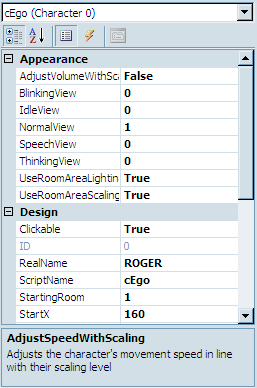
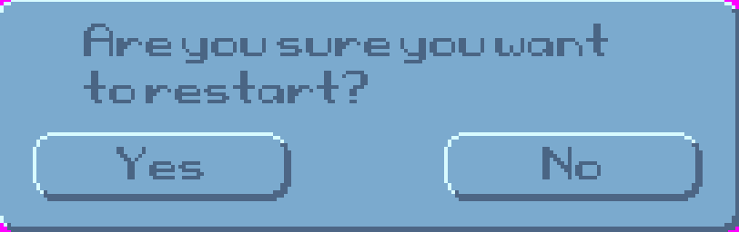
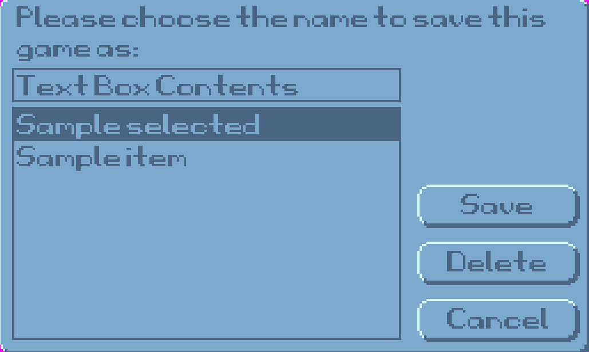
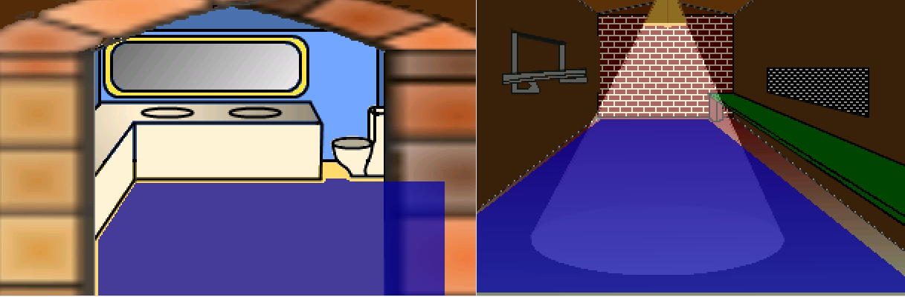
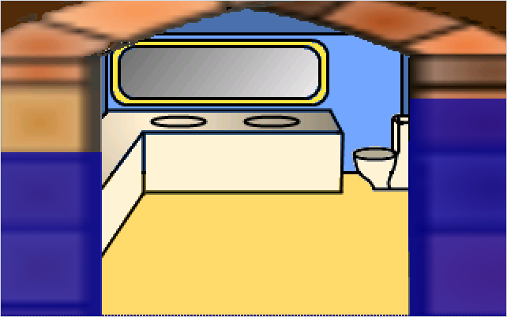
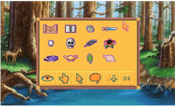
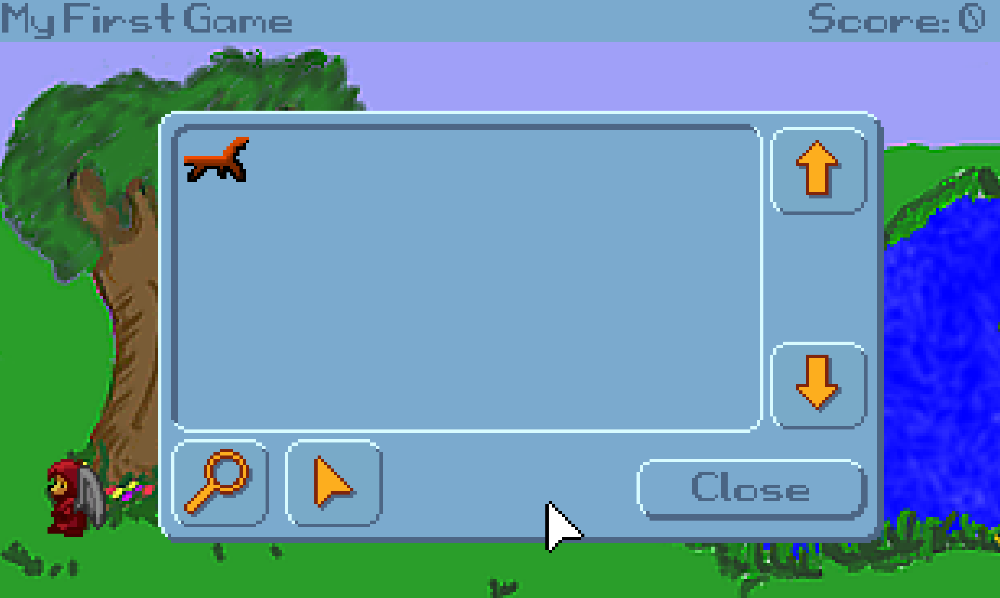
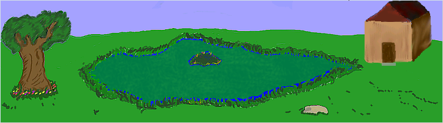

GAME DESIGN WITH AGS
Second Edition
by Dave Ensminger and A. G. Madi
First online electronic edition published: 2021
© 2021, Ensadi LLC
Preface
Dedication
Forward
Acknowledgments
Part I - Getting Started
Chapter 0 (yes, we're programmers)
Getting to Know (and love) AGS
Introduction
AGS, or Adventure Game Studio, is a feature-rich application that allows you to create point-and-click adventure games. If you remember games from the late 1980s and early 1990s like King's Quest, Quest for Glory, Monkey Island, and Maniac Mansion (just to name a few) then you know the types of games we're talking about. AGS provides you with an simple, intuitive interface that you can use to create games just like those, and, with enough creativity, you can use AGS to make games that equal (if not surpass) those professional quality games!
AGS was created by Chris Jones in 1997 as "Adventure Creator." Back then, Adventure Creator was an MS-DOS-based program, it didn't have mouse support and it only allowed very primitive graphics. Step by step, little by little, Adventure Creator evolved from this initial, featureless program into Adventure Game Studio, which now supports high-res graphics, its games can run on multiple operating systems, it has fully integrated sound and video, and it can support thousands of sprites, hundreds of rooms, unlimited characters, and even customized mouse cursors, GUIs, and other interface elements. Plus, AGS has an extremely active user community, so help, criticism, and play testers are never more than a forum post away. And Chris Jones still supports AGS and provides updates and patches to it on a regular basis.
How much does AGS cost? That's the best part. It's FREE! Isn't that the best kind of hobby to get into? Even if you decide to write a commercial game for profit, AGS is still free*!
* AGS itself is 100% free, but some of the internal pieces of AGS (like the MP3 decoder, the graphics and sound subsystems, some of the fonts that AGS uses, etc.) weren't written by Chris Jones, and therefore have their own license agreements that you would need to consider if you released your game for profit. For more information you can visit the AGS license page at https://www.adventuregamestudio.co.uk/site/ags/legal/
Hundreds, if not thousands, of games have been created with AGS over the years, and they range from very amateur games on the low end, to professional quality commercial games on the high end. Here are just a few examples of games that were made using AGS:
Trilby's Notes

Trilby's Notes (http://www.fullyramblomatic.com/notes) was created by Ben Croshaw, aka Yahtzee, and is part of a series of adventure games, collectively known as "Chzo Mythos." The series consists of four games, with Trilby's Notes being the third installment. Unlike most games written with AGS, Trilby's Notes is unique in that the player doesn't use a mouse to control the game. Instead, the action is controlled much like the early Sierra games, where the player moves the character with the arrow keys and types commands he or she wishes the character to perform.
Reality on the Norm series

Easily the largest series of games written with AGS, Reality on the Norm (RoN) (http://www.realityonthenorm.info) is a collaborative collection of games where anyone can create a game and add it to the series. The series takes place in a fictional place called Reality on the Norm, and the series has several recurring characters and themes. The first game was called "Lunchtime of the Damned" (created by none other than Ben Croshaw and it was about a young kid named Davy Jones and his zombie. Since that first game, no less than 90 games have been created in the RoN universe, written and created by dozens of people, and characters ranging from Death to Bill Cosby to David Hasselhoff to Commander Keen have visited RoN.
AGDI Games

As you can imagine, the quality of games written with AGS varies widely from game to game. Few, however, have the same feel as a professionally written game (which is to be expected, since most AGS users don't have the same production budget as a professional game company!) Games from AGDI (Anonymous Game Developers Interactive) break that typical mold, however. AGDI (http://www.agdinteractive.com) is a group of individuals who are "determined to revive the adventure game genre." They make beautifully crafted adventure games, containing stunning artwork, professional quality music, and talented voice acting. AGDI has released three remakes of classic Sierra games: King's Quest I, King's Quest II, and Quest for Glory II. These games are truly works of art and are just as much fun to play as their original counterparts were. Each game stays true to the original classic, but adds new plot elements, puzzles, and in some cases even new characters to meet. AGDI even got Josh Mandel, the voice of King Graham in the original King's Quest games from Sierra, to reprise his role as King Graham in both of their remakes. AGDI also has made an original game called Al Emmo and the Lost Dutchman's Mine. All these games were created using AGS.
History of the Adventure Game
Video Games
Before there were adventure games, people entertained themselves by drawing on cave walls and playing drums by the campfire. Shortly after this, someone invented a computer and decided that it might be fun to play games on it.
Computer Space was the first commercial video game, released in 1971, and boy was it a doozy. It was a coin-operated machine that housed a 15-inch, black-and-white television and four input buttons. You dropped in a quarter, and then you had 90 seconds of riveting gameplay where you controlled your spaceship around the screen and tried to shoot as many UFOs as you could, gaining a point for each UFO you hit. After the 90 seconds was up, if you had a bigger score than the UFOs did, the game would give you an additional 90 seconds and then you would start again. Fun! Just make sure you didn't hit more than 9 UFOs, because if you did your score would reset back to 0 (counting to 10 was HARD). Gameplay would continue like this forever, or until you got tired and had to go back to hunting and gathering.
Games got a bit more exciting in 1972 with the release of everyone's favorite computer tennis game, Pong. This game was based on the Magnavox Odyssey console, which, unlike Computer Space before it , was a console game that people could buy and play at home on their own TVs. Pong connected to a television and had two paddles for input. The graphics were made up of a line drawn vertically down the center of the screen, two smaller vertical lines on the left and right sides of the screen, and a dot which represented a ball (graphics artists had it easy back then). There were two sets of numbers at the top of the screen for the players' scores. The "ball" moved around and the players would bat it back and forth and hope the other player missed it, in which case a point would be awarded. Simple? Yes. Popular? Very!
This was basically the only choice of computer games at the time. These games were considered "fun" at the time, although there wasn't much interaction to them. There were no characters to speak of, little or no story, and certainly no real challenge aside from being able to press some buttons. But things were about to change.
The First Adventure Game
Will Crowther, it could be argued, was the father of the Adventure Game. In 1975, while working as a computer programmer for Bolt Beranek and Newman, he decided he would write a computer game for his two daughters. Crowther called his game Collosal Cave, and it was based on his adventures exploring Mammoth Cave in Kentucky. The game, by today's standards, was very primitive and simple, consisting only of a textual interface and input system, where the player would type commands into the computer and read the result on the screen. Since he designed Collosal Cave for his young daughters, and also wanted it to appeal to the general population (not just computer geeks), he programmed it to understand the commands entered by the user in a "natural language" kind of way. The player could instruct the game to do things by using 1- or 2-word commands. For example, if a player wanted to go north to the next section of the cave, she could simply type "go north" and the program would understand and process the request (alternatively, she could type "walk north" or "go up".) A player who wanted to look at the wall could type "examine wall."
The game was passed from person to person throughout the fledgling Internet (which at that time consisted of only a handful of computers -- nothing like the gargantuan network we know and love today,) until it became fairly ubiquitous among computer geeks. After all, people were hungry for a little computer entertainment, since programs then usually consisted of cryptic user interfaces that were difficult to understand (NLS, anyone?) and computer games were practically unheard of.
The next year, in 1976, a guy by the name of Don Woods found the game on one of the computers at Stanford Unversity and, after corresponding with Crowther, greatly expanded the game. Later that same year, it was ported from FORTRAN to C and and distributed by DECUS (Digital Equipment Corporation User Group) as Colossal Cave Adventure, or simply, Adventure.
Voila! The Adventure Game was born!
A couple of years after Adventure, four programmers at MIT took this idea of an "interactive fiction" adventure game and developed a game similar in design called Dungeon. At least, that was what they had planned on calling it. The game ended up being called Zork, a name which was used at the time to refer generically to an unfinished program. The name kinda stuck, and in 1979 they founded a company called Infocom and published the game as Zork I: The Great Underground Empire in 1980. Infocom later went on to publish many more text adventure games throughout the 1980s, including no fewer than 10 additional games in the Zork series.
Text adventures were all well and good, but eventually computer processors got faster, and computer video got more advanced. Text adventures advanced a bit in the early 80s to the point where the player was presented with a static "background" image. In 1980, the newly founded On-Line Systems (later to become Sierra On-Line) released just such a game called Mystery House, and later that same year they produced the first color adventure game, Wizard and the Princess. These games were still basically text adventure games, however. Even though there were graphics, the graphics didn't animate, and the player had no real interaction with the graphical environment. It was more of a supplement to the text, not the other way around.
This changed in 1984 when Sierra On-Line released the very first truly graphical adventure game: King's Quest: Quest for the Crown. For the first time, a player could control the character on the screen in a (pseudo) 3D environment (at least, it was marketed that way, as a "3D Animated Adventure".) In King's Quest, the player takes the role of Sir Graham, who is sent by the King of Daventry to recover the kingdom's three most precious magical items: the Magic Mirror that forsees the future, the Magic Shield of invincibility, and the Magic Chest that is always filled with gold. Along the way, Graham meets with several characters from fairy tales (Rumplestiltskin, a dragon, and the witch from Hansel and Gretel, to name a few) and in the end, Sir Graham inherits the crown to become King Graham, and ends up being the protagonist in two of the seven subsequent King's Quest adventures. King's Quest was not an instant success; however, it did well enough that Sierra released a sequel just a year later and the graphical adventure game genre took off. They subsequently created classics like Police Quest, Space Quest, Quest for Glory, and Leisure Suit Larry, among others.
These text-based adventure games soon evolved into mouse-controlled games, where, for example, the player didn't have to type commands like "open the door" but could instead use the mouse to click on the door to open it. Sierra created games like this, as did Lucasfilm, George Lucas's movie production company. Lucasfilm teamed up with Atari to produce games under the "Lucasfilm Games" label, which eventually became LucasArts. They created very successful, well-known adventure games like Maniac Mansion, The Secret of Monkey Island, and Indiana Jones and the Fate of Atlantis, which all used this more updated mouse-based interface.
About This Book
This book aims to teach you how to write an adventure game using AGS, from stem to stern, using a game that we designed and wrote specifically for the purpose of this book. The game you'll be writing in this book is called "Foxy's Quest" and through it, we try to walk you through each aspect of a typical adventure game, using hands-on examples and screenshots along the way so you won't get lost. The book is designed as a self-paced tutorial, which you should read sequentially, starting at Chapter 1 and working your way all the way through. After you've read the whole book and you've done all the examples, we present to you, you'll be well-prepared to tackle your own adventure game!
Much of the process of making an AGS game involves dealing with the graphical user interface of the AGS Editor, with all of its menus, buttons, and panels. However, a significant portion of the process involves writing script code to tell AGS how to handle situations and events that come up in your game. For this reason, we'll teach you how to write code using AGS's scripting language. If you've never done any programming before, don't worry. We don't assume that you have any programming experience. However, if you do have some experience, especially with C/C++, Java, or C#, then learning the AGS scripting syntax will be a piece of cake.
With a little determination and motivation, you will be on your way to your own adventure game in just a short time. So, sit back, grab a computer, and follow along with us on your AGS journey!
Book Conventions
We will be using certain syntax and conventions throughout this book to make it easier to read.
- Anything that relates to AGS script (source code and function names) will be printed in a code block similar to this:
// Say hello to everyone.
Display("Hello to everyone");
- Anything that you should click on in the AGS editor will be in bold and will look like the following:
Click the Change... button to change the background... - Any folder names or file names will be italicized as in the following two examples:
Click Create sub-folder and call this folder FoxyMonk.
There you will see a property calledStartingRoom
Or, ...find the file called simple_bg.bmp... - Every once in a while, we'll have some rather useless information that's not good enough for Jeopardy, but could be useful to some of you. We'll put this information into a side note.
Side Note: This is what a side note would look like.
- And finally, for things that we're not sure what to do with, we'll italicize them. Oh, and then we'll make them bold and underline them too. Oh, Oh, and we'll put them in quotes! Kind of like:
If you've ever read the book that was later made into a movie that is also a keyword in a programming language and a newspaper article, called "Main" you'd understand what we mean.
About The Game We're Going to Make
Some of you (ok all of you) will think that our game doesn't make sense. Well, it all depends on what sense you want to make. Making sense is only important for your nose. Otherwise, it would be your hands or eyes. But whatever you decide, it should make sense to you, and that it does.
System Requirements
The version of AGS that we will be using throughout this book is 3.5.0 which is the latest version while we're writing this, so everything here will work if you are using that version of the editor. You may use the newest version available even if it's newer than our version, and we'll promise not to hunt you down and pour hot sauce in your eyes, but some of the features of your fancy new version might be different from ours. So, you've been warned. Beware. (We might decide to use Heinz 57 instead.)
AGS Editor will run on Windows 10, Windows 8, Windows 7, and Windows Vista and requires the .NET Framework 4.5 or later. If you don't know what .NET Framework is, then you most likely don't need to worry about it, since your system probably has it installed anyway (it comes preinstalled with Windows these days.) You'll also need the Microsoft Visual C++ Redistributable for Visual Studio 2015.
The games that you create using AGS have a different set of requirements (which makes sense when you think about it, since the game is a different program from the editor that you used to create the game). AGS games will run on Windows of course (.NET Framwork is not required for the games themselves), and they will run on other systems as well, like Linux and Mac OS with a little tweaking. We'll get into that in more detail in Part 2 of the book, so hang tight.
Installing AGS
Installing the AGS Editor is a simple matter of downloading it from http://www.adventuregamestudio.co.uk/. Click on the download link (see Figure 0.1) and get the latest installer. Double-click the installer and follow the instructions. If you have any problems, then you might be missing the .NET Framework. If you don't have the .NET Framework for some reason, then run a Windows Update on your computer. If you still don't see it there, then you probably have it or you're running Windows ME or something ridiculous. (UPGRADE NOW!) You can also check your Add/Remove Programs under Control Panel for .NET Framework. If you're running Windows Vista or later, then you should already have the .NET Framework installed.
Figure 0.1: The AGS Website. The download link is circled in red.
Creating Your First Game
After successfully installing the AGS Editor, you should be able to easily find it in you Windows Start menu. Running the editor will show an AGS splash screen and then the IDE appears as in Figure 0.2.
You should see three options in the wizard that pops up. More than likely, you don't already have any games to open (otherwise you wouldn't need this book.) Choose the default option to start a new game and click the Continue button. The Start New Game wizard will now guide you (Figure 0.3). After clicking Next, you should see three templates to choose from (Figure 0.4).
Figure 0.3: Start New Game Wizard

Figure 0.4: Start New Game Wizard
New games created with AGS are always based on templates. Templates are basically skeletons for games. You choose your skeleton and build around it.
- Sierra Style is the easiest one to get started with. Choosing this template will create a game that provides you with some default graphics, such as an example character, as well as graphics for the default icons and buttons. It will also include some actions like Save, Restart, and Quit. This is the template we'll be using in this book.
- Empty Game will create a game that contains no graphics, GUIs, sounds, rooms, scripts, etc. It basically gives you nothing, in case you just want to create a brand-new game entirely from scratch. Since we want the graphics and GUIs and extra goodies that are in the Default Game template, and since the process of creating graphics isn't the focus of this book anyway, we won't be using this template at all.
- Verb Coin allows you to create a game with a different interface than the one in the default template. Verb coin can be interesting to work with, but we will not be talking about it in this book.
Side Note: If you'd like to know more about verb coin you can create a game with the Verb Coin template and try it out. The Verb Coin template attempts to emulate the interface style used by some of the LucasArts games, like Full Throttle and The Curse of Monkey Island, as opposed to the default icon-based interface that AGS uses, which is based on the Sierra On-Line adventures like King's Quest IV, Police Quest 3, and Freddy Pharkas, Frontier Pharmacist, to name a few.
Side Note: It's important to note that AGS doesn't limit you to creating games that only use the default interface or the Verb Coin interface, despite the fact that these are the only templates you can choose from. Part of what makes AGS so compelling is the fact that you can customize almost every aspect of the game, including the interface, graphics, and sound. So, if you want a game that has a particular interface that's not in the templates, just go ahead and create your game using the Default template, and then you can tweak it and change it however you want. Just about every type of adventure game interface has been done with AGS, from the LucasArts SCUMM interface used in The Secret of Monkey Island and Maniac Mansion to the text-based interface used in the early Sierra adventures; from the interface in Myst to the type of interface in games from the Adventure Company. It can all be done with AGS, but you might have to customize things a little using the know-how you gain from this book.
Choose the Sierra Style template and click Next. Something like Figure 0.5 should appear. Here you should give your game a name. You can change this later though if you don't like it. You'll also need to give it a file name to use and a folder to put your game in. Typically, your file name and the name of your game will be the same. We're calling our game "My First Game" for now.
Figure 0.5: New Game Information
And now for the final click. Yes, click Finish. Congratulations, you've created your first AGS game. It doesn't do much right now, but believe it or not, your first game is actually playable right now!
Running Your Game
Let's see what this game can do. You should see a window similar to the one in Figure 0.6. We'll discuss the editor interface in a moment, but for now let's run this game we just created. Click on the circle with the green arrow in it. It looks like Figure 0.7.

You'll see some dialog boxes pop up and then, Voila! You have your first Adventure Game running. The game doesn't do much yet, but as you'll see, there is already a lot of functionality built in for you. You will see the main character wearing a blue suit and the mouse cursor will look like a shoe (Figure 0.8). This shoe cursor is used to make the main character walk around the screen. Try clicking around the screen now and the character will walk to wherever you clicked. Move your mouse cursor to the top of the screen and an in-game menu will pop up (Figure 0.9).
Side Note: You might be wondering why the game is running inside a window instead of full screen. This is because we ran the game in Debug Mode (by clicking the green button in Figure 0.7) which will always run in a window. Debug Mode is the mode you'll be running in while you are designing your game, and the thought is, while you're creating your game you don't need to see it in full screen all the time. Your users, though, will be able to run the game in all its full screen glory when you distribute it. There are times when you might want to run your game in full screen mode even while you're designing it, and you can do this at any time by clicking the Build menu, then clicking Run without debugger (or by pressing Ctrl+F5).

The first four icons on the left are used to change what action is to be done on an object or character. From left to right, the actions are walk, look, touch/interact, and talk. Clicking one of these icons will change the mouse cursor to match the action. Try each one of these actions on the main character and you can see how they work. Click the magnifier icon, for example, and your mouse cursor will change into a magnifier. Then if you click the magnifier on the main character you will see a message that says, "Damn, I'm looking good!" Each of the other two icons will display messages as well. As an alternative to using this menu bar to switch between actions, you can also use the right mouse button while playing to cycle through all the mouse actions that are available.
Continuing from left to right, the next icon is a suitcase. Clicking this icon will bring up a screen that shows the player's inventory of items. The default game comes with a Blue Cup and a Key. If you opened the inventory, just click the OK button to close it. The next icon in the menu bar is an empty box. This is there to show the most recently selected inventory item. If no item is selected, or you have nothing, then it will remain an empty box. The next two icons are the save and restore features of the game. These actually work and you can try saving and restoring the game if you like (you know, in case you made a lot of progress so far and want to save). If you click save, you can enter a file name and save the game. You can also delete previously saved games. Clicking restore will show a menu of previous games that you can choose to load. The next item in the menu bar brings up an in-game control panel. As you can see in Figure 0.10, you can save and load games, restart, quit and change other options. The final icon is self explanatory: Exit (I wonder what that does).

Figure 0.10: In Game Control Panel
Well ok then. That's how you make a game and run it. Thanks for buying our book. Please be sure to check out our other wonderful products. For the rest of the book, we will recite all the words to "3,890 Bottles of Beer on the Wall."
Long Beer Song
3,890 bottles of beer on the wallllll, 3,890 bottles of beeeeer.
You take one down. Pass it around. 3,889 bottles of beer on the wall.
3,889 bottles of beer on the wallllll, 3,889 bottles of beeeeer.
You take one down. Pass it around. 3,888 bottles of beer on the wall.
3,888 bottles of beer on the wallllll, 3,888 bottles of beeeeer.
You take one down. Pass it around. 3,887 bottles of beer on the wall.
3,887 bottles of beer on the wallllll, 3,887 bottles of beeeeer.
You take one down. Pass it around. 3,886 bottles of beer on the wall.
3,886 bottles of beer on the wallllll, 3,886 bottles of beeeeer.
You take one down. Pass it around. 3,885 bottles of beer on the wall.
3,885 bottles of beer on the wallllll, 3,885 bottles of beeeeer.
You take one down. Pass it around. 3,884 bottles of beer on the wall.
3,884 bottles of beer on the wallllll, 3,884 bottles of beeeeer.
You take one down. Pass it around. 3,883 bottles of beer on the wall.
3,883 bottles of beer on the wallllll, 3,883 bottles of beeeeer.
You take one down. Pass it around. 3,882 bottles of beer on the wall.
3,882 bottles of beer on the wallllll, 3,882 bottles of beeeeer.
You take one down. Pass it around. 3,881 bottles of beer on the wall.
3,881 bottles of beer on the wallllll, 3,881 bottles of beeeeer.
You take one down. Pass it around. 3,880 bottles of beer on the wall.
3,880 bottles of beer on the wallllll, 3,880 bottles of beeeeer.
You take one down. Pass it around. 3,879 bottles of beer on the wall.
3,879 bottles of beer on the wallllll, 3,879 bottles of beeeeer.
You take one down. Pass it around. 3,878 bottles of beer on the wall.
3,878 bottles of beer on the wallllll, 3,878 bottles of beeeeer.
You take one down. Pass it around. 3,877 bottles of beer on the wall.
3,877 bottles of beer on the wallllll, 3,877 bottles of beeeeer.
You take one down. Pass it around. 3,876 bottles of beer on the wall.
3,876 bottles of beer on the wallllll, 3,876 bottles of beeeeer.
You take one down. Pass it around. 3,875 bottles of beer on the wall.
3,875 bottles of beer on the wallllll, 3,875 bottles of beeeeer.
You take one down. Pass it around. 3,874 bottles of beer on the wall.
3,874 bottles of beer on the wallllll, 3,874 bottles of beeeeer.
You take one down. Pass it around. 3,873 bottles of beer on the wall.
3,873 bottles of beer on the wallllll, 3,873 bottles of beeeeer.
You take one down. Pass it around. 3,872 bottles of beer on the wall.
3,872 bottles of beer on the wallllll, 3,872 bottles of beeeeer.
You take one down. Pass it around. 3,871 bottles of beer on the wall.
3,871 bottles of beer on the wallllll, 3,871 bottles of beeeeer.
You take one down. Pass it around. 3,870 bottles of beer on the wall.
3,870 bottles of beer on the wallllll, 3,870 bottles of beeeeer.
You take one down. Pass it around. 3,869 bottles of beer on the wall.
You didn't think we were serious, did you?
Summary
Let's review the important points we discussed in this chapter:
- Adventure Game History We discussed a little about what adventure games are and where they came from.
- AGS is cool 'Nuff said.
- First Game We created our first game with AGS. Although it doesn't do much yet, you'll be adding to it throughout the rest of the book. We created the game using the Default template, which gives us basic functionality, like a main character, a simple room to walk around in, a mouse cursor with several different action modes, save/restore functionality, and a basic GUI style.
Chapter 1 - The AGS Editor
The Editor
Just in case you missed the last screenshot of the editor, here it is again. (I know I hate it when I have to flip back in a book!)

The editor consists of three main parts. The big part in the middle, the Document Pane, is where you do all of your, um...editing. The section on the top-right shows a tree that looks much like Figure 1.2. This tree, called the Project Tree, allows you to open different editing panes. Go ahead and get familiar with it by double-clicking the options. You'll be using it a lot.

The bottom-right pane will show different things depending on what you're working on. It is called the Properties Pane and allows you to change detailed attributes of whatever object you are currently editing. Sounds like fun? Well it is! Figure 1.3 shows an example of what the Properties Pane looks like when editing a character. If you'd like to see it for yourself, expand the Characters item in the Project Tree and double-click cEgo. In fact, double-click everything and look at the properties that come up. More about this later.

Figure 1.3: The Properties Pane
Let's talk a bit about the different types of editing panes that you can use within AGS. We won't go into too much detail here, but just enough so you get familiar with what AGS can allow you to do within your game.
General Settings
In the Project Tree, scroll all the way to the top and double-click on the item labeled General Settings. This opens the General Settings editor in the Document Pane, which allows you to specify some of the basic settings for your game like the resolution at which your game will run, the name of your game, the maximum score the player can achieve, as well as letting you put in information about who created the game. There are lots of options here and we'll delve into most of the options in Chapter 6.
Colors
The Colors editor lets you define colors within your game. For the most part, you won't be using this editor too much if you selected a 16-bit or 32-bit color palette in the General Settings, but it can be useful for using colors within the AGS scripting engine. (If that last sentence didn't make any sense to you, don't worry about it for now; more will become clear later when we talk about colors in more detail in Chapter 6.)
Sprites
Sprites are simply images within the game. The character you saw in the default game, for example, is a sprite. In fact, since the main character animates, it is actually composed of several sprites that play much like the frames of animation in a cartoon. The Sprites editor is where you go to manage all of the sprites in your game. Double-click on Sprites in the Project Tree, and you'll see several sprites appear in the Document Pane. This isn't all of the sprites, however. Notice that a new tree appears in the Document Pane, with the word Main at the top. Expand this tree and click on the Defaults folder. This is where you'll see the sprites that make up the character, and in the subfolders, there are the sprites for all of the icons in the menu bar that we mentioned earlier. The Sprites editor lets you import new sprites into your game and organize them into folders. We'll be using sprites throughout the entire book, so you'll get very familiar with the Sprite editor.
Text Parser
Do you remember the old games from Sierra like Police Quest and King's Quest where you had to type commands that you wanted the character to do and the computer would respond with ambiguous answers like, "You're not close enough"? Well, if you want to recreate games like those then the Text Parser is your friend. Since the game we're creating in this book is not a text-style game, we will only briefly mention it in Chapter 8.).
Lip Sync
AGS syncs with the lips and the lip syncing is the thing for AGS without lips. If your adventure game shows a close-up portrait of the characters' faces when they are speaking, then you can use the Lip Sync editor to try to closely match the text that the characters are saying to their mouth movements. Although this is a fairly rudimentary feature, it does the job quite nicely and it can really make a character look like he is speaking.
GUIs
A GUI is a Graphical User Interface. GUIs allow a user to interact with the game in some way. It can allow you, as the game creator, to get information from the player of your game by asking questions (Figure 1.4), getting input from the keyboard (Figure 1.5), or allowing the player to change game settings (Figure 1.6). AGS lets you make GUIs for all of these purposes and more. You can even make GUIs to interact with characters. You'll have to wait until you get to Part 2 for more on this. (NOT KIDDING. NO PEEKING AHEAD!)

Figure 1.4: Question GUI

Figure 1.5: Input GUI

Figure 1.6: Settings GUI
Inventory Items
Inventory items are used extensively in most adventure games. Usually, the main character collects items during the game to use at specific points in the game. This is the editor to use to create all these items. Go ahead a look at the default items that are in there now. You'll soon get very familiar with this editor.
Dialogs
The Dialogs editor allows you to create interactive conversations that can take place between characters. You can develop question and answer interactions between characters and have the game proceed differently depending on the answers the player chooses. This is actually a lot of fun. We'll see more of this in Chapter 8
Views
A view is simply a collection of animations. Any animation that you use in your game will be represented by a view. For example, the animation that you see when your main character is walking comes from a view, as does the animation that you see if a cup falls off of a table and smashes on the ground. Go ahead and double-click on VIEW1 and take a look at the editing pane. This is the default view for the main character's walking animation. Since animations are an integral part of an adventure game, making views is going to be one of the most important parts of creating your game. We'll delve extensively into views in Chapter 2
Characters
The Characters editor is where you create the characters that are in the game. Not only is the main character created here, but any character that the main character interacts with would be here as well. The Character editor allows you to specify attributes of each character; including which room the character starts in, which views are used to represent the character, the speed at which the character walks around on the screen, and other such things.
Mouse Cursors
AGS allows you to make many differently shaped mouse cursors to use throughout the game. If you look at the first four cursors in the Project Tree, you will notice that they are the ones that appear in the sample game you created earlier. The mouse cursors you create here can be a single image, or they can be associated with a view, which allows your mouse cursors to animate. You'll learn more about cursors in Chapter 6
Fonts
AGS lets you use different fonts to represent text in your game. However, you cannot use a font without first importing it into the Fonts editor. The Fonts editor supports true type fonts (TTF) as well as SCI (Sierra Creative Interpreter) fonts, which are fonts used in the old Sierra games like King's Quest and Space Quest. More about this when we talk about GUIs later.
Global Variables
Global variables are associated with scripting (If you don't know what a script is, look at the next section really quick and come back here). Variables are objects that you use in scripts that hold values. Normal (non-global) variables can only be used within a specific script file or room. A global variable, however, can be used in any script. This editor is a place to define your global variables for use within your game. If this is all foreign to you, don't worry about it now. You'll pick all this up as we go along.
Scripts
Scripts are, more or less, instructions that you give AGS to tell it to do specific tasks. It's basically the nuts and bolts of your game. There are certain things you will want to do within your game that you just can't do with any of the other editors in AGS, and scripting allows you to do those things. You will quickly find out that scripting is a very important part of creating adventure games. Go ahead and double-click a few scripts and get a feel for what they look like but know that we will be including scripting all throughout this book and you'll get familiar with it soon enough, so don't let it scare you right now.
Plugins
Plugins are extensions to AGS that give it extra functionality. They can be written by anyone and distributed to be used in making games. Plugins are not necessary to create a game and are beyond the scope of this book.
Rooms
Rooms are very, very important. Think of it this way: There would be NO game if there was not at least one room and one character. A room is where the action takes place in your game. Don't let the word "room" confuse you - a room is anywhere action takes place in your game, regardless of whether it's a typical room with four walls, a floor, and a ceiling. A forest, for example, can be a room, and a meadow could also be a room. A room in AGS will contain the background graphic, any objects that are in the room, the room script, and other room goodies like regions, hotspots, walkable areas, edges, and walk-behinds. There is one room already created in the default game. Open the Rooms item in the Project Tree, then expand the item labeled "1:." This is the default room. Double-click Edit room to see the graphics. Double-click Room script to see the script file. There's not much to see here now, but this will grow as we add things to our room later on.
Translations
Je ne sais pas ce que c'est. Was? Verstehest du nicht? That's why you need translations. If you're going to make your game to be playable by people who speak different languages, you'll want to use the Translations editor. This allows the text in your game to be translated into different languages. We will tell you more about this later.
Summary
This chapter focused on the AGS Editor, a very import piece of AGS:
- AGS Editor Components The AGS Editor is made up of three main parts: the Document Pane, the Project Tree, and the Properties Window. The Project Tree gives you access to all of the components in your game.
Chapter 2 - Sprites, Views, and Characters
A quick revisit of what sprites, views, and characters are is in order here. Sprites are simply images within the game. Because a character animates, it usually takes several sprites to make up a character. Views are, simply put, collections of sprites that make up animations. So basically, characters are made up of views which in turn are made up of sprites.
Side Note: You can find the graphics for the following examples on https://github.com/ensadi/FoxysQuest/tree/main/Sprites
Sprites
The first step in creating a character is to draw some sprites. Our character is going to be a fox in a monk outfit with angel wings. (hmm. SOMEONE was drunk!) Find the file named foxy_monk.bmp to follow along. Figure 2.1 shows a quick snapshot of the file. I know you can't tell that it's a fox. So what!? If you want to create your own sprites, then go for it. We'll wait...

As you can see, there are 12 sprites in this file. They each take up the same amount of space to make importing them easier, but that is not necessary. Most of the time, an artist will put many individual sprites into one image file to reduce the number of files needed to create the game, making each sprite the same width and height. That way, the sprites can be aligned in a tiled pattern, as in our example above.
Once you have your sprites saved in a file, the next step will be importing them into your game. Open the Sprites editor by double-clicking Sprites in the Project Tree. You will see two panes open up in the editing area (Figure 2.2). On the left is a list of folders that contain sprites. This is simply a way for you to organize the sprites within your editor. For example, you might want to have all of the sprites associated with a character in a folder with the same name as that character. Your final game could easily contain hundreds, if not thousands, of sprites, and getting into this habit of organizing your sprites will make it easier to find and manipulate sprites later.
Let's create a folder to contain all of our sprites for Foxy Monk. First, right-click on the Main folder on the left editing pane and click Create sub-folder and call this folder FoxyMonk. The right editing pane will now be empty since there are no sprites in this folder (duh!). Let's fix that by adding a few sprites.
To start importing your sprites, right-click in the right editing pane and choose Import new sprite from files... This will bring up the good ol' Windows file open dialog. Find your file and double-click it. You should then see the Import Sprite window open as in Figure 2.3.
Figure 2.3: Import Sprites Window
As you can see, AGS loaded your file and is ready to import the sprites. Let's tell it how we want the file divided up. Use the zoom slider to make the picture bigger so you can see it easier. Hold the mouse at the top-left corner of the picture. Click and hold the mouse button. Drag the mouse down and to the right until the first image has a box around it as in Figure 2.4. Note that in this case, the mouse location needs to end up at position (24,32) because that's the size of each of our sprites (you can see your mouse location as you are highlighting the sprite). Click the Import button now and your first sprite is imported! Feels good on the inside, doesn't it? Well good. Now all we have to do is repeat the above steps 11 more times to import the rest of the sprites for Foxy Monk. (sigh) If only there was a better way...
Well, there is! But first let's delete the sprite you just imported (it will be easier this way, trust me.) Click on the newly imported sprite and hit the delete key and click Yes when asked to confirm.
Figure 2.4: Highlighting a Sprite to Import
Let's start the process again, and this time we'll use the fact that the sprites are tiled to our advantage. Right-click the middle pane and choose Import new sprite using previous files... This option will open up the last file so you don't have to hunt for it again. Zoom in if you like, but make sure that the entire image stays visible (this will be important in just a second). Click the Tiled sprite import checkbox on the left. Tiled sprite import allows you to select all the sprites that you want to import at once, as long as they are all the same size. Change the Number of tiles to 12. Move the mouse pointer to the top-left corner of the image and highlight the first sprite exactly as you did before. Now when you let go of the mouse button, you'll notice all 12 sprites are outlined as in Figure 2.5. Click the Import button now and all your sprites should be imported! Yay!

One other thing to note. Did you notice that our sprites have a green background? This green area won't be drawn when the game is played, thanks to something called transparency. The Import Sprite dialog has an area on the left called Transparent colour. This allows you to tell AGS what the transparent color is in your sprite. Any pixel that is the same color as the transparent color will be invisible when you play your game. If this weren't set correctly in our sprite, Foxy Monk would always have a green rectangle behind her (Figure 2.6).

Figure 2.6: On the left, the Foxy Monk sprite has proper transparency. On the right, transparency is not correct and you can see a green box around the sprite.
Views
Now that we have the sprites imported for our character, we need to create a View for the character. We told you earlier that a view is a collection of sprites that make up an animation. We lied (sorry!). A view is actually a collection of loops, and a loop is a collection of sprites. Put another way, a loop is an animation, and a view is a collection of animations. To understand this, let's use our Foxy Monk as an example. In our image, we had 12 sprites. The first 3 images show Foxy Monk walking away from us, the second 3 show her walking to the right, the next 3 show her walking towards us, and the last 3 show her walking to the left. Each of these directions (up, down, left, and right) is a separate animation (loop), and they will all be contained in a single view that represents Foxy Monk walking (Figure 2.7).
In AGS, the 4 loops that are associated with Foxy Monk walking will all reside in the same View. So later, when we assign this view to Foxy Monk, AGS will automatically know to use loop 0 when she's walking down, loop 1 when she's walking to the left, loop 2 when she's walking to the right, and (you guessed it) loop 3 when she's walking up. In case you're wondering how AGS knows that those loop numbers go with those directions, it's something that's built into AGS. Loop 0 is always the loop for down, loop 1 is always the loop for left, etc. The list of loops and the associated directions is listed in Figure 2.8. The first four loops (loops 0 - 3) are required; if your view does not contain at least four loops, AGS will create them for you automatically. However, the rest of the loops are optional; that is, you don't have to create loop 4 if you don't want to have a separate animation for your character walking down and to the right. In this case, AGS will make an educated guess as to which of the four "cardinal" directions to apply to your character when it is walking in a direction that is not explicitly up, down, left, or right.
| Loop | Direction |
| 0 | Down |
| 1 | Left |
| 2 | Right |
| 3 | Up |
| 4 | Down-Right |
| 5 | Up-Right |
| 6 | Down-Left |
| 7 | Up-Left |
Figure 2.8: Loops and their directions
Let's create the view shown in Figure 2.7. Expand Views under the Project Tree. If you created the default game and have been following along, you will already have two views listed there (VIEW1 and VIEW2). We could change one of those views to suit our needs, but for purposes of demonstration let's go ahead and make a new one. Right-click on Views in the Project Tree, select New View from the popup menu, and name the view vFMNormal. Whoa! That's a weird name. What the heck does vFMNormal mean, anyway? Well, as a general rule, you can name things in AGS whatever you want, but if you follow some simple nomenclature it will make your life much easier when your game gets larger. In this case, our view name begins with a lowercase "v." This stands for "view" and it's there just so that we immediately know just from looking at the name that vFMNormal is a view. The "FM" part of the name stands for Foxy Monk, and "Normal" means that this is Foxy Monk's normal view. (We'll talk about what a normal view is in the next section.)
Side Note: You might be wondering why we're making such a big deal about how things are named within AGS. After all, why name a view starting with a lowercase "v" when it's obvious that the view is a view, since it's in the Views section of the Project Tree? This is a good question, and if we always dealt with our views and other things solely from the Project Tree then we might not need to be picky about the names. But, as you'll find out later, we will be using many of the names we create when we talk about scripting, and we won't want to have to refer back to the Project Tree to remember what we named our stuff. If we're always consistent with the way we name things, then a name like vFMNormal will actually be much easier to remember than if we'd named the view Banana or something arbitrary!
Ok, we've created a view, now what? If you've been paying attention you should be able to answer this question yourself. We need to create our four loops! Open vFMNormal view if it isn't already and notice that there are no loops created yet (Figure 2.9).

Figure 2.9: Our new view with no loops or sprites

Figure 2.10: Our new view with one loop. It doesn't have any sprites assigned to it yet.
Let's fix that now. Click the Create new loop button and Loop 0 will be created as in Figure 2.10. There are three buttons here: Create New Frame, Create new loop, and Delete last loop. These should be self-explanatory, but just in case, we'll discuss each of them. Click the Create new loop button. A second loop will appear called (Loop 1). Now click Delete last loop to delete it. This is how you would create and delete loops from within the view editor. Go ahead and click Create new loop three times to get our four main loops. Now we'll assign sprites to Loop 0. Click the Create New Frame button under Loop 0, and you'll see a blue cup sprite appear (Figure 2.11). The blue cup is the default sprite that AGS uses when it knows a sprite should be there but you haven't told it which sprite to use yet. Double-click the blue cup and AGS will bring up a dialog box to let you choose a sprite to use. Click the FoxyMonk folder on the left, and choose the first of the three sprites that shows Foxy Monk walking down. Click Use this sprite (Figure 2.12). The blue cup has been replaced by Foxy Monk. Rock on! Since we have three sprites for Foxy Monk walking down, this loop will need to have three frames. Click Create New Frame and watch closely at what happens. Now, instead of a blue cup appearing, AGS is smart and it automatically selected the next sprite in the animation. Click Create New Frame again and it will get the third frame. How does AGS know which sprite to use when you create a new frame? Well, it doesn't really. AGS just selected the next sprite in our list of sprites. Since we imported all the Foxy Monk sprites at the same time, the next sprite in our list was the next sprite in the animation. This is common enough that AGS automatically selects the next sprite for you. This is also why it's always a good idea for your sprite file to have the images in the right order and not strewn about every which way.

Figure 2.11: The default Blue Cup appears when AGS doesn't know which sprite to use

Figure 2.12: Choose the first down facing sprite
Now that we have three frames of animation for loop 0, it would be nice to see what the animation looks like. The view editor provides a nice way for you to preview the animation without having to run the game. To see the loop animated, click the Show Preview checkbox above Loop 0 (Figure 2.13), and then click Animate from amongst the new checkboxes that appeared. Aww, look. Foxy Monk is walking, ain't she just precious? Wittle Foxy-woxy Monky-wunky is just da cutest wittle thing! Errr.. ahem...

Figure 2.13: The Show Preview and Animate checkboxes
What we just walked through was one way to create a loop and assign it to a view. Let's look at another (easier) way to do the other three. This time choose Sprites from the Project Tree to bring up the Sprite editor. Click the FoxyMonk folder so we can see Foxy Monk's sprites. Let's select all the sprites that will make up Loop 1 (left). Find the three frames that show Foxy Monk walking to the left. Click the first of those three sprites, hold down the shift key, and click the last one. This will highlight all three sprites of her walking to the left. Now right-click on any of those three sprites and click Assign to View. You will see the Assign Sprites to View window, as shown in Figure 2.14. Under View, choose the view to which you want to assign this animation (view number 3 in our case). (Alternatively, you can click the Choose button and select the view that way, but if you know the view number you can just type it in.) For Loop, choose Loop 1 (left). The next question it asks is, "How would you like to assign the new frames?" Select Overwrite existing loop, since our loop is empty anyway. Leave the default options for everything else and click OK. A dialog box will appear that says, "The selected sprites were assigned successfully." Click OK. Now, go back to your view, and you'll see Loop 1 populated with Foxy Monk walking left!
Repeat the above steps to create Loops 2 and 3 for Foxy Monk walking right and up, respectively. Your view should end up looking like Figure 2.15 when you finish.
Figure 2.14: Assign to View dialog
Figure 2.15: Foxy Monk's Normal View
Characters
Now that we have a view for Foxy Monk, we should be able to easily create a character of her. Start by right-clicking on Characters in the Project Tree and selecting New character. This will create a new item in the tree called 1:cChar1. Ick! What a horrible name. Let's give our character a proper name. Click on cChar1 in the tree to select it. Remember when we talked about the Properties Pane? We'll get to use it now to set up our new character. Look at the Properties Pane and find the section called Design. In this section you should find two important properties: RealName and ScriptName. RealName is the actual name you want to give to your character. As you can see, the real name of the character right now is "New character." Double-click on RealName and Type in Foxy Monk, and then hit Enter. Now isn't that better? Let's turn our attention to the ScriptName field now. The script name is the name that you will be using to refer to your character when writing scripts. In other words, this is the name that AGS will use to refer to the character. AGS assigned the name cChar1 to it by default. The lowercase c in this case stands for "character" and is there to let you know that this is a script name for a character when you're scripting later. (Remember we did something similar with a view in the previous section.) Double-click on ScriptName and type in cFoxyMonk and then hit Enter. Please note that this name shouldn't have spaces. And that's all there is to naming a character.
Side Note: For you programmers, the script name is the variable name.
Now that your character has a name, we need to give it a face. Well, a view actually. Find the section in the Properties Pane named Appearance. Under this section you should find 5 types of views: BlinkingView, IdleView, NormalView, SpeechView, and ThinkingView. The names of these views should give you a hint as to what they're for.
- The blinking view is the animation that is displayed when the character blinks.
- The idle view is the animation for the character when it's just standing there doing nothing. This view is activated automatically after a certain amount of time passes without doing anything (we'll talk about this later.)
- The normal view is, well, the normal view. This is the view that the character will have when it's standing or walking and is the most used view. We created this view earlier in this chapter.
- The speech view is the animation used when the character is talking.
- The thinking view can be used to make the character look like it's thinking about something.
AGS automatically uses the right view when the character is doing each of these actions, so you don't have to think about it. For example, if you have a view assigned for the speech view, then AGS will automatically switch the character's view to the speech view when it's talking, and switches back to the normal view when it's done.
What is most important for us is the normal view. We want Foxy Monk to look like the view we just created when she's standing and walking. AGS assigned View 1 to Foxy Monk by default but that's not the one we want. Double-click NormalView in the Properties Pane and type in 3, and then hit Enter (view 3 was the view we created in the last section, remember?) Now if you look at the Editing Pane you should see Foxy Monk appear as in Figure 2.16.

Figure 2.16: Foxy Monk's Character
Let's play around in the Editing Pane and watch Foxy Monk in action. Start by clicking the Animate checkbox. You should see Foxy Monk start walking. Neat huh? Click the up or down arrow under Loop and you should see Foxy Monk change directions. There should be 4 loops that you can cycle through. Also, note that the Frame box continuously changes as Foxy Monk walks. Let me know when you're done playing with that...
Ok, so we have a character, and she walks. I'd say it's about time to see this character in action. Go ahead and run the game now. Seriously! Don't read anymore until you run the game.
Oh no! Where's Foxy Monk? Don't panic. Now, I know we haven't talked about rooms yet, but in order to see Foxy appear in the game, we have to move her to the first room in the game; the room that the default blue-suite character is currently occupying. By the way, his name is Roger, if you haven't already figured that out. Go back to the Properties Pane and find the Design section. There you will see a property called StartingRoom. Change this property to 1 and run the game again. Voila! Foxy is here! And so is the default guy, errr, I mean Roger. Now click somewhere to move her around. Oh, wait wait wait. She's not moving. Roger is. Back to the drawing board! We want Foxy to be the main character, not Roger. Did you notice that large button labeled "Make this the player character" back in the editing pane (Figure 2.16)? Click this button to make Foxy Monk the main character. Now she will replace Roger as the character that you play. While we're at it, let's go ahead and take Roger out of the game. Double-click on cEgo (yes, that's his script name) under Characters in the Project Tree and change his starting room to (None). While you're there, go ahead and look at the StartX and StartY parameters in the Design section. These are the X and Y coordinates for where in the room the character will initially be. Copy those numbers (127, 142) over to Foxy Monk's properties. If you don't do this, she'll start in that tree trunk looking thing and won't be able to move (We'll talk about Walkable areas of rooms later.) Now run the game again. Foxy Monk should appear all by herself and you should be able to move her around.
Let's explore a few other character options. I don't know about you, but to me, Foxy was moving a bit too slow around the screen. Double-click on Foxy's character in the Project Tree and go back to the Properties Pane. Find the MovementSpeed option under the Movement settings and increase it from 3 to 6. Run the game now and see if you like her speed better. Woohoo!
Summary
In this chapter, we learned about how to create your first character, and along the way we learned about sprites and views.
- Sprites Sprites are the individual graphics that are in your game; for example, the animations that are associated to a character are each made up of one or more sprites. Sprites aren't just for animations, though. A button's image is a sprite, and so is the mouse cursor image. Sprites are imported and managed through the Sprites editor in the Project Tree.
- Views Views are collections of animations. An individual animation is called a Loop. Views are made up of one or more Loops. Loops that contain grapes, apples, and oranges are called Fruit Loops.
- Characters Your game has to contain at least one character, and most games will have many more than that. Characters that the player controls are called Player Characters (PCs), and characters that are computer-controlled are called Non-Player Characters (NPCs). More on NPCs later.
Chapter 3 - Rooms and Events
A game with no room is like a forest with no trees. Now that we got the philosophy out of the way, let's give our friend Foxy Monk a better place to play than the default screen. Like we said before, a room in AGS will contain the background graphic, any objects that are in the room, the room script, and many other things.
Side Note: You can find the graphics for the following examples on https://github.com/ensadi/FoxysQuest/tree/main/backgrounds
Simple Backgrounds
The default background for room 1 was good enough to get our character walking around. But let's change the room and give Foxy Monk a place where she can frolic in some grass. If you want to make your own background, then go ahead. Otherwise find the file called simple_bg.bmp. This file will contain a nice little tree and a small pond. The file is 320 pixels wide and 200 pixels high. "Hmmm...Where did they get those numbers from?" you might be asking yourself. Well, let's take a little detour and explain that. Do you remember the General Settings option in the Project Tree? It's all the way at the top. If you double-click that, the General Settings editor should open up and you should see that the default game's Resolution option is set to 320x200. So, we made our background image that size in order to fit perfectly in the room. Now that you understand that let's go ahead and put that image into the game as room 1's background.
Figure 3.1: General Settings and Game Resolution
Open the room editor and edit room 1 by expanding the Rooms node in the Project Tree and double-clicking on Edit Room under the 1: node. Room 1's editor should be in the Editing Pane now and you should be looking at our famous default background. Changing the background is so easy that you're going to laugh at me when I tell you. Click the Change... button at the top of the edit screen. (Figure 3.2).
Side Note: This would be a good time to learn how to name your rooms. Click on 1: under Rooms in the Project Tree. Now look at the Properties Pane and change the
Descriptionoption to something descriptive. We're going to name room 1 Pond.

Figure 3.2: The Change... Button for Room 1
A File Chooser window should pop up. Navigate to the file simple_bg.bmp and choose it, then click Open. You should see the background turn into your new Tree-Pond-Grass background. And yes, that's what I want to call it. Press F5 now to run the game and have Foxy run amok around our beautiful scenery. Click on different parts of the screen to have Foxy walk around. Ok, ok, so you may have noticed that Foxy is walking on everything! I mean, not only is she walking on the grass where she's supposed to walk, but she can walk on the water and on the tree! As an exercise, why don't you change Foxy's starting position so she's on the grass somewhere (on some other grass than where she is now). As a hint, go to the room editor and move your mouse around the background. You should notice that the Mouse Position coordinates, which are right above the background image, are changing. Choose a nice place to start Foxy (we're choosing 110,167) and set her starting coordinates. If you don't remember how to do it, look at the previous chapter. Now run the game and walk around...are you stuck? Are you? Are you?

Figure 3.3: Tree-Pond-Grass background
Walkable Areas
That's right ladies and gentlemen; it's time to make sure Foxy Monk doesn't walk on things that she shouldn't walk on. Walkable areas in AGS are special areas that are drawn onto the background where characters are allowed to walk. AGS allows you to have up to 15 different walkable areas that you can turn on and off at will. As you should already know, there is one walkable area that was automatically created for you when the game was created. Now we're going to fine tune this walkable area so Foxy only walks where she's supposed to.
Now let's see; people don't normally walk on the sides of houses and on the sky, right? We'll go with that for now. Look at the room editor, just above the background image, where it says Edit this room's. Click the ellipses next to Room and select Walkable areas (Figure 3.4). Notice that a gray looking area is now highlighted starting at the tree and going into the water; this is the walkable area. Now, click on the Fill tool at the top of the screen (circled in red in Figure 3.5) and then RIGHT-CLICK anywhere on that gray walkable area, and poof, it's deleted. So, you should right-click to get rid of a walkable area and left-click to create one. Now we need to recreate the area right. Click the ellipses next to Walkable areas and choose Walkable area ID 1. If you look between the Properties Pane and the Project Tree (Figure 3.6), you will notice a drop-down box that says "Walkable area ID 1." This tells us that we're currently editing the first walkable area, which happens to be the default one.
Figure 3.4: Choose Walkable areas from the Drop-down box


Figure 3.6: Walkable area ID location
Now comes the fun part. We have to create a new walkable area that makes more sense. Choose the Freehand tool from the toolbar (Highlighted in Figure 3.7). Now we're going to see how good you are at free-hand tracing around the picture. Start anywhere you like and trace right at the horizon, and around the base of the tree so that Foxy doesn't trample the flowers, and around the pond because Foxy is a fox and not a duck.
When you're done, it should look something like Figure 3.8.
Figure 3.8: Freehand Tracing (blue line)
Choose the Fill tool from the toolbar and click anywhere Foxy is ALLOWED to walk. You should have something that looks like Figure 3.9. The blue (not including the water) is Walkable Area 1 and will be the only place that Foxy can walk. If your blue covers more area, then undo and check your edges. You might not have closed your line somewhere. Notice that we left a bit of an edge around everything so that Foxy doesn't go right up to something and smack right into it. Also notice that we didn't trace around the tree itself. This does mean that Foxy will still be able to walk right onto it, but that's ok for now (we have plans for that tree). Ok now for the fun part:

Figure 3.9: Completed Walkable Area
Run the game and walk around. You'll find that you will not be able to walk anywhere that is not blue (of course, you can't see the blue areas in the actual game!) In fact, click on one side of the pond and wait for Foxy to get there. Then click on the opposite side of the pond. You'll see that Foxy is now smart enough to go around the pond to her new destination.
Scrolling Backgrounds
Before we fix the problem of Foxy walking everywhere that she's not supposed to, let's do a couple more things first. As we said earlier, we imported a background that was exactly the same size as the game's resolution (320x200 in this case). This is fine and dandy, and it means that the player will be able to see the entire background all the time. What would happen, you might wonder, if we used an image for the background that was bigger than the game's resolution? That is, instead of a background of 320x200, what if we used one that was 721x200 for example? We're glad you asked! We just happen to have a file of that size. Let's load it up and test it out!
Quit out of the game if it's still running and go back to the room editor. We're going to change the background that we just imported to a bigger one so we can see what happens. Click on the Change button again, and this time when the file dialog opens, choose the file scrolling_bg.bmp. After you click Open, you'll get a warning message like the one in Figure 3.10, letting you know that this new background image is a different size than the one you're currently using. If we had done a lot of work with our room, like adding lots of regions or hotspots or something, then changing a background like this would clear all of those areas, which is basically what this message box is telling you. This new background does cause us to have to redo the walkable area in this room, which we'll do in just a minute. Click Yes on the dialog box.

Our new room's background looks very similar to the one we just loaded, but with one important difference: it's longer! Now let's fix that walkable area issue.
Figure 3.11: Scrolling Tree-Pond-Grass background with walkable area
Use what you already learned and create a new walkable area by tracing right at the horizon, around the shack, around the pond, and around the base of the tree and the flowers like in Figure 3.11. Oh, and don't forget that rock.
Ok, now that we've fixed the walkable area, run the game again. Now click close to the right side of the screen to have Foxy walk there. When she gets about halfway across the screen, the background will start to scroll!
Animating Backgrounds
Let's do one more cool thing with backgrounds before we move on. As you might have guessed from this section's title, we're going to add animation in the background. And what better to animate than the pond. Normally, when one is taking a long stroll by a water pond, with a windowless shed and a tree in the park, one would notice that the water ripples ever so slightly as the wind whispers around it.
To make an animating background, you need to simply copy your background image for each frame of animation you want and change the parts of each image that should be animated (in our case, the pond). AGS allows you to have up to 5 frames of animation that make up your animating background. We've already created 5 background images for you that show the animating water (aren't we nice?) In each image, the water in the pond is slightly different so, when they are animated it will look like the water is rippling or waving.
Ok then! Let's ripple us some water.
Quit the game if it's running and go back to the room editor and edit room 1 by double-clicking it. Click the Change... button to change the background and choose the file named RipplePond1.bmp. You should see some white areas show up in the pond. This will be the first image that we're going to add to the background to create the ripple effect. To add the other 4 images, open the drop-down box next to Background: (this will say "Main background") and choose Import new background. Say Yes to the popup and choose the file RipplePond2.bmp. Do the same thing 3 more times choosing the next RipplePond files in the series. Ta da! You have an animating background.
Run the game now. When Foxy shows up to the tree-pond-windowless-shed park now, she'll be able to enjoy a nice ripply pond to stroll next to. But hang on a minute. We think the water is moving just a bit too fast. With that speed, we'd have to make the tree sway back and forth too. We're too lazy for that, so let's just slow the water down. Look at the properties pane for the room and find the Settings section. You'll see a setting called BackgroundAnimationDelay (Figure 3.12). Change this setting from 5 to 15. (We played with it and thought 15 looked best. You can do whatever delay you like.) And that's it! Now to take care of that whole walk-on-the-tree-trunk business...

Figure 3.12: Background Animation Delay
Walk-Behinds
Foxy shouldn't be able to walk on the tree, but she should be able to walk behind it. That's where walk-behind areas come in. Walk-behind areas in AGS give your game an illusion of depth by allowing characters and objects to appear to walk behind sections of your background. Since we want Foxy to be able to walk behind the tree, we have to allow her to walk across that area (which is why we kept the walkable area on top of the tree in the last section), but we need to create a walk-behind area so that Foxy will disappear when she walks behind the tree. Let's do that now.
First, select Walk-behinds from the ellipsis next to Edit this room's, then select "Walk-behind area ID 1" to create the first area. Now, trace the tree just like you traced the walkable area in the last section. You'll need to be a little more precise here so zoom in as far as you can to make the outline of the tree follow as closely as possible to the picture.
Side Note: If you want more control over drawing the walkable areas or walk-behind areas of your room than AGS editor allows, you can always use a paint program of your choice to create an image mask and use it instead. More information on this can be found in Chapter 10.
Once you have the tree outlined, your room's walk-behind should look something like Figure 3.13. Notice the very top of the picture, just above the sky. Do you see a blue dashed line going across the picture? This line is the baseline of the walk-behind area. The baseline is important, so pay attention here.

Figure 3.13: Walk-behind on the Tree
Every walk-behind has a baseline, which is an imaginary line that gives AGS information on when the character should be drawn behind the walk-behind area. You can click and drag this baseline up and down to wherever you want it to be. Whenever a character's baseline* is above the walk-behind's baseline, the character will be drawn behind the walk-behind area. Conversely, whenever a character's baseline is below the walk-behind's baseline, the character will be drawn in front of the walk-behind area. Occasionally, the placement of the walk-behind's baseline takes a little thought, but most of the time the baseline should be placed snug against the bottom of the walk-behind area. Figure 3.14 shows where we put the baseline of the tree walk-behind area. With the baseline in that position, Foxy will disappear behind the tree when she's above the line.
Side Note: By default, the character's baseline is set to the very bottom of the sprite that is used to display the character. If that sounds confusing, just think about the character's baseline as being the same thing as the character's feet. Unless your character is an inverted Squirkle with 7 feet from the planet Vexus, this analogy should work pretty well for you.
Figure 3.14: Baseline for the Walk-behind
Now that we've defined the walk-behind area, Foxy should be able to walk behind the tree. Run the game and see if it works. When Foxy goes behind the tree, she should really go behind the tree (Figure 3.15)! If Foxy doesn't walk behind the tree for you, go back and make sure your baseline is set correctly.
Side Note: By the way, remember how we outlined the flowerbed at the base of the tree when we were creating our walkable area in the last section? The reason we excluded the base of the tree from the walkable area was that it adds to the illusion of depth by making it appear that Foxy walks around the tree. If she could walk directly up to the tree, it would make the tree seem paper thin, which is obviously not what we want. If you want to see what we mean, go back to your walkable area, and fill in the flower bed so that Foxy can walk there, then run the game and have Foxy walk around the tree. The tree seems kinda flat, huh?
Regions
A Region is basically a place that the character walks onto and something happens. That makes no sense; let me try again. A region can be a spot that triggers an event and/or changes the environment. For example, you could change the light level or color tint in that region. You can also trigger events when a player walks INTO the region, OUT OF the region, or is just STANDING in the region. I believe this could best be explained with an example. So, guess what?
Nope, you guessed wrong! We're going to add another room!!! And what better place to add a new room than inside our shack? You can draw your own room of course, but we did the hard work, and you should be able to find a file called ShackRoom1.png, which will become the inside of our shack.
To start, right-click on Rooms in the Project Tree and choose New Room. Keep the default options and click OK. Double-click on Edit room under 2:. in the Project Tree and go ahead and give this room a good name by typing in a name in the Description field of the Properties Pane. We're calling ours Main Hall.
Now think way back to when you first added a background to a room. Do you remember how you did it? Good! Add a background to this room using the file ShackRoom1.png (or one that you made).
Great! Now we need a way for Foxy Monk to be able to walk from outside the shack to inside. That's what we'll use a region for. We're going to put a region right in front of the door on the outside of the shack. Basically, when Foxy Monk steps onto the region it would be as if she walked through the door. Go back to the Project Tree and double-click Edit room under 1: Pond to edit room 1. (Notice that AGS will only allow you to edit one room at a time. Whenever you start editing a room, it will close the previously opened room.) Scroll and zoom the background of the Pond room so you can see the shack's door on the right. Now, select Regions from the ellipsis next to Edit this room's. Look at the space between the Project Tree and the Properties Pane. You should see a drop-down box. This is where you select which region you want to work with. AGS allows you to have up to 15 regions. Region 0 is an eraser region and can't be used for what we want (you use it to get rid of other regions.) Choose Region ID 1 from the drop-down box so we can draw our first region. (Figure 3.16).

Figure 3.16: Choosing Region 1
Drawing a region is very much like drawing a walkable area. Enclose the area for the region with a drawing tool and fill it in. To make our door-to-the-shack region, we chose the Rectangle tool (The blue box in Figure 3.5) and made a small rectangle right in front of the door as in Figure 3.17. Don't make this rectangle too big, otherwise Foxy Monk will go inside the shack when she's far away from the door and that would be just crazy.

Figure 3.17: Region in Front of the Door
That's all there is to making a region; Except for that whole scripting thing. But before we start scripting, we need to add an event to that region. You see that thunderbolt symbol in Figure 3.16? Good. Go ahead and click that. Once you click it, the Properties Pane will change to show 3 different events:
- Walks off region
- Walks onto region
- While standing on region
This tells us that we can do something when the character walks off of the region, do something else when the character walks onto it, or do something repeatedly as long as the character is standing on the region. For our purposes, we want to use the Walks onto region event to make Foxy Monk change rooms when she walks up to the door. To create the script, click on Walks onto region and then click the ellipses that will show up to the right of the input area next to the Walks onto region option (Red circle in Figure 3.18). Doing this will open the script editor for room 1. (The script editor can also be opened by double-clicking Room script in the Project Tree, but that will not add events; it will just open the script editor.)

Figure 3.18: Click the Ellipses to Add a Script
Now for the fun stuff. Oh boy, we're going to get into a bit of scripting now. Don't worry; it's really not as hard as it sounds. AND it doesn't sound hard.
Huh?
You should see a new function called region1_WalksOnto(). A function is a set of instructions that are grouped together to perform a certain task. Nifty huh? Make the function look like Listing 3.1.
function region1_WalksOnto()
{
cFoxyMonk.ChangeRoom(2, 155, 184);
}
Listing 3.1
Let's dissect this line-by-line:
function region1_WalksOnto()
This line declares the function region1_WalksOnto that AGS created for us. Notice that the word function is blue -- this tells you that it's a word that has special meaning in AGS's scripting language. In this case, the word function means that we are beginning to define a function, and the name that follows, region1_WalksOnto, is the name of the function we're defining.
Following the name of the function we would define any parameters that need to be passed to the function to help it work. For example, there's a function called Say that is used to cause a character to say something. Well, if we were using that function, we would need to tell it what the character should say. This text would be passed to the function as a parameter. Function parameters are included in parentheses after the function name. (The region1_WalksOnto function doesn't require any parameters, so there's nothing within the parentheses.)
{
cFoxyMonk.ChangeRoom(2, 155, 184);
}
These next lines are the body of the function. Everything within the curly braces is considered part of the function. In our case, there's only one instruction in our function.
Remember when we were creating Foxy Monk, there was an attribute in her character properties called ScriptName and we set it to cFoxyMonk? Any time we want to refer to Foxy in the script, we have to call her by her Script Name (appropriate, eh?). So, you can see above that we say cFoxyMonk.ChangeRoom. This causes Foxy Monk to eat a jelly donut. No wait! I mean it causes her to change rooms. This time we're calling a function instead of defining one. But what are all those numbers for in the parentheses? Those are the parameters that the ChangeRoom function needs. If you were observant (and assuming you didn't just copy and paste the code above but actually typed it) you would have noticed that when you typed that open parenthesis after the ChangeRoom function, there was a tool tip that popped up (Figure 3.19). If you did happen to copy and paste the code, or if you just didn't see this tool tip pop up before, you might want to try to re-type this line into AGS by hand so that you can see it. This tool tip is there to help you remember what parameters are required for the function that you are using. The first parameter for ChangeRoom is called room, and it's an integer number (we know that because it has an "int" in front of it, which stands for integer.) This is the room that we want Foxy to change to. In our case, we want her to change to room #2 (the Main Hall) so we type 2 for the room parameter. The second and third parameters are both optional (hence the "optional" keyword in front of each parameter) so we don't have to supply these at all, but we will anyway. These two parameters are the x and y coordinates of where Foxy should be located in the new room when she shows up there. We chose coordinates 155 for x and 184 for y.
Side Notes:
You MUST use AGS to create the function as we did here. You CAN'T just open the script editor and type a whole function in because AGS won't know to connect the function to its event. See the Scripting appendix for more.
If you're controlling the main character, you can use the keyword
playerinstead ofcFoxyMonk. It will always stand for the player character.How do you know what x and y coordinates to use? Well, open your room in the room editor (double-click Edit room) and move your mouse around on your room. Do you see at the top, where it says Mouse coords? This tells you the x and y position of your mouse cursor. So, just put your mouse at the spot in your room where you want Foxy's feet to be, and then look at the value of Mouse coords. Plug those numbers into the script and that's all you need to do!
What happens if you don't supply those optional parameters? Many functions in AGS have optional parameters and each function behaves differently if you don't supply them. In the case of
ChangeRoom, for example, if you didn't supply the x and y coordinates then Foxy's position wouldn't change in the new room. In other words, her x and y coordinates would remain the same from one room to the other. So, if she were standing at x, y coordinate (10, 137) and you calledChangeRoombut didn't specify a new x, y location, then she would be at location (10, 137) in the new room as well. Other functions that have optional parameters have fixed default values that they will take if you don't supply them. When in doubt, just hit F1 and refer to the manual. It will tell you what the default values are for each optional parameter in AGS.
That's all there is to the function. Let's review real quick:
- We created a region in front of the house that will be used to cause Foxy to enter the shack.
- We created an Event that was associated to that region so that whenever Foxy walks onto the region it calls our function
region1_WalksOnto. - Inside this function is the scripting command that actually causes Foxy to change rooms.
Cool huh?
Now run your game and have Foxy walk just in front of the door to the shack. If everything worked correctly, Foxy will now be inside the shack! Yippee! Oh, hang on a second...She can't move around in this new room at all (are her feet stuck in cement?) and she can't get back to the pond yet.
First things first: Foxy can't walk around in the new room because we haven't created a walkable area for her yet. Remember that a walkable area defines the area on the screen where characters can walk, and since we haven't created one yet in our new room, Foxy can't walk around at all! That's easily fixed. Go back to the room editor by double-clicking on Edit room under the Main Hall room in the Project Tree. Select Walkable areas and ... you should be quite familiar with this now. Trace around the floor area using the Line tool (Figure 3.20) and then fill that with the Fill area tool (Figure 3.21). Make sure to add a little extra walkable area that goes up into the top room (You'll see why later.)
Figure 3.20: Trace the Walkable Area in the Main Hall

Figure 3.21: Complete Walkable Area in the Main Hall
Now if you run the game you should find that Foxy can walk around in the shack, but there's still one problem: once she enters the shack, there's no way for her to leave! Don't worry Foxy, we'll fix that in the next section.
Room Edges
Regions are one way to change rooms, but it's not always the best way. Most of the time room changes will occur as the character walks off one of the room's edges. Unless you want to do some teleporting, of course.
The first thing we should do is allow Foxy to leave the shack and get back out that door. We could create a region at the bottom of the shack floor and put some code in place for that region to move Foxy out to the pond area, or we could use the room's bottom edge for that. Since changing rooms happens at the edges most of the time, room edges cut down on some of the work of having to draw the regions.
tart by choosing Edges from the ellipsis at the top of the room editor. (We're assuming you know where this is by now.) You should see 4 yellow lines -- one for each edge (Figure 3.22)

Be aware that one or more of the edges might be, literally, right up along the edge, so look hard to find them (The left edge in Figure 3.22 is flush against the left side.) Just like you can create a function that runs when a character enters a region, you can also set up a function that runs when a character crosses one of these edges. To leave the shack, we want to fire up a function when Foxy crosses the bottom edge (where she came in). We need the bottom edge to be moved up a little so that Foxy can actually cross it. Click and drag the bottom edge so that the y coordinate (the second number in the Mouse Position) is set at about 188.
Now let's write the function. Make sure that the Properties Pane is set for the room itself by choosing Main Hall from the drop-down then click the lightning bolt between the Project Tree and the Properties Pane (see Figure 3.18 if you don't remember where the lightning bolt is.) You should see some events pop up. One of these events should be Walks off bottom edge. Click on that event and then click on the ellipses button on the far right that will pop up. This is going to create the function, link to the event, and place you in the function (script) editor. The code for this function is going to be very similar to the code for the region we created earlier and looks like Listing 3.2.
Side Note: From now on, when we refer to the edges of a room, we will be talking about the edges that we can drag and NOT the physical edge of the picture.
function room_LeaveBottom()
{
cFoxyMonk.ChangeRoom(1, 634, 108);
}
Listing 3.2
As you can see, the differences between this function and the last one we wrote are the name of the function, the room number to change to, and the x,y coordinates. We chose those coordinates by looking at room 1 (the Pond) and placing the mouse where we want Foxy to be when she comes out. Oh, and make sure not choose chose any x,y coordinates that are right in the region we created in room 1. Otherwise, Foxy will never be able to leave the shack because as soon as she does, she'll step on the region and come right back in.
And that's all there is to edges. While we're here, let's go ahead and create the two remaining rooms in the shack and create edges to get into and out of them. Find two files named ShackRoom2.png and ShackRoom3.png. Create two new rooms with those files as backgrounds. Make ShackRoom2.png room 3 and ShackRoom3.png room 4. Well ok, so the numbering can get confusing. Live with it. Name room 3 "Bathroom" and room 4 "Longroom." Hopefully, you remember how to do all that. Now create walkable areas in both rooms that look something like Figure 3.23.

Figure 3.23: The Other 2 Rooms in the Shack
And yes, we know that the walkable area in the bathroom goes behind the wall, so guess what you have to do with that. Yep, create a walk-behind for it so it looks like Figure 3.24 (we created two.) And remember to set the baseline for your walk-behind all the way at the bottom so that Foxy will always be behind that wall when she walks there. (You can see ours as a dotted blue line all the way at the bottom.)

Figure 3.24: Walk-behinds in the Bathroom
Great! Now we're ready to add some functions for two more edges in our first shack room. Let's start with the bathroom. Go back to editing room 2's edges and drag the top edge so that it's just at the junction where the floor meets the walls (Figure 3.25). Once the edge is in the correct spot, create a new function for the Walks off top edge event (hint: click the ellipses button next to the event) and make it so it looks like Listing 3.3.

Figure 3.25: Set the Top Edge at the Bottom of the Wall
function room_LeaveTop()
{
cFoxyMonk.ChangeRoom(3, 160, 189);
}
Listing 3.3
Before running the game, go ahead and add the right edge function to move Foxy to room 4. I'll let you do that on your own. Run the game and walk around. Then, once you realize that your stuck either in the bathroom or the longroom, go ahead and write the functions to exit out of those rooms using the bottom edge of the bathroom and the left edge of the longroom. Our code for that is in Listing 3.4. The first function is in room 3's file and the second function in room 4's.
function room_LeaveBottom()
{
cFoxyMonk.ChangeRoom(2, 159, 118);
}
function room_LeaveLeft()
{
cFoxyMonk.ChangeRoom(2, 310, 168);
}
Listing 3.4
Lighting
Some of you may have noticed that there's a light in the Long Room. I'd say as long as there's that light there, let's use it to our advantage and create a lighting effect for Foxy. Edit room 4 and create two regions right under the light (blue region) and in the cone of the light (green region) as in Figure 3.26
Figure 3.26: The Two Lighting Regions
Now here's how easy it is to set the lighting. Choose Region ID 1 (left image) from the dropdown between the Project Tree and the Properties Pane. Change the lightLevel property from 100 to 150. Choose Region ID 2 (right image) and change that light level from 100 to 120. Run the game and go into that room. Walk around in and out of the regions and watch how the lighting on Foxy changes.
All regions start out with a default lighting level of 100%, but AGS allows you to change that level from 0% (pitch black) all the way up to 200% (very bright). Easy peasy.
Scaling
When Foxy is walking around in the bathroom she looks like a little child who can't reach anything. Foxy is not a little child though. We have to make sure she fits into her surroundings well, especially if she needs to use the toilet. Let's scale her up a notch when she's in the bathroom. Edit the bathroom and choose the room's walkable area. In the Properties Pane, change the ScalingLevel propery to 220. Take Foxy into the bathroom and check it out. She's HUMONGOUS.
Let's also add some scaling in the Long Room. It would be nice if Foxy got smaller as she walked towards the back wall since she's walking away from us. There's another property called UseContinuousScaling, which is set to False by default. Turning this option on will replace the ScalingLevel property with two new ones called MinScalingLevel and MaxScalingLevel. This will cause Foxy to gradually change her scaling as she moves from the bottom of the room to the top. The "Min" property is the top and the "Max" is the bottom. Edit the Long Room and view its walkable areas. Change the UseContinuousScaling property to True and set the "Min" to 100 and the "Max" to 200. This will cause Foxy to get smaller as she moves to the back of the room. Run the game and make Foxy walk next to the green table on the right of the room. You should notice that she gets smaller and her head stays mostly in the same position relative to the table.
Room Transitions
Now that Foxy can go to the different rooms in the shack, we need to talk about something called Room Transitions. This isn't something that's really a feature of AGS but it's something to keep in mind to give your game a little bit of a professional touch. Right now, when Foxy walks from room to room, as soon as she passes the room edge, Foxy freezes in place and the game immediately moves to the next room and Foxy instantly jumps to the correct (x, y) coordinates in the new room.
Let's pretend like we're a player of your game. We've just entered the shack for the first time and we're exploring a bit and walking around. We walk Foxy over near the right side of the screen because we want to see something over there, and BOOM! We cross the right edge of the room and we're suddenly in another room. If we didn't know that we just crossed the right edge of the screen, we might be a little confused as to why we're suddenly somewhere else.
A much more elegant alternative would have been, as soon as Foxy crosses the right edge of the screen, she continues to walk off the screen before the room changes and then, when the new room appears, we see Foxy walk into the screen from the left side. This kind of attention to detail is what will make your game stand out and will give it a bit more of a polished look and feel.
So, how would we go about doing this? Well, we've really already outlined what we need to do; we just need to write it into the script.
There are two things we need to accomplish here. First, we said that when Foxy crosses the edge of the screen we want her to continue to walk off the screen instead of just freeze in place before the room changes. And the second thing we want is, when Foxy enters the new room, she should walk in from the left side of the screen.
Walking off the screen
Open the room script for the Main Hall room. Find the function we created in the last section called room_LeaveRight. Change that function so it looks like this:
function room_LeaveRight()
{
cFoxyMonk.Walk(335, cFoxyMonk.y, eBlock, eAnywhere);
cFoxyMonk.ChangeRoom(4, -15, cFoxyMonk.y);
}
You can probably figure out what that Walk statement does. This is where we tell Foxy to walk off the right edge of the screen before the room changes. The first two parameters are the x and y location that we want her to walk to. We're doing something a little strange with each of these parameters (so pay attention!). Remember back to our background image of this room. Its dimensions are 320 pixels wide by 200 pixels high. Why, then, did we choose an x location of 335 to pass to the Walk function? That's not even within the bounds of the background! But wait, we want Foxy to walk off the screen before she changes rooms so this is ok. An x location of 335 will give us this effect. But what about that y location? What the heck is cFoxyMonk.y? This simply refers to the current y location of Foxy. By using this value instead of hard-coding a number, she will walk in a horizontal direction as she walks off the edge of the screen.
The next parameter to the Walk function is the BlockingStyle. This tells AGS whether or not to wait for this command to finish before moving on to the next line of scripting. There are two possible values you can use here: eBlock and eNoBlock. We're using eBlock in this case, because we don't want Foxy to switch rooms until after she has finished walking.
Finally, the last parameter, WalkWhere, tells Foxy whether she has to obey the walkable areas we've defined in the room in order to reach her destination. If we use eWalkableAreas here, then Foxy will only walk on the Walkable areas. This isn't what we want since we're explicitly telling her to walk off the edge of the screen where there's no walkable area defined. So, we'll use the other option for this parameter, eAnywhere, which allows Foxy to walk anywhere on the screen (or even off the screen!).
So that takes care of the walking part. But we also changed the ChangeRoom line. As we learned in a previous section, the ChangeRoom function takes 3 parameters -- namely, a room number, and an x and y location of where she will be in the new room. The room number didn't change but we did change the x and y location. We're using an x location of -15 for the same reason we used 335 for x earlier: we want Foxy to walk into the new room from off the screen, so we need to set her x location to be off the left edge of the screen. This will be her starting location in the new room. The y location doesn't need to change from room to room, so we can just use cFoxyMonk.y for it. So to reiterate: To walk Foxy OFF the screen, tell her to walk completely off the edge of the screen and then set her new (x,y) coordinates (for the new room) also off the screen so that she can start there and walk onto the new screen. Confused? Don't worry. You just need to see it in action, and you'll get it soon enough.
Walking onto the screen
So that takes care of walking off the screen. Now we need to handle the situation where Foxy walks back onto the screen in the new room. Double click Edit Room under Room 4: Longroom to bring up the room in the editor. Now, click on the Events button to bring up the events tab, and click the ellipses next to Enters room after fade-in. This will create a new script function called room_AfterFadeIn. Edit that function so it looks like this:
function room_AfterFadeIn()
{
if(cFoxyMonk.PreviousRoom == 2)
{
cFoxyMonk.Walk(23, cFoxyMonk.y, eBlock, eAnywhere);
}
}
Here, we're doing two things. First, we're checking to make sure that the room that Foxy was just in was the Main Hall. If it was, then we're going to have her walk from her current position to somewhere just inside the room.
if (cFoxyMonk.PreviousRoom == 2)
This line does the checking part. We're using an if statement to look at Foxy's PreviousRoom attribute to see if she was just in the Main Hall (room 2). Note the use of the double equals signs. Double equals signs are used for testing equality, so don't let that throw you.
Next, we have an open curly brace, followed by:
cFoxyMonk.Walk(23, cFoxyMonk.y, eBlock, eAnywhere);
This is our good friend the Walk function again. This should be familiar now, but just for clarity's sake, I'll explain it briefly. We're telling Foxy to walk to x location 23 but ensuring that her y location doesn't change so she walks in a straight horizontal line. We don't want anything else to happen until she gets there so we use eBlock for the BlockingStyle. And finally, since we're walking outside of our normal walkable areas, we have to use eAnywhere as the WalkWhere parameter.
That should do it. Run the game and try it out. Walk Foxy into the shack then walk to the right to see our transitions in action! Notice how she walks off the screen to the right, then the screen changes, and we see her walk onto the screen from the left. Man! How I wish we could do video screenshots!!!
A Little Scripting Detour...
So far, our functions have been simple. You have a name for the function preceded by the word function, you follow the name with parentheses, and then you put the statements within curly braces like this:
function myFunction()
{
do something here;
}
In the preceding sub-section, we introduced something new: the if statement. This statement examines a condition and only does the statements under it if the condition is true. So to do something only if Foxy is in room 1 we say if(cFoxyMonk.Room == 1). If we want her to do something if she's in any room except room 1 we say if(cFoxyMonk.Room != 1). Just like a function, an if statement can be a block. All the statements in an if block will execute if the if statement is true. Use curly braces to distinguish an if block just like you do with a function, like this:
function myFunction()
{
if(cFoxyMonk.Room == 1)
{
do something here;
do some more;
}
if(cFoxyMonk.Room != 1)
{
do something else;
}
}
In this example we do two statements if Foxy is in room 1, and we do one other statement if she's not in room 1. This would be a good time to introduce the else clause. An if statement can have an else clause that happens only if the if statement is false, like this:
function myFunction()
{
if(cFoxyMonk.Room == 1)
{
do something here;
do some more;
}
else
{
do something else;
}
}
This gives us the same function, but we don't have to check the room twice. If Foxy is in room 1 do the first block, otherwise do the second.
Side Note: If an
iforelseclause only has one statement in it, then the curly braces are optional.
Another importan feature of if statements is the else/if block. You can have one or more of these to test for different cases. Let's say you want to do one thing if Foxy is in room 1, something else if she's in room 2, and something completely different if she's in any other room. It would look like this:
function myFunction()
{
if(cFoxyMonk.Room == 1)
{
do something here...
do some more...
}
else if(cFoxyMonk.Room == 2)
do something else;
else
do something completely different;
}
One last thing to cover about if statements is checking for multiple cases all at once. Let's say we want to do something if Foxy is in room 1 AND her x coordinate is 35:
if(cFoxyMonk.Room == 1 && cFoxyMonk.x == 35)
The double ampersand makes the if statement true ONLY if Foxy is in room 1 AND at the x coordinate 35. If we want to do something if EITHER she's in room 1 OR she's in room 2 it would look like this:
if(cFoxyMonk.Room == 1 || cFoxyMonk.Room == 2)
The double pipe ( | ) symbol is an OR. The if statement will be true if Foxy is either in room 1 or room 2.
And finally, here's a table of the tests you can do in an if statement:
| Test | What |
| == | Left term is equal to right term |
| != | Left term is not equal to right term |
| < | Left term is less than right term |
| > | Left term is greater than right term |
| <= | Left term is less than or equal to right term |
| >= | Left term is greater than or equal to right term |
HOMEWORK
Make 3 more screen transitions: One for going into the bathroom, one for coming back to the main hall from the bathroom, and one for coming back to the main hall from the longroom. You can also add the same code to the region in room 1 and afterFadeIn of room 2 to walk Foxy in from the outside. Just as a bit of help, here's the final code for the afterFadeIn function of room 2.
function room_AfterFadeIn()
{
if (cFoxyMonk.PreviousRoom == 1)
{
cFoxyMonk.Walk(cFoxyMonk.x, 184, eBlock, eAnywhere);
}
else if (cFoxyMonk.PreviousRoom == 3)
{
cFoxyMonk.Walk(cFoxyMonk.x, 120, eBlock, eAnywhere);
}
else if(cFoxyMonk.PreviousRoom == 4)
{
cFoxyMonk.Walk(300, cFoxyMonk.y, eBlock, eAnywhere);
}
}
Summary
Rooms are an integral part of any game in AGS. In this chapter we talked about the main elements of rooms:
- Rooms The Room editor in AGS is actually one of the more complex editors, but it's important to understand how to use it. Rooms are where the game action happens. Rooms in AGS aren't necessarily "rooms" in the traditional sense, in that they might not have four walls, a floor, and a ceiling. A room can be an outdoor area just as well as a traditional room inside.
- Backgrounds The room's image is called the background. A background that is larger than the game's native resolution will automatically scroll when the character moves around the room. Also, a background can have up to 5 animated frames and AGS will cycle through them all, creating an animated background.
- Walkable Areas The areas of the screen where the character is allowed to walk are called Walkable Areas.
- Walk-behinds Walk-behinds give the room a 3-D effect by allowing the character to appear to walk behind areas of the room's background. This is useful, for example, if you have a tree, a table, a wall, or any other object that is part of the room background that characters should be able to walk behind.
- Regions A player might decide to interact with the room's background. Using regions, you can distinguish between different parts of the background and have each part of the room react differently to player interactions.
- Room Edges Walking off the edge of the screen can trigger events to happen, like changing to another room, for example. The Room Edges define where the player must walk to for those events to occur.
- Lighting AGS gives you the illusion of lighting by setting the light level of regions in each room. When a character is within a region, its brightness is affected by the light level of that region. You can cause a character to ignore light levels by setting the
IgnoreLightingattribute of the character toTruewithin the script, or by settingUseRoomAreaLightingto False in the Character editor. - Scaling Things in your game can grow and shrink with distance by using scaling. This is a feature of walkable areas.
- Transitions When your characters leave and enter rooms, it's nice to give the player feedback of this happening by, instead of triggering a new room as soon as the player crosses the room's edge, have the character continue to walk off the edge of the screen before triggering the new room.
Chapter 4 - Interacting with Your World
Our game is coming along quite nicely at this point. We have a main character that is fully animated, and she can walk around and visit 4 different rooms. But we're far from finished yet. After all, even though we've accomplished a lot, Foxy still can't really do anything yet. All she can do is walk. There are several more actions that the player can do, and we'll start to focus on them in this chapter in the section about Hotspots. Also, Foxy should be able to pick up things to put in her inventory and interact with objects in her environment (after all, this is an adventure game!). Well don't worry; we'll cover that in this chapter as well when we talk about Objects and Inventory Items.
Interaction
So far, we've had Foxy walk around each room by clicking the little mouse icon (which looks like a shoe) on different parts of the screen. But have you tried right-clicking? We briefly mentioned this before, but let's try it again. Load up the game and try it now. You'll notice that your mouse cursor changes from a shoe to a magnifying glass (Figure 4.1). If you right-click again, it will change to a hand, and if you right-click yet again it will change to a speech bubble with exclamation point and question mark. If you continue to right-click, it will simply cycle back through these four mouse cursors. (We know, this is all basic stuff but not everyone read the first chapter.) Each of these mouse cursors represents a different action that the player can take. The shoe, as we've seen, is used for walking; the maginifying glass is used for looking around; the hand is for interacting with things; and the speech bubble is used to talk to someone or something. When you left-click you are performing that action on whatever you left-clicked on. Rocket science, right?
Figure 4.1: The Magnifying Glass Cursor
Notice, though, that none of the mouse modes does anything except the walk mode. That's because we haven't told AGS to do anything with those modes yet! That's all about to change.
Hotspots
Let's just say that we want Foxy to be able to look at the big tree next to the pond.
What we'd really like is for the game to say something witty and clever when the player clicks the magnifying glass cursor on the tree, like, "That's a big tree next to the pond." (Figure 4.2)
Figure 4.2: Foxy Looks at the Tree
We'll do that using a hotspot. To get started, edit the Pond room, and select Hotspots from the Edit this room's area. Since we don't have any hotspots yet, all you see is the pond, but let's draw a hotspot on the tree. Select hHotspot1 from the dropdown list of Hotspots by clicking the ellipses. Using the drawing tools at the top of the window, outline the tree, and then flood fill the area inside your outline. This should color the tree blue, as in Figure 4.3.
Figure 4.3: A Hostspot on the Tree
Before we start to use the hotspot, let's rename it to something that makes a little more sense than "hHotspot1." Make sure that hHotspot1 is still selected and look in the Properties Pane for an attribute called Name. Change the value of that attribute from hHotspot1 to hTree (the "h" stands for "hotspot.") While we're at it, let's go ahead and change the description of the tree to something descriptive like, "The tree by the pond." When you're done, the Properties Pane should look like Figure 4.4.

Figure 4.4: The Properties Window for Our First Hotspot
Now we need to tell AGS to display our message whenever the player clicks the magnifying glass mouse cursor on the tree. Bring up the Events for the hotspot by clicking the lightning bolt icon in the Properties Pane (Figure 4.5).

Figure 4.5: Events for the Tree Hotspot
Here we have all the events that can occur with a hotspot. There's one for each mouse mode (Interact [Hand], Look at [Magnifying Glass], Stands on [Walk], and Talk to [Speech Bubble]), as well as some other events that can occur, like when the mouse moves over the hotspot, when the player uses an inventory item on the hotspot, and also a couple of "Usermode" events which can be used if you want to create your own custom mouse modes (we'll go over each of these later).
At the moment we're interested in the magnifying glass cursor, so click on the event Look at hotspot, and then click the ellipses button next to the event to create the function in the room script. The function that AGS creates for you is called hTree_Look. All that's left to do now is to add one simple line to that function:
Display("That's a big tree next to the pond.");
That line causes AGS to display a message on the screen with the text "That's a big tree next to the pond."
Run the game and right-click to change to the magnifying glass cursor, then left-click on the tree. If you did everything right, the message will appear just like in Figure 4.2 above. Cool!
Objects
Objects are exactly what their name implies they are. They're objects; things in the game that can move. They can disappear and come back. They can move up and down the screen. Or even side to side if that's your fancy. A good example of an object is a door, or a tree branch. Or maybe even a light switch.
Let's add a door to the bathroom. Most people enjoy the ability to do their business in private. In addition, most people like having huge garage-door-like doors in their house that lead to the bathroom. Let's do that now. Use your favorite painting program to draw a door that fits into the opening to the bathroom. Or...you can use the one we provided in our sprites section called BathroomDoor.bmp. Let's begin by creating a new folder under Sprites. Double-click on Sprites in the Project Tree to open the sprites editor. Right-click on the Main folder on the left and choose to Create sub-folder and name it Objects. Of course, you don't have to do this, but it will keep all your sprites organized. Now open that folder and import the door sprite from the file. You should know how to do this by now. The final result is in Figure 4.6.

Figure 4.6: Importing the Bathroom Door
Great! Now let's add that door as an object to our Main Hall. Edit the Main Hall room and choose Objects from the Edit this room's area. Now right-click on the background somewhere and choose Place New Object Here. As you can see, that created a new object in the room and made it look like a little blue cup (Figure 4.7).

Figure 4.7: Our Little Blue Cup Object (up on the ceiling)
The blue cup is the default look of all objects. Now let's make that cup transform into a door. Go back to the sprite editor and get the sprite number of the door. You should find it right under the sprite as in Figure 4.6.
For our game here, the number is 18 (in your game the number might be different so be sure to check.) Now back in the room editor click on the blue cup to make sure it's selected and change the Image property to the sprite's number as in Figure 4.8. Oh, go ahead give the object a name. We call it oDoor (the little o means object.)
Side Note: If you don't give it a name you won't be able to associate any events to it. But AGS will tell you that if you forget.

Figure 4.8: Changing the Object's Image
You should see the blue cup change into the door. Use the mouse to drag the door to its proper position. Ta da! We now have privacy. But how do we open this door?

To open the door, we need to create an event for when Foxy interacts with the door. This is going to be much like the event created for the hotspot on the tree. Click the lightning bolt to open the door events in the Properties Pane and add a function to the Interact object event. Now we want to tell the door to slide up when Foxy interacts with it (Yes, we're making a sliding door). For this function we need to move the object up when it's clicked on, and down when it's clicked on again. Look at the Properties Pane for the door and find the StartY value.
Figure 4.10: See the StartY Value?
This is, by default, the bottom left pixel of an object. We want to move this pixel up and down as necessary. As you can see from Figure 4.10, the StartY value for our door is 114. Moving it up to about 55 should accomplish what we want, but feel free to play with the value once you get the thing moving. So, to move this object up, use the Move function as follows:
oDoor.Move(oDoor.X, 55, 3, eBlock, eAnywhere);
This function will keep the door's x coordinate in the same spot and move the y coordinate up to 55. To move the door back down we just reverse this as follows:
oDoor.Move(oDoor.X, 114, 3, eBlock, eAnywhere);
The eBlock and eAnywhere is nothing new, but what does that 3 do? Well, that's the speed of movement. Again, feel free to play with that as needed. So, our finished function should look like this:
function oDoor_Interact()
{
if (oDoor.Y == 114)
{
oDoor.Move(oDoor.X, 55, 3, eBlock, eAnywhere);
}
else
{
oDoor.Move(oDoor.X, 114, 3, eBlock, eAnywhere);
}
}
First, we check to see where the door is. If it's resting in the down position, we move it to the up position. If it's in the up position, we move it to the down position. Go ahead and run the game now and click on the door using the hand mouse icon. You should see it move up and down with every click.
I'm sure you've noticed something about the door. It just looks very weird moving up and down the way it does. It doesn't make sense for it to just hover up and down like that. Maybe, just maybe, if we make it go behind the wall, then it would look a lot more natural. Let's do just that. For this exercise, we're going to use our good friend the walk-behind. Create a walk behind that looks like Figure 4.11.

Figure 4.11: Walk-behind for the Bathroom Door
Set the baseline at the bottom of it. Run the game now and see how the door looks. Neat huh? We still have one little problem that you may or may not have noticed. Run the game and tell Foxy to walk into the bathroom with the door closed. Freaky!!!! Either she's a ghost or we've got more work to do. Let's prevent Foxy from going into the bathroom without opening the door first.
Open the script editor for the Main Hall and find the function that gets called when Foxy moves beyond the top edge (probably called room_LeaveTop). Change that function to look like this:
function room_LeaveTop()
{
if (oDoor.Y == 114)
{
cFoxyMonk.y = cFoxyMonk.y + 1;
}
else
{
cFoxyMonk.ChangeRoom(3, cFoxyMonk.x, 220);
}
}
As you can see, we added a check to see if the door is down, and if it is, move Foxy back down one pixel and don't change her room. Moving back one pixel puts her back under the top edge of the room so that she can attempt to move past it again. Now the door has to be opened before Foxy can go into the bathroom.
Ok, we know we said we only had one little problem left, but there are actually two more. One problem is that Foxy can open the door from anywhere in the room. Clicking the hand icon on it will open it even if Foxy is all the way on the other side of the room. That just won't do at all because unlike the rest of our game, it's just not realistic! This is easy to fix. Change the function for interacting with the door (oDoor_Interact) to first move Foxy to it before opening or closing it. All we have to do is add one line to it. Add the following line as the first line in the function:
cFoxyMonk.Walk(oDoor.X + 20, Room.TopEdge, eBlock, eAnywhere);
Before the door is moved, Foxy will walk to the door's x position plus 20 pixels. That will put her somewhere in the vicinity of the middle of the door. And, she'll walk to the top edge of the room. Remember that this is the edge at which she will actually walk into the next room. So now when Foxy interacts with the door, she will walk up to it, open it, and proceed into the bathroom. If you don't want her going into the bathroom after opening the door, then just add 1 to Room.TopEdge and she won't pass the edge and will just open the door and stand there. But why open the door if you're not going through.
And now for the final little problem: When Foxy tries to walk into the bathroom with the door closed, she'll stop but will appear to flicker there for a bit. This is actually because she's passing through into the other room and then getting thrown back out. Let's fix this by splitting our walkable area into two walkable areas. We'll put one in the bathroom and one outside it and only activate the one inside the bathroom when the door is opened.
Go back to editing the room and view its walkable areas. It should look something like Figure 4.12. You might have to hide the door object to see it.

Figure 4.12: The Main Hall Walkable Area
Remember how we added that extra lip that goes into the bathroom so that Foxy will pass the room's edge? Well, that lip should be made into its own walkable area. To do this, use the eraser to get rid of the lip. You'll find the eraser by choosing Walkable area ID 0 from the dropdown box between the Project Tree and Properties Pane (Figure 4.13). Use the eraser on the walkable area to remove it, then recreate it without that lip. Now choose Walkable area ID 2 from the dropdown to draw a second walkable area and redraw the lip. It should end up looking like Figure 4.14.

Figure 4.13: Choosing the Eraser

Figure 4.14: Adding the Second Walkable Area
The only thing we have to do now is turn our new area off when the door is closed and on when it's opened. We should do this in two places: whenever Foxy first enters the room and whenever she interacts with the door. Put the following block of code in the room_AfterFadeIn function:
if (oDoor.Y == 114)
{
RemoveWalkableArea(2);
}
else
{
RestoreWalkableArea(2);
}
What this says is, if the door is down, remove the walkable area we just created. Now Foxy can't go up there at all. If the door is up, then we restore the area so Foxy can move into the bathroom. The reason we do this in the after fade-in function is because it's possible that Foxy enters the Main Hall, opens the door, then leaves the Main Hall. When she comes back to the Main Hall, the door is still open, so we make sure the walkable area is active in that case.
The RemoveWalkableArea and RestoreWalkableArea functions should also be placed in the oDoor_Interact function. Make that function look like the following:
function oDoor_Interact()
{
cFoxyMonk.Walk(oDoor.X + 20, Room.TopEdge, eBlock, eAnywhere);
if (oDoor.Y == 114)
{
oDoor.Move(oDoor.X, 55, 3, eBlock, eAnywhere);
RestoreWalkableArea(2);
}
else
{
oDoor.Move(oDoor.X, 114, 3, eBlock, eAnywhere);
RemoveWalkableArea(2);
cFoxyMonk.PlaceOnWalkableArea();
}
}
Notice we also added the function cFoxyMonk.PlaceOnWalkableArea. This makes sure that Foxy is placed on walkable area 1 since we're turning off walkable area 2 by moving her to the closest position on walkable area 1. Otherwise, Foxy might get stuck in a non-walkable area and not be able to move.
Inventory Items
Now we're really getting some interaction going. We can look at things, and we can manipulate objects within the game. But, of course, an adventure game just isn't an adventure game unless the player can pick things up and carry them around, and that's where the inventory system comes in. Every adventure game from King's Quest to Monkey Island uses an inventory system; after all, without an inventory, how can you do really obscure things like in Monkey Island where Guybrush used a wad of spit from Largo to make a voodoo doll? Adventure Games Need Inventory Items.
By default, AGS uses a Sierra-style inventory system, where the player's inventory is managed through a separate "inventory screen" which displays all the items the player is currently carrying. Figure 4.15 shows an example of an inventory screen from King's Quest VI. (King's Quest VI wasn't written using AGS, of course, but it shows the type of Inventory Screen you get by default with AGS.) Just like about everything else in AGS, the inventory system you use is entirely configurable and you can use any other style of inventory system you wish. For now, though, we'll use this Sierra-style one.

Figure 4.15: Sample Inventory Screen
In the Inventory Screen, the player is presented with the inventory items that he or she has collected throughout the game. Notice that each inventory item is represented by its own sprite image. This sprite image is usually different than the sprite that was actually used when the character picked up the item. For example, in the image above, the sprite for the black feather would be much too large if it were actually placed in a room in the game (compare it to the size of the fawn in the background to see what we mean.) So, each inventory item that is in your game will most likely need two sprites to represent it; one for the object when it's in the game, and one for the inventory item that appears on the inventory screen once the player picks it up.
Enough talk about that. Let's create an inventory item!
We're going to put a stick on the ground in front of the big tree and allow Foxy to pick up the stick to use later in the game. First thing we need is a sprite of the stick so that we can import it into AGS. Once again, we've done the hard work for you and provided you with a stick sprite you can use.
Double-click on Sprites in the Project Tree. Let's create a new folder again just like we did for the Door sprite in the last section, but this time let's call it Inventory Items. Find the file LittleStick.bmp and import it.
Great! Now we have our sprite imported that will represent the stick. This is the stick that will be placed near the tree. Now let's import the sprite for that same stick that will be used in the inventory screen, so find the file InventoryStick.bmp and import that one.
That's our sprites taken care of. The next step is to create the inventory item. In the Project Tree, expand Inventory Items, where you'll see two items listed: iBlueCup and iKey. These are just examples that are built into the default game, so you can delete them if you want by right-clicking them and selecting Delete this item (just say Yes to the confirmation dialog that pops up; deleting these items won't be a problem for us.) Create a new inventory item by right-clicking Inventory Items and selecting New Inventory Item. This will create a new inventory item called iInvItem1. That's a really useless name, so let's rename it to something more descriptive like iStick. Double-click the inventory item and change its Name attribute to iStick. While you're changing attributes, we need to set the image of the stick to the sprite we just imported. Click on the Image property, then click the ellipses button next to it. This will bring up the Sprites browser, where you can browse to the image of the inventory stick, select it, and click Use this sprite. (Make sure you choose the big stick and not the small one, since we're creating the inventory item and not the object.) Each inventory item has an associated Mouse Cursor Image, which is the image used for the mouse cursor when the player selects the inventory item. We need to set the sprite of the mouse cursor image, so just change this property (called CursorImage) to the same number as the Image property.
Now comes the part where we will add the stick in our game under the tree. This is just like when you added the door to the Main Hall earlier. Edit the Pond room and select Objects from the Edit this room's area. Right-click in the room somewhere near the base of the tree, and select Place New Object Here. Change the Image attribute of the new object to the sprite for the little stick, change the Name to oStick, and change the Description to "Stick". Once you've done that, your room should look something like Figure 4.16.

Figure 4.16: Our Stick Under the Tree (squint your eyes!)
Since we want the player to be able to pick up the stick, we need to create an event for the stick object. With the stick selected, click the lightning bolt icon to bring up the events and, just like with the door, select the Interact object and click the ellipses icon next to it.
Side Note: So why didn't we use the Pick up object event for the stick, since we're wanting to pick it up? Well, the Pick up event is used when the player uses the Pick Up mode of the mouse on the object. By default, there is no Pick Up mouse mode enabled, so this event really doesn't do anything. Some adventure games use different mouse modes for the different actions like Pick Up, Open, Move, Operate, etc., and you can do this too if you want, but in our game all of those actions are represented with the Interact mouse mode.
This brings up the room script and creates a function for us called oStick_Interact. Put the following code in the function:
cFoxyMonk.Walk(oStick.X, oStick.Y, eBlock, eWalkableAreas);
oStick.Visible = false;
cFoxyMonk.AddInventory(iStick);
Display("You stick the stick in your pocket and hope it's not a sticky stick that will stick you.");
Let's talk about what each line does:
cFoxyMonk.Walk(oStick.X, oStick.Y, eBlock, eWalkableAreas);
The first statement should be all-too-familiar by now. It causes Foxy to walk over to where the stick is.
oStick.Visible = false;
This line sets the Visible property of the oStick object to false, which (surprise!) makes the stick invisible. Once an object is invisible, the player can no longer interact with it at all, so this effectively turns the object off.
cFoxyMonk.AddInventory(iStick);
This is where the item is added to the player's inventory. Notice that we used iStick here, and not oStick. The iStick is the inventory item, whereas the oStick is the object in the room. (See? We told you the letters at the beginning of those names would be helpful later on!)
And finally, we display a message to the user to tell them they picked up the stick:
Display("You stick the stick in your pocket and hope it's not a sticky stick that will stick you.");
That's it. Run the game now and click the hand icon on the stick. You should see Foxy walk over, the stick will disappear, and our message will be displayed on the screen. Click to dismiss the message and then look at your inventory. You can do this either by pressing the Tab key, or by moving your mouse to the top of the screen and clicking the suitcase icon. You should see the stick in your inventory now! Yay! Mission accomplished!

Figure 4.17: Our First Inventory Item
Using Inventory Items
That was so awesome. Let's add another inventory item now, but this time we'll make Foxy work a little harder to get it. If there was an apple way up high in the tree, maybe Foxy could use her newly acquired stick to throw at the apple and knock it down. (Yeah, we know, Foxy has wings and could just fly up there to get an apple, but let's forget about that and just play along.)
This would accomplish a couple of things. First, it would let us get more practice adding inventory items. But more importantly, requiring that Foxy use the stick on the apple in the tree lets us see how to use inventory items on other objects in the game. We'll have to figure out a way to make something happen when the stick is used on the apple... hmm...
Before we get too far ahead of ourselves, we need to first put the apple in the tree and create an inventory item for it. Go to your game's Sprites and import two new sprites: LittleApple.bmp and InventoryAppleWithWorm.bmp. Just like with the stick before, these sprites will be used to represent the apple in the game and in the inventory, respectively. Ewww, the apple looks like it has a worm! That's ok, we'll let Foxy get the worm out as another exercise later.
Putting the apple in the tree is very similar to when we put the stick on the ground, except for one very important difference. Open the Pond room and select Objects from the Edit this room's area. Right-click somewhere in the tree and select Place New Object Here from the context menu. Find the Image attribute in the new object's Properties Pane and change this to the sprite of the Little Apple you just imported (you can click the ellipses button to browse for the right sprite, just make sure to select the little apple and not the big one.) Now, change the Description to "Apple," and the Name to oApple. When you're done, your Pond should look something like Figure 4.18.

Figure 4.18: The Apple of My Tree
Here's the part that's different from when we added the stick. If you run your game, you'll see a problem. Actually, you won't see a problem because you won't see the apple at all! What happened? Where'd the apple go? The apple really is there, but it's hidden by the walk-behind area on the tree we created back in Chapter 3. Let's think about what's happening here. There's a walk-behind area on our tree, which we put there so that Foxy could walk behind the tree. The problem is, objects obey walk-behind areas as well, and so the apple we put in the tree is being drawn behind the tree, since it is above the baseline of the tree's walk-behind area. Well great, how do we fix that? We need the apple to ignore the tree's walk-behind area so that it's always drawn in front of the tree. It just so happens that AGS allows you to do that relatively easily. You might think there's an attribute on the apple object called IgnoreWalkBehinds or something like that, but there's not. There is, however, something that will work just as well.
Find the attribute BaselineOverridden in the apple's Properties Pane. This value is set to False by default, and that means that the object's Baseline is set to the very bottom of the object. This is similar to how the character's baseline is at the very bottom of the character, like we mentioned when we created the walk-behind way back in Chapter 3. Change the BaselineOverridden value to True. You should see a new attribute appear, called Baseline. This lets us set a new y location for the object's baseline. If we set the baseline to 200, which is the very bottom of the screen, this will effectively create a situation such that the apple's baseline is always below the walk-behind's baseline, causing the apple to be drawn in front of the tree. After you've changed the apple's Baseline attribute, run the game again and you'll be able to see the apple up in the tree.
Eventually, Foxy will be able to pick up the apple, so we'll need an inventory item for it also. Right-click on Inventory Items and select New Inventory Item. Under the Properties, change the Description to "Apple" and change the Name to iApple (please don't sue us, Tim Apple!) Browse for the Image and this time, select the big apple with the worm in it. That's all there is to that, so let's go back to the Pond room and put all this together!
When Foxy uses the stick on the apple in the tree we want the apple to fall out of the tree onto the ground. When the apple is on the ground, Foxy should be able to interact with the apple to pick it up. We have to be sure that we don't let Foxy pick up the apple while it's still in the tree.
Click on the apple in the tree and create a new Event for Use Inventory on object. This should create a function for you in the room script called oApple_UseInv. Edit this function so it looks like the function below, then we'll discuss it.
function oApple_UseInv()
{
if (cFoxyMonk.ActiveInventory == iStick)
{
if (Game.DoOnceOnly("StickIsInTree") == true)
{
oApple.Move(oApple.X, 170, 4, eBlock, eAnywhere);
oApple.Baseline = 0;
Display("Good shot! The apple falls out of the tree and lands on the ground with a thud.");
}
}
}
The oApple_UseInv function will be called by AGS any time the player uses an inventory item on the apple object. Since the player might have several inventory items throughout the game, we have to make sure that it was the stick that was used and not some other item the player might have. We use the ActiveInventory property of the character to do this:
if (cFoxyMonk.ActiveInventory == iStick)
Here, we're checking that the active inventory item (cFoxyMonk.ActiveInventory) is the stick (iStick). If it is, the code inside the if block's curly braces will run.
The first instruction in that if block is another if statement:
if (Game.DoOnceOnly("StickIsInTree") == true)
The function Game.DoOnceOnly does just what it sounds like it might do: it ensures that something happens only one time. The function will return a true value the first time AGS encounters this statement and a false value every time after that. The string that we passed as a parameter to the function, StickIsInTree, can be anything you want, and this is how AGS knows if this particular DoOnceOnly statement has been done before. For example, suppose you have two events in your game, and you want each event to happen only once. You can use DoOnceOnly for each event, but each one needs to have a different string passed to it.
The next statement causes the apple to fall down to the ground.
oApple.Move(oApple.X, 170, 4, eBlock, eAnywhere);
We're using the Move function here just like we did with the bathroom door.
We changed the apple's Baseline property earlier so that the apple would always appear in front of the tree's walk-behind area. Well, now that the apple is on the ground, that Baseline property will also make it always appear on top of Foxy whenever she walks over to it. That's not what we want! So, just after we make the apple fall on the ground, let's set the Baseline property of the apple back to 0, which effectively turns the Baseline back to its default behavior.
oApple.Baseline = 0;
Finally, we display a message to the player to let them know what just happened.
Display("Good shot! The apple falls out of the tree and lands on the ground with a thud.");
To try this out, run the game and pick up the stick by interacting with it. Then, open the inventory by rolling the mouse all the way up the screen and clicking on the suitcase icon. You should see the stick there. Click on the stick and your mouse cursor will change into it. Then click Close. Now click the stick on the apple to use it. The apple should fall from the tree.
That was the hard part and now's the easy part. If the player interacts with the apple while it's on the ground, we want Foxy to walk over to it and pick it up. Create a new Event for the apple object for Interact object. AGS will create a function for you called oApple_Interact. Edit it so it looks like this:
function oApple_Interact()
{
if (oApple.Y == 170)
{
cFoxyMonk.Walk(oApple.X, oApple.Y, eBlock, eWalkableAreas);
oApple.Visible = false;
cFoxyMonk.AddInventory(iApple);
Display("Foxy puts the apple away. Maybe she can eat it as a snack later.");
}
else
{
Display("The apple is too high for Foxy to reach it!");
}
}
This looks very similar to when we picked up the stick earlier. The difference here is, we added that initial if statement to make sure that the apple is on the ground first before Foxy walks over to it (if the apple's Y location is 170, we know it's on the ground because that's what we set the Y location to in the oApple_UseInv function.) If it isn't on the ground, then we display the message telling the player that the apple is too high for Foxy to reach.
HOMEWORK
Add code to this function so that you see the stick fly from Foxy's position to hit the apple before it falls. Don't forget to make Foxy lose the stick from the inventory when she throws it. (Hint: use cFoxyMonk.LoseInventory(iStick).) Also, have Foxy turn to face the apple before she throws the stick at it. (Hint: use cFoxyMonk.FaceObject(oApple).)
Using Inventory Items on Each Other
get Foxy to take the worm out of the apple now. I don't think Foxy wants to actually touch the worm with her hand, so let's have her dig the worm out with the stick. (Note that if you did the homework from the previous section, then Foxy no longer has the stick here, so go ahead and take that part out so that Foxy will keep the stick after throwing it.) This will be a good exercise on how to use one inventory item on another. We'll need a few more sprites for this. We're going to need a sprite of the apple without a worm in it, and a sprite of a stick with a worm on it. That way the worm can crawl out of the apple and onto the stick. Import the files InventoryApple.bmp and InventoryStickWithWorm.bmp and create two new inventory items using those sprites called iAppleNoWorm and iStickWithWorm. Now it's just a matter of adding some events. Select iApple from the Inventory Items section of the Project Tree and click the Events lightning bolt. You should see an event named Use inventory item on this item. Create an function for that event (it will be called iApple_UseInv) and make it look like this:
function iApple_UseInv()
{
if(cFoxyMonk.ActiveInventory == iStick)
{
cFoxyMonk.LoseInventory(iStick);
cFoxyMonk.LoseInventory(iApple);
cFoxyMonk.AddInventory(iStickWithWorm);
cFoxyMonk.AddInventory(iAppleNoWorm);
Display("Oh goody! You got the worm out of the apple and onto the stick.");
}
}
Basically, what we did is make Foxy lose the stick and the apple with the worm in it, then we gave her the stick with the worm and the apple without the worm. Then we displayed a message to the user to say what just happened. The inventory window should now show the new items.
Side Note: the function is created in the global script and not the room script. This is because inventory interactions can happen in any room.
Non-Player Characters (NPC)
Even though there are games out there that only have one character, I don't think our game would be complete without at least one more character. We figure that since we have a pond, then we should have a duck. Therefore, we created a duck name Dork. Dork the Duck is a happy sort of duck that likes to play around the pond, splashing in the water, and happily waddling his way around the tree.
The first part of introducing a new character is of course drawing the character's sprites. We've already done that and put the sprites in a file called Dork.bmp. If you look at those sprites, you'll notice that Dork has a swimming view. Also, notice that he has walk and swim right views, but no walk or swim left views.
Even though you're now an expert at importing sprites and creating views, let's import Dork and create his views together. Start by opening the Sprites editor and creating a new folder for Dork. Choose to import new sprites from a file and import the sprites any way you wish. When you've finished, you should have 24 sprites in all. They should be walk right, swim right, walk up, walk down, swim up, and swim down.

Figure 4.19: The Many Sprites of Dork
We need to create two views for Dork: one of him walking and one of him swimming. Let's start with the walking view. Create a new view and call it vDNormal. Select the 4 "walk right" sprites for Dork, right-click, and choose to assign them to a view. Put in your new view number (probably 4), choose Loop 2 (right), and click OK. Remember how we don't have a walk left view? Here's how to make it. Select the SAME 4 walk right sprites, right-click, and choose to assign them to a view. Put in view 4 again, choose Loop 1 (left), and check the box at the bottom that says: Set all new frames as Flipped. Click OK and check your view. Neat huh? This way our walk right and walk left will look the same. Now go ahead and create the walk up and walk down loops on your own.
For the swimming view, create a new view called vDSwim. Add the loops just as above but choosing the swimming sprites. Be sure to flip the walk left loop.
Now that we have the views for Dork, we need to actually create the character. Right-click the Characters node in the Project Tree and choose New Character. Make sure the character is selected and change the ScriptName property to cDork and the RealName property to Dork. Set the StartingRoom property to 1 to make him show up at the pond. Set the NormalView property to 4 (or whatever your normal Dork view was) and set the StartX and StartY to 250 and 60 to put him near the pond when the game starts but not in the pond. Set the MovementSpeed property to 6 to match that of Foxy's. Run the game and check him out. He won't do anything, but it'll be fun to see him standing there.

Figure 4.20: Hey Look! Dork is Standing There!
When you're done staring in awe at your new character, close the game and go on with this lesson. We know exactly what you want to do now: you want to see that duck swim! But why would he swim? Let's take this one step at a time. First, let's make Dork walk over to the middle of the pond when Foxy interacts with him. Double-click Dork's view to edit him and click on the lightning bolt to bring up his events. Notice that characters have the same kinds of events as objects and hotspots do. Create a new event for Interact character, which will create a function named cDork_Interact in the script. In this function tell Dork to walk to position (334, 95), which is the middle of the island. Remember to tell him to walk anywhere because there is no walkable area over the pond. You'll need to make Foxy walk over in that direction too, otherwise Dork will walk off the screen and you won't see him, so we'll make Foxy walk up to him and then he'll run away from her when she gets close, and we only want that to happen if Dork is not already on the island. The function should have the following:
if(cDork.x != 334)
{
cFoxyMonk.Walk(230, 60, eBlock, eWalkableAreas);
cDork.Walk(334, 95, eNoBlock, eAnywhere);
}
First, we check Dork's x coordinate and if it's not on the island, we tell Foxy to walk over to Dork. We also tell her to make sure to only walk on walkable areas. The second line of the if block tells Dork to run away from Foxy and to ignore walkable areas while NOT blocking. The reason we don't want him to block will become apparent in a few minutes. Run the game, use the hand icon on Dork, and watch the fun.
Side Note: the function is created in the global script and not the room script. This is because character interactions can happen in any room.
Animations
Let's make him swim now. This is what we've all been waiting for. In order to make Dork swim, we have to change his view to the swim view when he's on water, and the best way to do that is to create a region.
Open the editor for room 1 and view the room's regions. You'll notice we already created a region in front of the shack's door, so we'll need to change the region ID to 2. Find that in the dropdown box between the Project Tree and Properties Pane (Figure 4.21). Once you choose Region ID 2, use the pen to trace all around the pond enclosing all the water. Be sure to leave out the island though. Then, use the flood tool to fill in the water. When finished, it should look like Figure 4.22.

Figure 4.21: Choosing Region 2

Figure 4.22: Region 2 is the Pond
Repeatedly Execute
If Dork were the main character then at this point, we would add two event handlers for the water region, one for walking onto the region and one for walking off of it. We would change the view to the swimming view when he walks onto the region and back to normal when he walks off of it. But, since these events are only called when the main character walks onto and off of a region, and since Dork is not the main character, we have to do something special. There is an event in every room called Repeatedly Execute. This event fires every game cycle, which equates to 40 times per second, or once every 25 milliseconds. So, anything that we put in this event will happen 40 times every second that the room is on the screen (See side note). We need to add some code to this function that constantly checks where Dork is and changes his view accordingly.
Side Note: Remember the eBlock parameter we've been using for various function calls? Anytime a function runs with eBlock, it's called a blocking function. Script instructions, including those in the Repeatedly Execute event, will not fire while a blocking function is running. There is a special Repeatedly Execute event that does get called even through blocking routines, called
repeatedly_execute_always. If you put a function with this name in your room script (or in the global script), it will get called even when a blocking function is running.
Choose the room from the dropdown between the Project Tree and Properties Pane and then click the lightning bolt to bring up the room's events. You've done this before when you added the after fade in and leave right/leave left events in other rooms. You should see an event called Repeatedly execute. Add a handler to this event by clicking the ellipses. This will create a function called room_RepExec. Edit the function to make it looks as follows:
function room_RepExec()
{
if(Region.GetAtRoomXY(cDork.x, cDork.y) == region[2])
{
if(cDork.View != VDSWIM)
cDork.ChangeView(VDSWIM);
}
else if(cDork.View != VDNORMAL)
{
cDork.ChangeView(4);
}
}
This function consists of two if blocks. The first block checks Dork's position in the room to see if he's in the pond region. The function Region.GetAtRoomXY takes an x and a y and gives you the region number that the (x,y) coordinates is in. If the coordinates are not in any region, then you'll get a zero back. So, we compare the return from that function to see if it equals region 2, which is our pond region. If so, we check to see if Dork's view is already the swim view and, if not, change it to the swim view. So now Dork will have the swim view activated whenever he's in the pond. Notice that we used VDSWIM instead of the actual number of the view. We could have used the number 5, which is our swim view, but this is more readable.
Side Note: AGS will always create an all-caps version of the view names that you create to make it easier to refer to them in scripts.
The second if block in the function is actually an else/if block. This will only happen if the first block is false and Dork's view is not the normal view (i.e., it's the swimming view). In that case, we change the view back to normal. Notice this time we used the number so you can see that they really are interchangeable. One thing to note: We could not have written the function like this:
function room_RepExec()
{
if(Region.GetAtRoomXY(cDork.x, cDork.y) == region[2])
{
cDork.ChangeView(VDSWIM);
}
else
{
cDork.ChangeView(VDNORMAL);
}
}
This way, the view is always changed. We don't want to do this because of a couple of reasons: first, it's not very efficient to change Dork's view 40 times per second when it doesn't need to be changed; and second, every time Dork's view is changed, his position changes as well, which actually has a peculiar side effect of making him walk really fast (try it out for yourself.) Oh, and now for the reason we didn't let Dork block while moving: Since the Repeatedly Execute event doesn't fire when a blocking function is running, this would mean that the view would not change. Try that out too and see for yourself.
More Animation
Now let's do a bit of animating with Foxy. Earlier in the chapter, we gave you a homework assignment to show the stick fly out of Foxy's hands and hit the apple. We're going to do that here and add a little bit more pizzazz to it. Foxy is going to first walk to a good position to better see the apple and turn to face the apple. Then you'll see her hand go up and throw the stick at the apple.
To start this, we'll need to create a whole new view of Foxy throwing the stick. There's a sprites file called FoxyThrowingAnimation.bmp that contains the proper sprites. Import those sprites into the FoxyMonk folder of the Sprites editor (or create a new folder if you wish). You should now have 6 new sprites of Foxy (We actually don't need all 6 here, so just use the first 4. The other two are there for you to play with if you want to extend the animation.) Create a new view for Foxy called vFMThrow using the new sprites. We'll just need one loop here so it will be loop zero by default. That's it for the easy part. The rest is the code in the function. Find the oApple_UseInv function in the Pond room's script and change it to the following: (The comments in the code should explain what's going on.)
function oApple_UseInv()
{
if (cFoxyMonk.ActiveInventory == iStick)
{
if (Game.DoOnceOnly("StickIsInTree") == true)
{
// Have Foxy walk to a prime throwing position
cFoxyMonk.Walk(116, 164, eBlock, eWalkableAreas);
// Turn Foxy to face the apple
cFoxyMonk.FaceObject(oApple);
// Since she's going to throw the stick, it needs to disappear from her inventory.
cFoxyMonk.LoseInventory(iStick);
// Change her view to the new throwing view and lock it
cFoxyMonk.LockView(VFMTHROW);
// Animate the new view
cFoxyMonk.Animate(0, 5, eOnce, eBlock, eForwards);
// Unlock the view
cFoxyMonk.UnlockView();
// Lock frame 2 of the view so her arm stays up in throwing position
cFoxyMonk.LockViewFrame(VFMTHROW, 0, 2);
// Set the x and y location of the stick object to be wherever Foxy is, and then make it visible.
oStick.X = cFoxyMonk.x;
oStick.Y = cFoxyMonk.y - 10;
oStick.Visible = true;
// Override the baseline of the stick so it doesn't appear behind the tree.
oStick.Baseline = 200;
// Move the stick to where the apple is.
oStick.Move(oApple.X, oApple.Y, 6, eBlock, eAnywhere);
// Now move the stick down to the ground with the apple. Notice the use of eNoBlock here, since we want the apple to fall at the same time.
oStick.Move(oApple.X, 160, 5, eNoBlock, eAnywhere);
oApple.Move(oApple.X, 170, 4, eBlock, eAnywhere);
// Reset the baselines for both the apple and the stick back to the default.
oApple.Baseline = 0;
oStick.Baseline = 0;
// Unlock the view
cFoxyMonk.UnlockView();
Display("Good shot! The apple falls out of the tree and lands on the ground with a thud.");
}
}
}
The things to note here are the view locking and unlocking functions. Locking a view will keep it from changing until you call the unlock function. This way, if you change a view and then ask a character to walk, the walking view will not come back automatically unless you unlock the view first. Always remember that for every lock view call you need an unlock view call: NO EXCEPTIONS.
cFoxyMonk.LockView(VFMTHROW);
cFoxyMonk.Animate(0, 5, eOnce, eBlock, eForwards);
cFoxyMonk.UnlockView();
cFoxyMonk.LockViewFrame(VFMTHROW, 0, 2);
The code snippet above demonstrates this. Here we lock Foxy's view to the throwing view and animate. The Animate function says to animate using loop 0 with a delay of 5 (game cycles). The eOnce parameter says to do the animation only one time. We want to block while animating and we want to animate forward. After that we unlock the view then we lock the view again using only one frame with the LockViewFrame function. This will hold the view at frame 2, which is the frame of Foxy's arm being in the up, or extended, position. We keep the lock while the stick flies and the apple falls, then we unlock her view with the UnlockView function so that she can go back to her normal view.
Summary
An adventure game becomes a lot more enjoyable and engrossing when it has some interaction. Here are some of the ways a player can interact with your game:
- Objects Objects are things in your game that are moveable, as opposed to items that are part of a room's background. Objects have their own attributes and events and can be manipulated through the game's script files.
- Hotspots Items that the player can interact with that are not moveable and are part of the room's background are called Hotspots. These behave similarly to objects, but objects are more versatile.
- Inventory Items We discussed how to give your character inventory items, and how they are used in conjunction with objects to let the player interact with them on the screen.
- NPCs Characters that are not controlled by the player are called Non-player Characters, or NPCs. All of the actions that an NPC does are controlled through the game script. In this chapter we created an NPC named Dork the Duck that Foxy could interact with.
- Custom Animations If something in your game should animate, you have two options: either use the built-in views that are associated with every character (Normal View, Speech View, Idle View, etc.), or, if these don't suit your needs, you can create custom animations.
Chapter 5 - Sounds and Music (Make Some Noise!)
We know what you're thinking: our game is great so far, but what about sounds and music? (Or if you weren't thinking that then you are now, because we're Jedi and we make you think what we want you to think.) Sounds and music are a very important part of any game, and AGS makes it simple to add them to your game.
In this chapter, we'll take a look at the different kinds of audio you can use in your game. We'll show you how you can use standard sound effects when things happen in your game. But AGS offers more than just that. You can use ambient sounds like crickets chirping in the background, room music, and you can even give a voice to your characters and have them speak their lines.
Side Note: You can find the sounds and music for the following examples on GitHub: https://github.com/ensadi/FoxysQuest/tree/main/Music
https://github.com/ensadi/FoxysQuest/tree/main/Sound
https://github.com/ensadi/FoxysQuest/tree/main/Speech
Sound Effects
Creating sound effects is one of those things that's a lot of fun to do, but you'll quickly realize that you can easily get carried away with making a sound effect for every action in your game. That's definitely not a bad thing necessarily, but having too many sound effects - or, I should say, having too many obnoxious sound effects - can drive your player bonkers, so be careful with them. We're only going to put in a couple of sound effects into our game, just to show you an example of the different types of sound effects that can be used.
AGS supports several file formats when it comes to audio files. All the major sound formats are supported: OGG, MP3, WAV, and VOC. To use sounds in your game, you have to import it just like you've imported sprites and backgrounds. Look in the Project Tree and you'll see Audio. Under Audio there's a folder for Music and one for Sounds. This is where the importing magic will happen.
Side Note: Windows hides file extensions by default. You may need to set your properties to show file extensions. Look online if you don't know how because we don't want to waste all this space teaching you something that you can just as easily find online by using Google. I mean, after all, what's the point of explaining something here in the book that's documented online in about a gazillion places? That would not only waste your time to have to read it, but it would also waste our time by having to type it out. Especially when this book is about AGS and not about Windows. Do you see our point here? Should we also go into how to disable the display of file extensions in Linux and Mac? Well, come to think of it, AGS doesn't even run on these platforms so that would be an even BIGGER waste of time and space. So, you can see why we didn't want to waste the time and space to explain a simple concept like showing or hiding file extensions.
Footsteps -- no more sneaking up on people
We've got an idea. It would be nice if the player could hear Foxy's footsteps when she walks around. AGS makes this really easy to do, because it lets you assign a sound effect to any frame of a view. In Foxy's case, we want to assign two footstep sounds to two different frames of her walking view. Here's how to do that.
Once again, we've done the hard work for you and created the files you'll need. Look for the files called Step1.wav and Step2.wav in the Sound folder. Next, open the Audio properties in the Project Tree and right-click on Sounds to add those two files. Notice that in the Properties Pane they have the name aStep1 and aStep2. Next, open Foxy's normal view by expanding Views in the Project Tree and double-clicking on vFMNormal. Each loop of this view contains three frames. What we're going to do is assign a sound to two of the three frames in each loop, and AGS will play that sound when it displays that frame of animation in the game. Click on the second frame of loop 0. If you look at the Properties Pane, you'll see a property called Sound (Figure 5.1). Change this to aStep1, which is the sound that represents the first footstep (Step1.wav). Now click on the third frame of loop 0 and change its Sound property to aStep2 to play Step2.wav. Repeat this for the second and third frames of each of the other three loops in this view.
Now run the game! As Foxy walks around you should hear her footsteps. (If you don't hear anything, you might need to turn your volume up; the footstep sounds we created are fairly quiet - remember, we don't want to totally annoy our player!) Why did we use the second and third frames? Well, because AGS treats the first frame as the character's standing around and twiddling thumbs view, and we don't want any footstep sounds while we're just standing there, now do we?
Figure 5.1: Properties for the Second Frame of Loop 0
HOMEWORK
Create splish splash sounds for Dork and add them to his swimming view.
Side Note: AGS will create a new folder in your game called AudioCache and it will copy your sound and music files into that folder. That way, your files can be anywhere on your computer and AGS will just take care of adding them to your game's files. Generally, you won't need to worry about this folder.
Ambient Sounds
Most of the time you won't need ambient sounds, but AGS provides the possibility just in case you want to use it. Ambient sounds are simply sounds that can be heard in the background, like crickets chirping, water running, etc.
To play ambient sounds, you have to create the sound object and use the script functions Play and SetRoomLocation. The Play function is used on a sound object and takes 2 optional parameters: AudioPriority and RepeatStyle. To make the sounds actually ambient though, the options will be required since the default for sound (not music) is to only play a sound once. (Those function are for audio in general and not just for ambient sounds.) The priority can just be set to normal, but the RepeatStyle must be set to eRepeat in order for the sound to keep playing.
When the Play function is called, it will return an instance of an AudioChannel. This is the sound channel to play the ambient sound through. AGS supports 8 sound channels, which are numbered from 0 to 7. Basically, you can think of a sound channel as a tunnel which carries one sound at a time. So, if you have 2 sounds that you want to play at the same time, you have to play them through 2 different sound channels. So, with 8 channels, AGS allows you to play up to 8 sounds at the same time. Once you have the channel, call the SetRoomLocation function to set the X and Y location of the sound. These are the coordinates of the source of the sound. These parameters let you use ambient sounds that appear to be emanating from a certain spot in your game. If a sound is coming from a waterfall on the right side of your screen, for example, you can specify the x and y coordinates of the sound to match the location of the waterfall and the sound will get louder as the player approaches the waterfall and quieter as the player walks away from it. This gives the illusion of a location to the sound. If you don't want this effect, you can simply use 0 for both x and y and the sound will be played at the same volume throughout the room. By the way, the volume can also be set on the audio channel with the Volume property.
Example to play a sound called aSound1 at low volume from location (10,10):
AudioChannel *myChannel = aSound1.Play(eAudioPriorityNormal, eRepeat);
myChannel.Volume = 20;
myChannel.SetRoomLocation(10, 10);
Background Music
Background music can give a nice ambiance to any room. Just like in the movies, proper background music can convey different feelings and change a player's mood. Let's add some background music to the long, dark, hall to make it seem a bit scary. Find the file named music1.mid. Open the Audio properties in the Project Tree and right-click on Music to add it (name it aMusic1.)
Now let's add the music with scripting. Go to the Longroom's script and find the room_AfterFadeIn function. Add the following 2 lines to the top of the function:
AudioChannel *myChannel = aMusic1.Play(eAudioPriorityNormal);
myChannel.Volume = 15;
The first line will set the music to play and give back an audio channel. No need to tell it to repeat since that's the default behavior for music (not for sounds). The second line will set the music volume on the low end for an increased creepiness factor. With these two lines and adding a call to aMusic1.Stop() in the room_LeaveLeft function, you'll have your scary, yet soft, music in that room. Run the game, go into that room, and be afraid...
Some other functions and properties you should be aware of are System.Volume, and Game.SetAudioTypeVolume(). System.Volume is not a function; it's a property like the volume we've seen before, so you just set it equal to a number between 0 and 100 to set overall volume of the game. This volume is somewhat overridden by the volume set for each sound or music object though. Game.SetAudioTypeVolume takes three parameters: the first parameter sets what type of volume to set, which is one of eAudioTypeSound, eAudioTypeMusic, eAudioTypeAmbientSound. Each one will set the volume of the respective type of audio. The second parameter is a number between 0 and 100 for the actuall volume. The third parameter is one of eVolChangeExisting, eVolExistingAndFuture, eVolSetFutureDefault. So, the volume of all existing, all existing and any future audio, or just future audio can be set for the type of audio in parameter one.
Speech
Unless you're creating a game like Myst, you'll probably want your characters to be able to say stuff throughout your game. There are two paradigms when it comes to speech in AGS: there's basic, scripted talking, either in response to events that happen in the game (like when Foxy looks at things or when she breaks the fourth wall by talking to the player) or a linear sequence of conversation between characters ("Hi, Fred!", "Howdy Billy, how's the weather?"); and then there's the interactive dialog that can occur between characters, where the player is given a choice of conversation topics and can choose which one(s) to talk about and in which order. We'll be talking about the first kind of speech here; the second kind is called simply "Dialogs" in AGS parlance, and we'll cover that later in Part 2.
Speech Views
The first thing we need to do to make Foxy and Dork talk is to create a Speech View for them. The Speech View is the animation that is displayed for the character when that character is speaking. AGS automatically uses the character's Speech View anytime the character is saying something, so we don't have to think about it.
We'll do Foxy's view first, so create a new view for her by right-clicking Views in the Project Tree and click New View. Name this view vFMSpeech. Go to the Sprites section of the Project Tree and import a new set of sprites by opening the Foxy sprites folder, right clicking in the sprite list, and selecting Import new sprite from files.... Find the file called foxy_monk_speech.bmp and import the twelve sprites in that file (if you need a refresher, refer back to Chapter 2 where we imported our sprites earlier.) Once those sprites have been imported, assign them in groups of three to each of the four loops in the new view you just created. (Again, if you need help remembering how to do this, refer back to Chapter 2 .) Finally, open the cFoxyMonk character from the Characters list in the Project Tree, and assign this new view for the Speech View in the Properties as in Figure 5.2. Now, do the same thing for Dork the Duck, using the sprite sheet file DorkSpeech.bmp.

Figure 5.2: Setting the SpeechView
The Say Function
So, let's make Foxy and Dork say something already! We're going to have a short, scripted conversation between Foxy and Dork. When the player clicks the "Talk to" mouse cursor on Dork, Foxy will walk over to him, and the following conversation will take place:
Foxy: Hi! My name is Foxy.
Dork: Quack, quack, quack.
Foxy: Oh, I thought you could talk.
Dork: Quaaaaaack!
Foxy: I feel silly talking to a duck.
Dork: Thanks a lot!
Yeah, it's not great, but it will do for our purposes.
Create a "Talk to" event for Dork (double-click cDork in the Project Tree, click the Events thunderbolt icon, click the "Talk to character" event, and click the ellipses button.) This creates a new function called cDork_Talk in the global script file. The function we'll be using to actually have the characters say stuff is the Say function. You'll use it like this:
function cDork_Talk()
{
cFoxyMonk.Walk(cDork.x - 20, cDork.y, eBlock, eWalkableAreas);
cFoxyMonk.FaceCharacter(cDork);
cFoxyMonk.Say("Hi! My name is Foxy.");
cDork.Say("Quack, quack, quack.");
cFoxyMonk.Say("Oh, I thought you could talk.");
cDork.Say("Quaaaaaack!");
cFoxyMonk.Say("I feel silly talking to a duck.");
cDork.Say("Thanks a lot!");
cDork.Say("&1 Quack-quack-quack-quack quack-quack-quack-quack!");
}
You've seen the first two lines before -- they cause Foxy to walk over to where Dork is and then turn to face him.
The next 7 lines use the Say function, and we put the text we want the character to say in double quotation marks. AGS will animate the character with the Speech View while the text is on the screen and stop animating the character when the text goes away. By default, the text goes away either with a mouse click or after a certain time has passed proportional to the amount of text that is being displayed. This behavior can be changed, however, in the General Settings, by changing the value of the Allow speech to be skipped by which events property.
One thing to note is the last line. Notice that there is a &1 and a space right before "Quack-quack-quack-quack quack-quack-quack-quack!" This tells AGS to play the file called Dork1.wav in the Speech folder of your game's folder (see side note.) Unlike importing sounds into the Audio section of the project, you place sound files into that Speech folder. Sound files have a certain naming scheme and must be named after the character that speaks them along with a number. Note though that you only use the first FOUR letters of the character name. So, for Dork's sound 1, the file name would be Dork1.wav. This way, you can have actual speech in your game and tell AGS which recording to play just by using the ampersand and a number. If you had a character named Micheal, his first speech file would be named Mich1.wav. How simple is that?
Now to try it out! Find that file and move it into the Speech folder. Run the game and click the Speech mouse cursor on Dork. You should see the conversation take place, and you should see both characters animate while they are speaking. Furthermore, you should hear Dork quack his last line so turn up the sound.
Side Note: All speech files should be placed in a folder called Speech that sits alongside other AGS folders like Sprites, and Music. These are folders that are all inside your game's AGS folder. It's likely that the Speech folder does not exist so you may need to create it. Note that you DO NOT add speech sound files through the Project Tree like all the other types of sound files.
Summary
In this chapter, we saw how AGS allows us to use sounds and music in our game through the use of sound effects, background music, and speech.
- Sound Effects Sound effects <BANG!> are a cool way to <POP!> give your game some realism <WHIZZZ!> and help to engross your player <CLAP! CLAP! CLAP!> into your game. But just <SSSREEEEEEEEEEEEEEEK!> make sure you don't get too annoying with <SNARF!> the sound effects or it could <BEEEEP!> cause your players to walk away <CRUNCH CRUNCH CRUNCH CRUNCH> in frustration!
- Background Music Every good game should have background music and with AGS it's a simple matter to play ambient music either on a room-by-room basis, or play music throughout your whole game.
- Speech If you have voice actors that can act out the speech in your game, then you can add those voices by just prepending the speech lines in your script with an ampersand (&) followed by the number of the speech file which contains the recorded audio for that line of text.
Chapter 6 - Some Other Stuff
If you've made it here, then you should know enough to make a few games for yourself from scratch. So, we're going to take a bit of a detour and explore a few things that can help with the way the game plays.
General Settings
We briefly touched the General Settings editor at the beginning of this book and promised you that we'll get to it in Chapter 6. Well, we like to keep our promises, and according to the URL of this page, this is Chapter 6. The General Settings editor can be accessed by double-clicking it from the Project Tree just like any of the other editors. This editor allows you to specify some of the basic settings for your game, like the resolution, the name, the maximum score the player can achieve, and some other interesting things. There are lots of options but we're only going to talk about some of them. We'll talk about other ones as we get to them in later chapters.
(Basic properties) Section
This section of the General Settings editor sets up generic things about the game itself.
- Color depth -- The color depth setting tells AGS how to interpret your images. The higher the color depth the more colors you can have. If you set your game to 16-bit color depth, then you shouldn't make any 32-bit drawings to import.
- Game title -- This is the name that will appear in the window title bar. It's a good idea to make sure this is actually the name of your game, and it should be by default.
- Maximum possible score -- This will basically set up a globally accessible variable that you can use to display the maximum possible score on the screen. For example, you can have something at the top left of the screen that says, "0 of 500 points". That 500 can be placed in the variable and accessed anywhere. The variable's name is
game.total_score. The current score can be stored ingame.scoreusing theGiveScore()function. - Old-style letterbox mode -- Make this
Trueto show a black ribbon across the top and bottom of the screen. Why? Because you want to. - Resolution -- This is the width and height of your game. Whatever you decide to set this to is what your backgrounds should be drawn with.
Character movement Section
This section sets up how the character reacts to movement.
- Characters turn before walking -- Setting this to True will make the characters look like they're actually turning to face a new direction and then start walking. For example, if the main character is facing down and you click above it using the walk icon, it'll change to the side loop then the up loop before starting to walk. If the setting was
False, the character will immediately go from the down loop to the up loop before starting to walk. - Characters turn to face direction -- This setting is just like the one above except it's used with the function
FaceLocation(). If this isTrue, then whenFaceLocation()is called, the character will go through the proper loops in the view to turn to face the new location. If it'sFalse, then the character will simply change to the new loop immediately.
Compiler Section
This section sets up how the game executable is created. The executable is the main file that you double-click to start the game and ends in a .exe extension (usually). Compiling is the process by which AGS will read the game data that you've input and the scripts that you've written and put them together (compile them) into a file that is the game itself, which is the game executable. Dave wrote the game executable, and it's the best damn executable ever written, because Dave is such an awesome programmer. He's a much better programmer than George, that's for sure. Wait! What? That's odd since George is writing this section.
Hmmm.
- Compress the sprite file -- If you have a large number of sprites in your game, you could end up with a quite large executable. Turn this option on and your executable will shrink. Be forewarned though, the game will run a bit slower because it has to uncompress the sprites when it needs them. At least I think that's what this option does!
- Enable Debug Mode -- This option (true by default) is very helpful while you're developing your game. It turns on certain shortcuts to help you see some things or move around. It would be wise to turn this option off before distributing your game. Otherwise, I'll totally cheat when I play your game. <evil laugh here>. Here's a list of what it can do:
- Press control-S to give the main character all inventory items. This is good for testing, so you don't have to walk around and pick up everything.
- Press control-V to see the game engine's version information.
- Press control-A to see all walkable areas in the room. You can't move around or do anything but it's helpful sometimes.
- Press control-X and a dialog box will pop up listing all the rooms in the game. Chose a room and you will immediately be taken there. Good for testing changes in rooms without actually having to walk there.
- Press control-W to move to the closest walkable area. If you somehow get stuck in a non-walkable area (like maybe if you use control-X and end up inside a wall) then this will move you to the closest walkable area so you can perform your tests.
- Split resource files into X MB-sized chunks -- Normally, when you compile your game, all the resources (like the sprites for instance) are placed into the executable. Therefore, the whole game fits into one file. If that file is too large, then you can split the resources out of it and make them into their own files. This way, users can download small files instead of one large file. The files will be split into MB (Megabyte) sections designated by the number you put here.
Inventory Section
This section has a few settings that change the way the inventory looks and feels.
- Display multiple icons for multiple items -- Setting this option to
Truewill show multiple icons in the inventory window if you have more than one of a certain item. So, if there are three strawberries, and you pick up all three strawberries, you will see three pictures of the strawberries in the inventory window. If this isFalse, then you'll only see one picture of a strawberry and you'll have to keep track of how many the character actually has in the code. If you want to show some items as multiples and some not, then you'll need to set this toFalseand create multiple objects in your game that represent the same thing. Assign those objects the same sprites but give them different variable names (likeoStrawberry1andoStrawberry2for example). Then you can show both objects in the inventory window whereas others will appear only once. - Override built-in inventory window click handling -- When you click on an item from the inventory window, AGS handles the click by changing the mouse cursor to that item and making that item the current inventory item. Cycling through the different mouse pointers by right-clicking, you'll see that there's an extra one that is the current inventory item. Then you can use that item on something else in the game. So, after all that blabbing...if you don't want AGS to do any of that and you want to handle the click yourself, then set the option to
True. AGS will then call a function in your script calledon_mouse_click()and you can do whatever with it. - Inventory item cursor hotspot marker -- This option allows you to place a crosshair or other image on inventory items. The crosshair will appear at the point on the item that you use as the clicking point. You can have AGS draw a crosshair for you, or you can draw your own and assign it to it.
- Use selected inventory graphic for cursor -- If you keep this
True, then the cursor will change to the item that you chose. Depending of course on what you set as your cursor image in the inventory editor. If you set it toFalse, then the cursor will always look like the default no matter what inventory item you choose.
Saved Games Section
This section deals with how games are saved and how the computer will treat them.
- Save games folder name -- When a player saves a game it will go into a folder. Normally this folder will be called the same name as the game, but you can change it here if you like.
- Save screenshots in save games -- Turning this on will take a snapshot of were the player is and save it into the saved game file. That way a screen shot will appear in the file/game explorer of the current position in the game.
Sound Section
- Play sound when the player gets points -- Give this option a sound and it will play it whenever you use the
GiveScore()function to add to the player's score.
Text output Section
This section deals with how text and speech are shown in the game.
- Always display text as speech -- If this option is on then anything displayed with the
Display()function will appear as speech said by the main character. If it's off, then the text will just appear in the middle of the screen. - Anti-alias TTF fonts -- Anti-aliasing makes corners smoother and fonts look better. Turning this option on will give you better looking true type fonts but will slow the game up slightly. It's a matter of performance, but it's probably negligible.
- Custom text-window GUI -- We've already said that we'll talk about GUIs later, and we will. Be patient. In the meantime, if you, for some reason, looked ahead and know how to make a GUI, you can use this option to change the default GUI for normal text in the game. Any text that is spoken or displayed normally will use this GUI. Leaving it at the default will leave it up to AGS, and it will always choose its own GUI, of course.
- Custom thought bubble GUI -- Just like the option above, this option will set a GUI to use for thinking. Using the
Character.Think()function (for example:cFoxyMonk.Think("Man I'm hot in this robe!")) will show the thought text using this GUI. - Write game text Right-to-left -- If you translate your game to a right-to-left language, set this to
Trueto make the text appear from right to left instead of left to right.
Visual Section
- Default transition when changing rooms -- Transitions are fun to play with. AGS can change what transitions are used to go from room to room. By default, it fades out the old room and then fades in the new one. That's ok for most people. However, it also has the following options:
- Instant -- Don't transition; just instantly show the new room.
- Dissolve -- The old room will dwindle out and disappear and the new room will dwindle in.
- BlackBoxOut -- The old room will be engulfed by a black box, and then the new room will appear taking out the black box. Just go try it.
- CrossFade -- The new room will fade in as the old one fades out.
- Pixel-perfect click detection -- This is
Trueby default and enables AGS to figure out exactly where the player clicks using the correct point on the mouse cursor. Setting this toFalsewill cause AGS to draw a rectangle in the area where the mouse was clicked and choosing the closest thing there as the clicked item. This is good if you want your game to be less exact for some reason. Like maybe if the mouse cursor was a shotgun for example, and you want the click to be in the general vicinity of a bunch of stuff you want to destroy. - When player interface is disabled, GUIs should -- Sometimes the player has to wait for an event to happen and all controls are disabled (like during a cut scene). In this case, AGS will cause all controls on any GUIs showing to go gray and become un-clickable. This behavior can be changed, though, to any of the following:
- Grey out all their controls -- This is the default.
- Hide all their controls -- Buttons and other controls on the GUIs will simply disappear.
- Display normally -- Do nothing. Just leave them be.
- Be hidden -- GUIs will run away and hide from the player.
Colors
This section is not done yet.
Do you want to help us write it?
Mouse Cursors
This section is not done yet.
Do you want to help us write it?
Summary
AGS has a whole section of the Project Tree devoted to the general settings of your game. The settings you set here are applied globally to the whole game, and can affect things like the resolution, the name of the game, the developer name and website, as well as a host of other settings.
Part II - Wishing You Were Here!
Chapter 7 - Timers and Randomization
This chapter is the first in a line of more advanced topics. You should already know enough to create a game now, but what we're going to teach you in Part 2 will make your games even more fantastic. In this chapter we're going to explore the concepts of timers and randomization. Timers allow you to do something continuously on a schedule. Randomization allows you to make things happen randomly; for example, you can make Dork the Duck say something randomly to Foxy when Foxy interacts with him instead of always just quacking.
Timers
Can you think of a good place in the game so far to create a timer? We can! In the bathroom, of course! Confused? Let's say Foxy wanted to use the bathroom. As it stands, Foxy can open the door to the bathroom and step in. When she's done looking around, she exits the bathroom and can close the door behind her. But what if she wanted to close the door while she's in the bathroom; you know, for whatever she may want to do in there. And, while she's doing her, ahem, business, we can't be telling her to do anything else, and, most importantly, we can't watch!
The first thing we need to do is to create a way for Foxy to close the door while she's in the bathroom. Since, most likely, the reason to close the door would be to use the toilet, we should have Foxy close the door when she interacts with the toilet. Start by creating a hotspot on the toilet to interact with it.
Edit the bathroom by double-clicking Edit room under Rooms and Bathroom in the Project Tree. Choose to view Hotsposts and hHotspot1 and use the line tool to outline and fill in the toilet as in Figure 7.1. This will create Hotspot 1 in the room. Change the hotspot's description to Toilet and name it hToilet.

There's one more thing we have to add to this room before we go on. You guessed it, a door. Remember that the bathroom door is actually part of the Main Hall room and not the bathroom so, in order to be able to close the door while in the bathroom, we have to add a door to this room. The door picture we used for the Main Hall is too small for this room, but we did create a new image that would fit in our bathroom.
Double-click on Sprites in the Project Tree and click on the Objects folder. You should see our bathroom door in there. Add a new object by right-clicking and choosing to import a new sprite from a file. Choose the file named BathroomDoor2.bmp and click the Import button to import the whole image. You should see a new door object show up as in Figure 7.2. Our new object is ready to be created. Go back to editing the bathroom and choose to view Objects. Right-click in the room and choose Place New Object Here. You should see the familiar blue cup show up. Click on the cup and modify its properties as in Figure 7.3. Notice that our StartX is 60 and StartY is 3. When Foxy walks into the room the door is open. Having the StartY set at 3 places the door at the top of the room. Notice also that the baseline of the door is overridden and set at 198. In order for the door to appear in front of Foxy the baseline must be higher than Foxy's. But, in order for the door to appear behind the walk-behind the baseline must be lower than the walk-behind's. The walk-behind's baseline is set at 199, so we made the door's 198, which should always be higher than Foxy's because if she ever walked beyond that she'd leave the room.
Figure 7.2: Added another door object
One other thing we have to do with the door is make sure it's hidden behind the wall. We need to extend our walk-behinds for this. Choose to view Walk-behinds and select the first walk-behind, then use the line and fill tools to extend the current walk-behind area to look like Figure 7.4.
Figure 7.4: Expanding our walk-behind area to cover the entire wall.
Now let's add a function for Foxy interacting with the hotspot. Select the hotspot and then click the lightning bolt (events) button in the properties box on the right and add a function to the Interact hotspot event by clicking on the ellipses on the right (Figure 7.5). This will create a function called hToilet_Interact() and take you to the script editor.
Figure 7.5: Create a funtion for interacting with the toilet
Edit the script as follows:
function hToilet_Interact()
{
oDoor.Move(oDoor.X, 250, 3, eBlock, eAnywhere);
Wait(5*40);
oDoor.Move(oDoor.X, 3, 3, eBlock, eAnywhere);
}
The Move function should already be familiar to you. The first thing we do is move the door down to close it. The last thing we do is move the door back up. The middle is the interesting part. We call the Wait() function. That function does exactly what it says, it waits. How long it waits depends on the number we pass in, which should be in game loops. Since there are 40 game loops a second, we tell it to wait 200 game loops, or 5 seconds. Easy as pi. Well actually pi is 3.1415 so that would screw everything up. Don't use pi.
HOMEWORK
Add a toilet flushing sound before the door opens. We made a sound for you to use.
Timers, Take 2
I guess you can say the Wait() function is a sort of timer. It times how long to pause the game. But what if we want to do something every once in a while. Let's say, for instance, that we want to have a flashing red light. One way to do this would be to have an animated background image, like we did in Chapter 3, but that wouldn't be as much fun (and wouldn't teach you about timers). So, let's create a flashing red light in the Long Room.
We need two new sprites to create a flashing light: one image of the light in the off position, and one image of the light in all of its on-ness glory. Double-click on Sprites in the Project Tree and click on the Objects folder. You should see our bathroom door in there. Add two new objects from the file named RedLight.png. Be sure to import the two lights as separate sprites. The black one will be the "off" light and the red one will be "on". Edit the Long Room and add a new object. Choose the "off" light and then add another new object choosing the "on" light. Place both objects at postion (157, 23) in the room so that they're on top of each other. Give them proper names (oOffLight and oOnLight will work) and descriptions and change the "on" light's Visible property to False. We want only the "off" light to be visible at first.
Now for the fun part: Add a function for the room's Repeatedly Execute event. We talked about this event in Chapter 4. If you don't remember how to add it, click on the lightning bolt icon for the room and click the ellipses next to Repeatedly Execute. A new function called room_RepExec() will be created and you should end up in the script editor. Now, find the room_AfterFadeIn() function. In this function we're going to start a new timer that will make the light flash. Add the following line at the end of the function:
SetTimer(1, 40);
Now find the room_RepExec() function and add the following code to it:
function room_RepExec()
{
if( IsTimerExpired(1) )
{
if( oOffLight.Visible )
{
oOffLight.Visible = false;
oOnLight.Visible = true;
}
else
{
oOffLight.Visible = true;
oOnLight.Visible = false;
}
SetTimer(1, 40);
}
}
So, what exactly did we just do? When the room first loads we started a timer that goes off in one second by calling the SetTimer() function. This function takes a number to use as an ID for the timer and a number that tells it when to go off in game loops. We chose ID number 1 because we don't have any other timers and because we're number 1, obviously. In the room_RepExec() function, which runs continuously in the background, we check to see if our timer has gone off by calling the IsTimerExpired() function. This function takes a timer ID and returns true if that timer has gone off. If we determine that our timer has gone off, then we check the status of the "off" light. (We could check the status of any light. It doesn't really matter.) If the "off" light object is visible, then the light is off and we need to turn it on by making the "off" light invisible and the "on" light visible, otherwise we do the opposite. Then we restart our timer. Simple. Run the game and go into that room. Pretty cool eh?
Side Note: Not only could we have used animated backgrounds to make this work without having to create a timer, but we could also have created one object instead of two. If we create one object, we would assign two views to it and switch the views instead of making objects appear and disappear.
Time to Randomize
Blue, sun, television. Just thought we'd start with a few random words. Remember what happens when Foxy talks to Dork? Here's the stimulating conversation that ensues when Foxy interacts with Dork:
Foxy: Hi! My name is Foxy.
Dork: Quack, quack, quack.
Foxy: Oh, I thought you could talk.
Dork: Quaaaaaack!
Foxy: I feel silly talking to a duck.
Dork: Thanks a lot!
The same conversation happens every time. It would be a lot more pleasurable if Dork said some random remark when Foxy spoke with him. The current conversation is too precious to get rid of though so what we should do is have the conversation take place the first time Foxy talks to Dork, but then have a random Dorky remark every time after that.
Let's start by making our current conversation happen only once. Open the global script by finding it in the File menu or by pressing Ctrl+Shift+G. Scroll all the way to the bottom and you should see the cDork_Talk() function that we previously added with our delightful conversation. Remember our good old friend the DoOnceOnly() function? No? Shame on you! Go back and read about it in Chapter 4. I mean it mister! Now, put all the code that is already in the cDork_Talk() function in a DoOnceOnly() block as follows:
if (Game.DoOnceOnly("FirstTalkWithDork") == true)
{
<Stuff already there goes here>
}
Now if you run the game and talk to Dork he'll only respond once. Go and try it while we wait...
Now that Dork will only go through the whole conversation once, let's add some random remarks for him to say for every conversation after the first one. We're going to just show you the final function and then we'll go through and explain it. Make the cDork_Talk() function look like the following and notice that the new parts have a "new" comment next to them.
function cDork_Talk()
{
int myRandomNumber; // new
cFoxyMonk.Walk(cDork.x - 20, cDork.y, eBlock, eWalkableAreas); // new (moved)
cFoxyMonk.FaceCharacter(cDork); // new (moved)
if (Game.DoOnceOnly("FirstTalkWithDork") == true)
{
cFoxyMonk.Say("Hi! My name is Foxy.");
cDork.Say("Quack, quack, quack.");
cFoxyMonk.Say("Oh, I thought you could talk.");
cDork.Say("Quaaaaaack!");
cFoxyMonk.Say("I feel silly talking to a duck.");
cDork.Say("Thanks a lot!");
cDork.Say("&1 Quack-quack-quack-quack quack-quack-quack-quack!");
}
else // this whole 'else' block is new
{
cFoxyMonk.Say("Hey there again.");
myRandomNumber = Random(4);
if(myRandomNumber == 0)
{
cDork.Say("Quack, quack and stuff.");
}
else if(myRandomNumber == 1)
{
cDork.Say("I'm a little duck and I like the water.");
}
else if(myRandomNumber == 2)
{
cDork.Say("I wonder if I can fly away from you.");
}
else if(myRandomNumber == 3)
{
cDork.Say("You're a fox and you have wings!!!???? WOW!!!.");
}
else if(myRandomNumber == 4)
{
cDork.Say("The planets will allign soon enough.");
}
}
}
In order to generate a random message every time Foxy interacts with Dork, the first thing we need to do is generate a random number. And when we generate this random number, we have to store it somewhere so we can use it later. That's where the first line comes into play.
int myRandomNumber;
This line declares a variable called myRandomNumber that is of the integer type. That means the variable can hold a number in it. Now, notice that we moved the Walk and FaceCharacter functions out of the if block as well. We did this because no matter what conversation will take place, Foxy will need to walk over to Dork and face him first.
Let's look at the else block now. If we've already gone through the first conversation once with Dork, then the DoOnceOnly() function will return false and the code in the else block will run. In this block three things will happen. First, Foxy will say hey again to Dork. Then, a random number between 0 and 4 inclusive will be generated by this line:
myRandomNumber = Random(4);
This will give us 5 possible values (0, 1, 2, 3, 4) that we can use. To get this random number we call the Random() function passing it a maximum. Since we passed it 4, we will not get a number greater than 4 back. Now notice what's on the left of the equal sign? That's right! It's our variable. The Random() function gives us back our random number and we have to store it somewhere or we will lose it. We put it into our variable myRandomNumber. I'm sure you know that the variable can be named anything you like, but our name is best, so THERE!!
Now that we have a random number between 0 and 4 inclusive stored in our variable, we do the third thing in the else block, and that is to check our random number and choose something for Dork to say based on it. For that we use an if/else if block. And that's it! Save, run, have fun.
Side Note: For more information on variables please see Appendix I.
Summary
In this chapter, we learned about how to create timers and get random numbers.
- The Wait() Function The
Wait()function allows you to pause the game for a certain amount of time. It takes game loops as input, which are 40 loops per second. - Timers You can use the
SetTimer()andIsTimerExpired()functions to start a timer and check to see when it goes off.SetTimer()takes an ID and a number of game loops before it expires, andIsTimerExpired()takes an ID and checks to see if the timer corresponding to that ID has gone off yet. Remember to reset the timer withSetTimer()if you want to keep it going. - The Random() Function The
Random()function will return a random number between 0 and the number that is passed into it inclusive. Remember to store that number in anintvariable or you will lose it.
Chapter 8 - Spoken Dialog
In this chapter we're going to dive into the world of dialogs. You don't have to have dialogs between characters to have a good game but giving your players the ability to choose what to talk about can greatly enhance the gaming experience. Wow, that last sentence must have been written by an English major. Anyway, Dialogs will give your players different choices for responses in conversations. This will allow the conversation to go in many different directions. You can even go as far as make different endings or different outcomes depending on what choices the player makes in conversations. Enough high falloutin' talk. Let's dive right in.
Creating a Dialog
Wouldn't you know it! AGS provides a nice and easy way for us to create dialogs. Look in the Project Tree and you should see an option for Dialogs. Open that option and you'll see that there's one dialog already there called dDialog0 that has the ID 0. We can use that as our first dialog, so double-click to edit it and the dialog editor will appear as in Figure 8.1.

There are two panes in the dialog editor. The left pane will show all the different dialog options that you will create, and the right pane will show the actuall dialog that will happen when a dialog option is chosen, which will be in the form of a script file. The best way to understand how this editor works is to use it though, so let's start by creating our first dialog option.
Click the Create new option button in the left pane and you will see a text box appear and a new button called Delete last option appear. In the text box type in "So, what's your name?" In the right pane type in "cDork: My name is Dork the Duck" right under the @1 and right above the return keyword so it looks like Figure 8.2.
Figure 8.2: Adding the First Dialog Option
Side Note: The dialog scripting language is NOT the same language that is used in room scripts.
Let's dissect Figure 8.2 now. In the left pane we have an option that Foxy will be able to choose when this dialog starts. Next to that option there are two checkboxes that will be checked by default. The Show checkbox means that this option will be visible for the player to choose. If you hide this option, you can show it later in the script. One reason to hide options is if they are not relevant yet. We'll get to that shortly. The Say checkbox means that Foxy should say the words in the "Option text". So, when a player chooses that option Foxy will say "So, what's your name?" You might want to not say an option if it's something like "End conversation". We'll explain that shortly as well.
The right pane shows the actual dialog that will happen for each option. @S is always there and marks the beginning (start) of the dialog script. Don't put anything before this. There will be a @ for each option you create and everything between the @ and the return will be the dialog that happens when that option is chosen. To have a character say something just put the character's scriptname followed by colon and whatever you want the character to say. Please remember that the scripts you write in the dialog editor are NOT the same as the scripts you write in the room editor or in the global script. I know there's a Side Note up there that says this, but it's important that you realize this. In fact, FROM NOW ON WE WILL REFER TO ROOM AND GLOBAL SCRIPTS AS AGS SCRIPTS AND SCRIPTS IN THE DIALOG EDITOR AS DIALOG SCRIPTS.
Let's add another option to the dialog. Click Create new option and enter the text "Ok, bye now." In the right pane change the return keyword for that option to stop so it looks like Figure 8.3.

Figure 8.3: Adding a Second Dialog Option
Now we have two dialog options. Foxy will be able to choose to ask Dork for his name or say bye and end the conversation. Notice that Option 2 ends with a stop instead of a return. In the dialog script, a return means 'go back to the conversation' and a stop means 'stop the conversation.' So, in order to end the conversation, the player has to choose the 2nd option.
Side Note: If you don't use the
stopkeyword you will never be able to get out of the dialog.
Let's add some more options. Since the 2nd option ends the conversation, it would make the most sense to have that last, so replace Option 2 with the text "So, your name is Dork! How did you get that name?" and uncheck the Show checkbox. In the right pane, add the following conversation under the @2 symbol.
cDork: My mom gave it to me.
cFoxyMonk: Did you have a mean mom?
cDork: Um, no. Why do you ask?
cFoxyMonk: Uhh, no reason.
Change the stop for Option 2 back to a return because we don't want to end the conversation after this option is run. Add a 3rd option with the text "End conversation" and uncheck the Say checkbox and check the Show checkbox. Change the 3rd option's return keyword to a stop. Now let's do a bit of magic. Go back to the right pane and add the following 2 lines right under Dork's response to Option 1:
option-off 1
option-on 2
It should end up looking like Figure 8.4.

Figure 8.4: 3 Dialog Options with Option Control
When this conversation starts, Foxy will have two options to choose from: Option 1 and Option 3 (Option 2 is hidden because Show is not checked.) If she chooses Option 3, the conversation will end; however, if she chooses Option 1, she will ask Dork for his name. He will answer with the response uner the @1 and then the script will turn off Option 1 using the option-off 1 statement and turn on Option 2 using the option-on 2 statement. So, when the conversation resumes, Foxy will still have two options to choose from, except this time they will be Option 2 and Option 3. Furthermore, since the Say checkbox for Option 3 is not checked, Foxy will not say the words 'End conversation' when that option is chosen. Instead, the conversation will simply end.
Let's go ahead and add this dialog into our game. Open the global script by finding it in the File menu or by pressing Ctrl+Shift+G. Scroll all the way to the bottom and you should see the cDork_Talk() function we previously added. Go to the bottom of the function and add the line dDialog0.Start(); as the last line of the else block. dDialog0 is the name of this dialog and the Start() function starts it. This will cause the dialog to start right after Dork mutters a random statement. One thing about this function that you should know though: The dialog will only start AFTER the function finishes running. Run the game and go through the conversations with Dork.
Side Note: You can play sounds in dialogs the same way you do with speech. Just add the & sign sign and a number to play the sound you want. For example, if you record a sound of Dork saying, 'My name is Dork the Duck' and save that as Dork2.wav in the Speech folder of your file system, then you can put &2 right before 'My name is Dork the Duck' to have AGS play that speech file. The dialog line will change from:
cDork: My name is Dork the Duck.
To:
cDork: &2 My name is Dork the Duck.
Fonts
This section is not done yet.
Do you want to help us write it?
AGS Scripts inside Dialog Scripts
Are you confused? Do you find yourself asking the question: How can diolog scripts have AGS scripts inside them? Well stop being confused my friend because wewill now explain: Dialog Scripts can have AGS Scripts inside them. It's a simple concept if you think about it. Sometimes you want a character to actually perform an action during a conversation. To demonstrate this, let's have Foxy ask Dork if he could get the apple from the tree for her.
tart by adding a new option to our dialog by replacing Option 3 with the text "Hey Dork, can you get that apple from the tree?" and uncheck the Show checkbox but check the Say checkbox. In the right pane, add the following under the @3 symbol.
cDork: Hmm. I'm not sure. Let me go see.
cDork.Walk(107, 144, eBlock, eWalkableAreas);
cDork.FaceLocation(cDork.x - 1, cDork.y);
Wait(40);
cDork.Walk(250, 60, eBlock, eWalkableAreas);
cDork.FaceCharacter(cFoxyMonk);
cDork: No. It's way too far up there. Maybe you could throw something at it.
cFoxyMonk: Oh ok.
Now, notice there's indentation in the AGS Script. There has to be a Tab there to let AGS know that what you just typed in should be interpreted as AGS Script and not Dialog Script. Change the stop for Option 3 to return and add a 4th option with the text "End conversation" and uncheck the Say checkbox and check the Show checkbox. Change the 4th option's return keyword to stop.
This new option should be turned on with Option 2 after Foxy gets Dork's name. Add the following in Dork's response to Option 1 right under option-on 2.
dDialog0.SetOptionState(3, eOptionOn);
Make sure there's a tab in front of that because that's AGS script and not Dialog script. It should end up looking like Figure 8.5.

Figure 8.5: 3 AGS Script Inside Dialog Script
So now, Foxy will be able to ask Dork to get the apple for her after she gets his name. Notice that we used AGS Script to turn Option 3 on instead of Dialog Script using the SetOptionState() function. We only did this to show you that you can do that. But what if Foxy already has the apple...
Controlling Dialogs with AGS Scripts
We can use the SetOptionState() function from within AGS Scripts to turn dialog ptions on and off. We will need to do this when Foxy knocks the apple down. Here's the thought process. When the game starts, that option needs to be hidden because Foxy can't ask Dork about the apple until she gets his name. It's rude otherwise. If Foxy knocks the apple down before talking to Dork, the option doesn't need to come on after she gets his name, or at all. If Foxy talks to Dork before knocking the apple down, then the option needs to come on. If Foxy knocks the apple down after talking to Dork, the option needs to turn off and not come on again.
Find the function oApple_UseInv() in room 1's script file. Right above the last line of code, which contains the Display("Good shot...") function, put the following line:
dDialog0.SetOptionState(3, eOptionOffForever);
Yes, we did say "Forever." This one line alone accomplishes everything we want to do. If Foxy talks to Dork before getting the apple, the option will come on because of the line dDialog0.SetOptionState(3, eOptionOn); which we put in the Dialog Script. However, that line will have absolutely no effect if Foxy gets the apple before talking to Dork. In that case, the eOptionOffForever argument that we passed in to the SetOptionState() function garantees that the option does not come on, even if we tell it to. This saves us from having to use an if/else block to check if Foxy has the apple or not. Nifty huh?
Jumping Between Dialogs
Depending on your game, you may have just one conversation, like our game does now, or you may have many different conversations. AGS provides a good way to switch between conversations using the goto-dialog and goto-previous script commands.
Let's add another conversation to our game and see how these commands work.
We'll have Dork tell us more about himself. Start by adding a new option to our dialog by replacing Option 4 with the text "So, tell me more about yourself." and uncheck the Show checkbox but check the Say checkbox. Change the stop for Option 4 to return and add a 5th option with the text "End conversation" and uncheck the Say checkbox and check the Show checkbox. Change the 5th option's return keyword to stop. Add option-on 4 in the @1 section to turn this new option on after getting Dork's name. In the right pane, replace the return keyword under the @4 symbol with the following line.
goto-dialog dAboutDork
Now, let's create the dAboutDork dialog. Right click on Dialogs in the Project Tree and choose New Dialog. This will create a new dialog called dDialog1. Go ahead and look at the Properties Pane and rename that dialog to dAboutDork. The dialog editor should now be open for our new dialog. Add the following between the @S symbol and the return keyword.
cDork: Well, what would you like to know?
Anything under the @S symbol will run as soon as the dialog launches.
Create options for the following question:
- What's your last name?
- Where are you from?
- Tell me about your family.
- Ok thanks
Make sure that the Say and Show checkboxes are checked for all of them. In the right pane, add the following for each question respectively:
cDork: My last name is The Duck.
cFoxyMonk: Really? I thought that was your description.
cDork: How many people do you know have descriptions?
cFoxyMonk: Three
cDork: That was unexpected.
cDork: I have a designation.
cFoxyMonk: What? Are you Borg or something?
cDork: Yes, you will be assimilated.
Wait(40);
cDork: I mean, quack.
option-off 1
return
cDork: I come from a land far far away. I call it Cleveland.
cFoxyMonk: Is that in the Delta Quadrant?
cDork: No, Ohio.
cFoxyMonk: Oh, weak.
option-off 2
return
cDork: Resistance is futile.
cFoxyMonk: What?
cDork: Oh nothing. My family is still back in Cleveland.
cFoxyMonk: You have a lot of family in Ohio.
cDork: Oh no, they're all in Cleveland, Delta Quadrant.
cFoxyMonk: Um, ok then.
option-off 3
return
goto-previous
Be sure to indent the Wait() function in the first response because it's AGS Script and not Dialog Script. As you can see, each time one of the options is chosen it's turned off. There's no reason to ask the same question over and over again. The last option simply returns to the previous dialog by using the goto-previous Dialog Script command.
Jumping Between Dialogs with AGS Script
Analogous to the goto-dialog and goto-previous script commands for switching between dialogs, there are some predefined constant return values that can be used in AGS Scripts that are embedded in Dialog Scripts. The three values available are RUN_DIALOG_GOTO_PREVIOUS, RUN_DIALOG_RETURN and RUN_DIALOG_STOP_DIALOG. RUN_DIALOG_GOTO_PREVIOUS goes back to the previous dialog just like goto-previous does in Dialog Scripts; RUN_DIALOG_RETURN goes back to the current conversation just like the return keyword does in Dialog Scripts; and RUN_DIALOG_STOP_DIALOG stops the dialog just like the stop keyword would. These will be easier to understand with an example.
Let's modify Dork's dialog to use one of these return values. Go to the dialog editor and delete the line "cDork: Well, what would you like to know?" between the @S symbol and the return keyword, and replace it with the following code:
if(dAboutDork.GetOptionState(1) == eOptionOff &&
dAboutDork.GetOptionState(2) == eOptionOff &&
dAboutDork.GetOptionState(3) == eOptionOff)
{
cDork.Say("What else do you want to know? I've already told you everything!");
return RUN_DIALOG_GOTO_PREVIOUS;
}
else
{
cDork.Say("Well, what would you like to know?");
}
Be absolutely sure that the whole block is indented as in Figure 8.6.
Figure 8.6: Indenting AGS Script in Dialog Script
So, what have we done here? The if statement will check each of our first 3 options to see if it is on or off. If all of the first 3 options are turned off, it means that Foxy already asked Dork everything, so Dork tells her he has nothing more to say and we return RUN_DIALOG_GOTO_PREVIOUS to return us to the previous conversation. If any of the first 3 options is still there, then Dork will say what he said before we made these changes and Foxy will see the available options to ask him.
Text Parser
A text parser can be used to obtain text input from a player and perform different actions depending on what the player types in. AGS has a very nice text parser built in that is simple to use and efficient.
Side Note: Text parsers can also be used to create a completely text-based games similar to some old games from Sierra like Police Quest.
To be able to parse text input, AGS will need a list of words that the player can type in. This task can be daunting, so we're only going to make a simple text parser for our game. Let's begin by examinig the text parser interface.
uble click on Text Parser in the Project Tree and you will be greeted with the text parser editor. Notice that it's already populated with a few words. There are 4 types of words that we will come across: Ignore, Normal, MatchAnyWord, MatchRestOfInput.
Ignorewords are words you want the parser to just throw away. If you look at the list already in the parser, you should notice that almost all of them are ignore words like 'a', 'an', 'the', and the like.Normalwords are the words you want your game to act upon if a player types them in and in the correct order. These will be the most important words for the parser.MatchAnyWordwords are words that can match to just about anything the player types in. There's usually only one of these in the text parser and, by default, it's the word 'anyword'.MatchRestOfInputwords are words that will match everything beginning at that word to the end of the line. Again, there's usually only one of these in the parser and, by default, it's the word 'rol', which stands for 'rest of line'.
Right-clicking in the words area will bring up a menu of things you can do here, which includes editing a word, adding a synonym for a word, deleting a word, adding a new word, and searching for a word. Synonyms of words can be added to any of the four types above and deserve a little explanation: let's say there's a duck in your game and the player wants to look at the duck. The player can type in "look at duck" to get a description. However, the player could also mistake the duck for a goose (I don't know how that could possibly ever happen though with the awesome sprites we drew of Dork.) So, the player could type in "look at goose." In this case, we can include "goose" as a synomym for "duck." We'll include synonyms in our game for practice later.
The first part, and the hardest part, of customizing the text parser is to sit down and come up with every possible word or phrase that you will need in your game. Then you have to come up with synonyms of the words or phrases. Well, you guessed it! We've done this job for you.
Let's add a little bit of a fun conversation to our game. And what better way to do this than to add a new room. This isn't going to be a room that you can walk around in though. It's going to be a special type of room. The main character will not be visible in this room. It won't have walls or doors or anything room-like. Let's just do this and then you'll understand.
Creating a room that is not a room
Start by adding a new room to your project by right-clicking on Rooms in the Project Tree and choosing New room then click OK when the dialog box comes up. This should create room 5 for us. Now, edit room 5 and name it HAL (you'll see why). Change the background by choosing the file named HALRoom.png. As you can see, this room only contains a giant red eye. If you don't know where a giant red eye comes from, then go watch 2001: A Space Odyssey. Now, this part is important: find the property named ShowPlayerCharacter in the Properties Pindow and change its value to False. When Foxy goes into this room, she will not be visible, but she will be able to chat with the giant red eye.
In order for Foxy to chat with the giant red eye, we'll have to give the player a place to type in some text, so we will need to create our first GUI. This will be a quick and dirty GUI to get us going. We will talk more about making GUIs in a later chapter, so don't worry about it if you don't get it completely.
Creating our first GUI
Start by right-click on GUIs in the Project Tree and click on New GUI. Name the new GUI gHALTalk. All we need is a place for the player to type in some text and an OK button, so shrink its Height property to 30 and the Width to 300. We also don't want this GUI to show up all the time, so change its Visible property to False. Now if you look at the toolbar, you'll see some buttons that add components to the GUI. Use these buttons to add a text box and a button to the GUI to take up most of the space on it and change the text on the button to 'Talk'. Name the text box txtHAL and the button btnHAL. Figure 8.7 shows the toolbar buttons (red arrow) and the final result after adding the button and text box.

Figure 8.7: Our Simple Text Box GUI
Since this GUI is going to be used in our new room so Foxy can talk to the giant red eye, we need to make sure it's positioned correctly in that room, and that it actually shows up when Foxy enters the room. We also want it to disappear when Foxy leaves. Go back to editing the new room, and add a function for the Enters room after fade-in event and add the following code:
function room_AfterFadeIn()
{
gHALTalk.SetPosition(10, 160);
gHALTalk.Visible = true;
}
We set the x positon to 10 to center the box and set the y postion to 160 to place it under the giant red eye, then we make the box visible. Add a function for the Leaves room event and add the following code:
function room_Leave()
{
gHALTalk.Visible = false;
}
And there you have it. When Foxy enters the room, the box shows up and when she leaves, the box disappears. Only two things left to do: Make a way for Foxy to be able to enter this room and write the text parsing code. We'll leave the text parsing for last since that's our ultimate objective. Let's create a way for Foxy to get into this room now.
Getting into our not-a-room room
Open the Sprites editor and create a new sub-folder called HAL then import the file named HAL.png. Now edit the Longroom and place a new object on the far wall. Choose our new HAL sprite for this object and postion it towards the bottom of the wall and centered horizontally. Name the object oHAL. When finished it should look like Figure 8.8.

{kind=link}
For the final part, add a function for the Interact object event on HAL and add the following code to the newly created function:
cFoxyMonk.Walk(124, 81, eBlock, eWalkableAreas);
cFoxyMonk.ChangeRoom(5);
This will make Foxy walk up to the HAL object and then change rooms to the new HAL room. What this simulates is not changing rooms but walking all the way up to the object and then the player looks through Foxy's eyes. Now for the fun part: let's talk to the giant red eye.
Parsing Text
Go back to the text parser and add the following words by right-clicking and choosing Add new word. Once you click Add, you can edit the word in the Properties Pane.
hello
what
your
name
Go back to editing the new gHALTalk GUI and add a function for the OnClick event of the button (click on the button to see its properties and events.) Notice that this function will appear in the global script. Make the function look like the following:
function btnHAL_OnClick(GUIControl *control, MouseButton button)
{
String input;
input = txtHAL.Text;
Parser.ParseText(input);
if (Parser.Said("hello what your name"))
{
Display("Hello there. I HAL");
cFoxyMonk.Say("You mean you're HAL?");
Display("No, my name is iHal");
}
else if (Parser.Said("hello"))
{
Display("Hello to you");
}
else if (Parser.Said("what your name"))
{
Display("i Hal");
}
else
Display("say what now?");
}
Now, let's dissect this mess: We first declare a String called input. This string will hold the text that the player types into the GUI. The text box in our GUI is called txtHAL, so we get the Text property of the text box and place it into the String input. Now that input contains what the player typed in, we call the parser's function ParseText to parse it for us. Once the parser parses our text, we can have a series of IF/ELSE blocks to check what the player typed in. As you can see, we check for the string "hello what your name" and leave out ignored words like "is". Also notice that the parser will get rid of punctuation marks and ignore word case. The player can enter in "Hello, what is your name" or "hello, what's your name" and it would still work.
Play with that and then come back and add the following words to the text parser:
Can
You
Know
Tell
About
Duck
Then add a synomym for the word 'duck' by right-clicking it and choosing Add synomym from the menu. Type in 'goose' for the synomym and notice that it has the same Word Group number as 'duck'. Now, add two else blocks to the OnClick function like the following:
else if (Parser.Said("what can you tell about duck"))
{
Display("I know nothing of noisy birds");
}
else if (Parser.Said("tell about duck"))
{
Display("I know nothing of noisy birds");
}
As you can see, now we can ask iHal about Dork the Duck, but we could also use the word 'goose' since it's a synonym for 'duck'. We can say the following:
What can you tell me about the duck? (with or without the question mark)
What can you tell me about the goose? (with or without the question mark)
What can you tell about duck? (with or without the question mark)
What can you tell about goose? (with or without the question mark)
Tell me about the duck. (with or without the 'me' or the period)
Tell me about the goose. (with or without the 'me' or the period)
Since iHal will respond the same way for each of these blocks, we should find a way to combine them. Replace the blocks with the following:
else if (Parser.Said("what,tell [can] [you] [tell] about duck") )
{
Display("I know nothing of noisy birds");
}
Let's dissect this code: We separated 'what' and 'tell' with a comma. This tells the parser to take either one as the first word. The comma acts like an 'or' in this case: 'what' or 'tell' will do. The following three words are in brackets. This tells the parser that they're optional. This allows us to be able to ask the same questions as above and have less code. We can combine the first and third blocks too to make the code look like this:
if (Parser.Said("[hello] what your name"))
{
Display("Hello there. I HAL");
cFoxyMonk.Say("You mean you're HAL?");
Display("No, my name is iHal");
}
else if (Parser.Said("hello"))
{
Display("Hello to you");
}
else if (Parser.Said("what,tell [can] [you] [tell] about duck") )
{
Display("I know nothing of noisy birds");
}
else
Display("Say what now?");
But what if Foxy said something else after the 'hello'? like "hello, how are you today?" or "hello there you big ugly red thing" and what if we don't care about what comes after the hello unless it's "what your name". This would be a good place to use the MatchRestOfInput word type. Change the second ELSE/IF to:
else if (Parser.Said("hello rol"))
This will take anything after the word 'hello' and just ignore it. So now you can either say "hello, what's your name" or "hello <anything goes here>" and Hal will respond accordingly.
Now, what if we asked Hal about something other than a duck or a goose. Add one more ELSE/IF statement as follows:
else if (Parser.Said("what,tell [can] [you] [tell] about anyword") )
{
Display("I'm sorry Dave, but I can't tell you that.");
}
Put that block right under the similar one asking about the duck. Notice that the last word is now 'anyword' which is the MatchAnyWord type. So, the text parser will match that to anything we put in there. Ask Hal to tell you about donuts.
Buttoning Things Up
We would say that now you've got the basic idea of the text parser and can create more complicated conversations. There are just a few things that need to be taken care of though before we can call this finshed:
- There's no way to exit the Hal room.
- We have to use the mouse to click the 'Talk' button.
- After talking, what we typed in is still there and we have to delete it to say something else.
Let's start with number 1 and go down the list (uh huh). Exiting the room should be simple. All we have to do is add a 'bye' or 'see you later' option to the conversation and exit the room when that happens. See the code below for the final full conversation.
function btnHAL_OnClick(GUIControl *control, MouseButton button)
{
String input;
input = txtHAL.Text;
Parser.ParseText(input);
if (Parser.Said("[hello] what your name"))
{
Display("Hello there. I HAL");
cFoxyMonk.Say("You mean you're HAL?");
Display("No, my name is iHal");
}
else if (Parser.Said("hello rol"))
{
Display("Hello to you");
}
else if (Parser.Said("what,tell [can] [you] [tell] about duck") )
{
Display("I know nothing of noisy birds");
}
else if (Parser.Said("what,tell [can] [you] [tell] about anyword") )
{
Display("I'm sorry Dave, but I can't tell you that.");
}
else if (Parser.Said("bye rol") || Parser.Said("See you,ya rol") || Parser.Said("have,got,gotta [got] go"))
{
Display("Bye Dave");
cFoxyMonk.ChangeRoom(4);
}
else
Display("Say what now?");
}
Please note that we also had to add the following words to the text parser:
bye
have
got
go
gotta
later
see
ya
Now to exit the room we can say any of the following:
Bye
Bye bye
Bye bye now (or anything after 'bye')
See you (and anything after that like 'see you later bro')
See ya (and anything after that)
I have to go
I have got to go
I got to go
Got to go
Have to go
Gotta go
That's a lot of stuff. Not bad huh? Let's move on to the second point. It could get very annoying to have to click the 'Talk' button to say something. It would be much easier if you can just hit the Enter key to say something. Adding this event is very simple. Edit the gHALTalk GUI. Select the text box and look at its events in the Properties Pane. You'll notice there is only one event called OnActivate. This is the event for the Enter key being pressed. Create a function for this event by clicking the ellipses. Function txtHAL_OnActivate() will be created. Now create another function called TalkToHal() right above the btnHAL_OnClick() function, and move all of the code inside the btnHAL_OnClick() function into this new function. For the last step, have btnHAL_OnClick() and txtHAL_OnActivate() both call your new TalkToHal() function.
One more thing to tackle and we're done. Let's clear the text box after Enter is hit or the 'Talk' button clicked. Add the line txtHAL.Text = ""; right under the the line input = txtHAL.Text; in the TalkToHal() function. This will clear the text box after we get what was typed in. The final code follows:
function TalkToHal()
{
String input;
input = txtHAL.Text;
txtHAL.Text = "";
Parser.ParseText(input);
if (Parser.Said("[hello] what your name"))
{
Display("Hello there. I HAL");
cFoxyMonk.Say("You mean you're HAL?");
Display("No, my name is iHal");
}
else if (Parser.Said("hello rol"))
{
Display("Hello to you");
}
else if (Parser.Said("what,tell [can] [you] [tell] about duck") )
{
Display("I know nothing of noisy birds");
}
else if (Parser.Said("what,tell [can] [you] [tell] about anyword") )
{
Display("I'm sorry Dave, but I can't tell you that.");
}
else if (Parser.Said("bye rol") || Parser.Said("See you,ya rol") || Parser.Said("have,got,gotta [got] go"))
{
Display("Bye Dave");
cFoxyMonk.ChangeRoom(4);
}
else
Display("Say what now?");
}
function btnHAL_OnClick(GUIControl *control, MouseButton button)
{
TalkToHal();
}
function txtHAL_OnActivate(GUIControl *control)
{
TalkToHal();
}
Summary
You should know better than to talk to yourself. In this chapter, we learned how to create all kinds of ways to have conversations:
- Using the Dialog Editor You can create dialogs easily by using the built-in dialog editor. You can create different conversation options and turn them on and off using
option-onandoption-off. - Mixing AGS Scripts and Dialog Scripts You can put regular AGS Scripts inside of Dialog Scripts by indenting them in.
- Controlling dialogs with AGS Scripts You can control dialogs from any AGS Script by using dialog control functions like
Start(),SetOptionState(), andGetOptionState(). - Jumping between dialogs You can jump between dialogs using
goto-dialogandgoto-previous. - And, of course, the Text Parser AGS includes an easy-to-use text parser for making great text-based games.
Chapter 9 - Cutscenes
In this chapter we're going to learn how to make cutscenes. A cutscene is a sequence which the player has no control over. Basically, it's like a little movie that the player watches. You can use the cutscene to move the story along, introduce new things, show a conversation, or even show credits at the beginning or end of a game.
Starting and Ending Cutscenes
Cutscene basics are not complicated. AGS provides two functions that are used to start and end a cutscene: StartCutscene() and EndCutscene().
StartCutscene() is used to tell AGS that the following commands are part of a cutscene. EndCutscene() is used to tell AGS that the cutscene is over, and everything after this is normal game play. The stuff that's between these two functions will comprise the actual cutscene instructions.
Technically, however, you don't need those two functions to create cutscenes. Since cutscene instructions are just normal, every day, AGS functions, you can just put the inscturctions for your cutscene somewhere and have it run. The reason for having those two functions is to allow the player to skip the cutscene if he or she wishes. Players may want to skip a cutscene if it's an intro for example. They might not want to watch the same intro every time they play the game.
StartCutscene() takes exactly one argument: StartCutscene(CutsceneSkipType). The argument CutsceneSkipType can be one of the following:
eSkipESCOnly-- This option allows the player to skip the cutscene by pressing the ESC key.eSkipAnyKey-- This option allows the player to skip the cutscene by pressing any key.eSkipMouseClick-- This option allows the player to skip the cutscene using a mouse click.eSkipAnyKeyOrMouseClick-- This option combines the previous two. The player can use any key or use a mouse click to skip the cutscene.eSkipESCOrRightButton-- This option is a combination of the ESC key or the right mouse button.
If the player decides to skip the cutscene, AGS will quickly run through all of the instructions that fall between the StartCuscene() and EndCutscene() functions. This point is important: If the cutscene is skipped, AGS will not skip over the instructions between the two functions. The instructions will actually run, but very very fast. Furthermore, the EndCutscene() function will return a value of 0 if the player actually watched the whole cutscene, or 1 if the player skipped it. The return value can be useful if you want to do something different depending on whether the player watched or skipped the cutscene.
Creating a Game Intro and End Credits
Although cutscenes can be placed just about anywhere in a game, the best way to do an intro is to create a new room for it instead of plopping it as part of the game's first room. Yep, that's right! We're making a new room. This is going to be a special room though, like the one we made for iHal.
Start by adding a new room to the game. In our case this is going to be room number 6. Open the room in the room editor and give it the name Intro. And that's it. We have a room to use as our intro; not much to it.
Since this is the intro room, we will want the main character to start here. The first room that loads is always the room that is set as the starting room of the main character.
Expand the Characters node in the Project Tree and double-click on cFoxyMonk to edit Foxy's character. Change Foxy's StartingRoom to 6. Running the game now will show the black intro screen and Foxy just standing there. Since there are no walkable areas, Foxy won't be able to move, and won't be able to travel to another room. But that's ok. We're going to create a cutscene in this room that will move Foxy to room 1 after it plays through.
The Cutscene
In order to make the cutscene we will use the 'after fade in' function that is available to us in each room. We'll create a function for the 'after fade in' event and put all of our cutscene code in it. This way, when the room loads, the function will run and the cutscene will play through. At the end of the cutscene we will change rooms to room 1.
Go back to editing room 6. Click the lightning bolt to show the room events and then click the ellipses next to Enters room after fade-in to create the function. See Figure 9.1.

Figure 9.1: Creating the 'after fade in' Function
So that we don't forget the very important cutscene functions, let's go ahead and add them in now, and we'll go ahead and add the room change while we're at it. Make the room_AfterFadeIn() function look like the following:
function room_AfterFadeIn()
{
StartCutscene(eSkipAnyKeyOrMouseClick);
//TODO: Do cutscene stuff here
EndCutscene();
cFoxyMonk.ChangeRoom(1);
}
As you can see, we start the cutscene and tell it that any key press or mouse click can be used to skip it. Then we have a comment that reminds us to fill in the good stuff, and then we end the cutscene. After the cutscene is over, we have Foxy change rooms to room 1 to start the game. Be sure to put in the change room call after the cutscene is done.
Now for the actual cutscene code, we'll do something simple. We'll have Foxy introduce the game for us and then start the game. But, before we do this, save the game, and run it just to see what would happen. You should see Foxy come up against a black background, which is our Intro room, then fade to room 1; exactly what we need.
Let's have Foxy introduce the game now. Delete the comment in the code if you wish and add a line for Foxy to say "Hi, I'm Foxy. Welcome to Foxy's Quest!" While we're at it, let's add some actual speech. Make sure there's a sound file called Foxy1.wav in the Speech folder of your game. We, of course, have one for you, but you can make your own. Then make the line look like this:
cFoxyMonk.Say("&1 Hi, I'm Foxy. Welcome to Foxy's Quest!");
The &1 will tell AGS to play the Foxy1.wav file while the speech is displayed. Run this and watch it. Then run it again and click the mouse or press a button before the speech is done and it should be skipped. And that is the simplest cutscene in the world.
Overlays
We'll move away a bit from the cutscene now to introduce overlays. Since we're making an intro, this would be a good place for it. Overlays can be either text or graphical and when placed on the screen are always on top of everything else.
Let's create a few overlays to show the game's name and authors on the screen. The name of the game will be a graphical overlay and the authors' names will be text overlays.
Start by going to the sprites editor and importing the file named GameNameOverlay.png. This is an image we created for the name of the game. If you don't like it, well, make your own then. Just remember, it needs to fit the screen. We created a sub-folder under Sprites named Overlays in which to put the image, just so we can keep everything organized. Our image was placed in slot 75 in the Sprites editor. Yours may be different.
Go back to editing the Intro room's script. Right before Foxy introduces the game, place the following lines:
Overlay *ovTitle;
ovTitle = Overlay.CreateGraphical( 0, 10, 75, false );
And right after Foxy's line place the following lines:
Wait(20);
ovTitle.Remove();
Let's examine what we just did. The first line we added declares a variable called ovTitle that will hold our overlay. Notice, however, that there's a * before it. The * means that this is a pointer variable. A pointer variable holds the address of a variable and not the contents of the variable. If this is all foreign to you, then just remember that when declaring overlay variables, they need a * before them. (See Appendix I for scripting help and the */pointer stuff).
The second line actually creates the graphical overlay. It places it at x,y coordinates (0,10), uses our newly imported image, which is 75, and sets the transparency to false. This overlay can be referenced by our variable ovTitle now.
The third line is a wait. We've seen the Wait() function before. This one waits for 20 game cycles, or about 0.5 seconds. The last line calls the Remove() function of the overlay to remove it. It's always good to remove your overlays when you're done with them.
Creating the text overlays for the author names is even easier because there are no images to import. We are, however, going to create a new view for Foxy to make things look neater. This should be a quick and easy view composed of one loop and one frame. Right-click on Views and choose New View. Call it vFMPoint. Create a new loop and then go back to the Sprites editor. Find the sprite of Foxy pointing. On ours it's number 49. Right-click that sprite and assign it to our new view. That's it. Now we have a pointing view.
te the text overlays, we're going to declare overlay variables, and then call the CreateTextual() function instead of the CreateGraphical() function. Add the following:
Overlay *davesName;
Overlay *georgesName;
davesName = Overlay.CreateTextual( 70, 60, 100, eFontNormal, 10, "David Ensminger" );
georgesName = Overlay.CreateTextual( 190, 60, 100, eFontNormal, 10, "A. G. Madi" );
The CreateTextual() function is very similar to the graphical one. It takes and x,y pair for text placement, a size (100), a font (eFontNormal, eFontSpeech, or eFontOutline), a color code (We used 10 just randomly, but it's a nice color), and the actual text to display.
Let's improve a bit on this cutscene now by making Foxy move around a bit and introduce the game developers. All the code for this should be familiar to you by now so we'll just show it to you here. There are three things to note though. One is the fact that we don't have walkable areas in this room, so we tell Foxy to walk anywhere. You could make walkable areas instead, but there's just no need in this case. Two is the fact that we change Foxy's view to that of our newly created pointing view. This makes Foxy point at the authors' names when she introduces them. Just don't forget to change it back when you're done with it. And three is the fact that we bring Foxy back to her starting position when she's done with the introductions. This is to make sure she starts at that position when the scene changes to room 1. Of course, there are other ways to do this, but this is the one we chose.
function room_AfterFadeIn()
{
StartCutscene(eSkipAnyKeyOrMouseClick);
Overlay *ovTitle;
ovTitle = Overlay.CreateGraphical( 0, 10, 75, false );
Overlay *davesName;
Overlay *georgesName;
davesName = Overlay.CreateTextual( 70, 60, 100, eFontNormal, 10, "David Ensminger" );
georgesName = Overlay.CreateTextual( 190, 60, 100, eFontNormal, 10, "A. G. Madi" );
int x = cFoxyMonk.x;
int y = cFoxyMonk.y;
cFoxyMonk.Say("&1 Hi, I'm Foxy. Welcome to Foxy's Quest!");
cFoxyMonk.Walk(110, 120, eBlock, eAnywhere);
cFoxyMonk.LockView(VFMPOINT);
Wait(40);
cFoxyMonk.UnlockView();
cFoxyMonk.Walk(240, 120, eBlock, eAnywhere);
cFoxyMonk.LockView(VFMPOINT);
Wait(40);
cFoxyMonk.UnlockView();
cFoxyMonk.Walk(x, y, eBlock, eAnywhere);
cFoxyMonk.FaceDirection(eDirectionDown);
Wait(20);
EndCutscene();
davesName.Remove();
georgesName.Remove();
ovTitle.Remove();
cFoxyMonk.ChangeRoom(1);
}
EndCutscene()
The EndCutscene() function needs to be examined a little closer since it actually returns a value. If you recall, the function will return a 0 if the player actually watched the entire cutscene and 1 if the player skipped it. We're going to use this value to yell at the player for skipping our cutscene.
are an integer variable at the top of the intro function and call it iYellAtPlayer:
int iYellAtPlayer;
Change the EndCutScene() line to the following:
iYellAtPlayer = EndCutscene();
Right after that line and before the change room line, add the following:
if(iYellAtPlayer == 1)
{
cFoxyMonk.Say(" What!!??? How dare you not watch my cutscene!!");
Wait(20);
cFoxyMonk.Say(" WELL FINE THEN!");
Wait(40);
}
Now, when you skip the intro, you'll get yelled at. Notice also that Foxy will end up at the final position no matter when the intro is skipped. Remember that's because when a player skips a cutscene, AGS actually fast forwards through it and executes every instruction in there really fast.
Colors
Remember the color that we passed in to the Overlay.CreateTextual() function? Well, there are a lot of colors that you can pass in, and there is an easy way to find those colors.
Look in the Project Tree and you should see a colours option. Double-clicking this option will bring up the Colors editor. We're not going to concern ourselves with creating color, but we are going to use the handy Colour Finder, which will be the second tab of the editor, as seen in Figure 9.2.
There are two ways to find a color to use. The first way is to play with the Red, Green, Blue sliders until you see a color you like. Then, you can take the number in the Colour number box and plug it into the Overlay.CreateTextual() function. The second way is to click the Find Colour... button to bring up the Windows Color dialog box as in:

Figure 9.3: Windows Color Dialog
You can use this dialog to find the Red, Green, Blue values of a color, then go back to the sliders to set that color and get the number to plug into the Overlay.CreateTextual() function.
End Credits
Since we have an intro, we think it would only be fitting to also have some end credits. Creating end credits is just as simple as creating an intro. We will create a new room and put a cutscene in it. Let's dive right in.
Create a new room and call it End Credits. Set the ShowPlayerCharacter option to False, because we don't need to see Foxy when the credits are rolling. Now, create a function for the room's after fade-in event and create a cutscene in that function. This is very much just like making the intro. In the cutscene, we're going to create a text overlay and scroll it up the screen with whatever text we want in it.
The two important things that we need in order to scroll the credits are changing the position of the text overlay and changing the text of the text overlay. To change the position, we set the text overlay's x and y values; to change the text, we call the text overlay's SetText() function. The SetText() function takes the overlay width, font type, color, and text as parameters. These are the same parameters that Overlay.CreateTextual() takes except for the x and y coordinates. The code follows:
function room_AfterFadeIn()
{
Overlay *ovTitle;
Overlay *textScroller;
int i;
int j;
StartCutscene(eSkipAnyKeyOrMouseClick);
textScroller = Overlay.CreateTextual( 120, 200, 100, eFontNormal, 41725, "Foxy's Quest" );
i = 0;
while(i < 5)
{
while(textScroller.Y > -30)
{
textScroller.Y = textScroller.Y - 1;
Wait(1);
}
if(i == 0)
textScroller.SetText(100, eFontNormal, 41725, "Written by[David Ensminger[A.G. Madi");
else if(i == 1)
textScroller.SetText(100, eFontNormal, 41725, "Produced by[David Ensminger[A.G. Madi");
else if(i == 2)
textScroller.SetText(100, eFontNormal, 41725, "Directed by[David Ensminger[A.G. Madi");
else if(i == 3)
textScroller.SetText(100, eFontNormal, 41725, "Voiced by[David Ensminger[A.G. Madi[T.J. Madi");
textScroller.Y = 200;
i++;
}
EndCutscene();
textScroller.Remove();
ovTitle = Overlay.CreateGraphical( 0, 10, 80, false );
Wait(200);
ovTitle.Remove();
QuitGame(0);
}
Let's dissect this code. The first few lines should be familiar to you. We declare two overlays; one for the text that we will be scrolling and one for the game's name that we will display at the end of the credits. We create the text overlay first with the name of the game and set its Y coordinate to 200, which sets it at the bottom of the screen, and, since AGS uses the top left corner of the overlay for the coordinates, this effectively puts the overlay below the screen, and makes it look like it's coming up from below.
Now for some loops, but not the same kind of loops that we did with with sprites back in Chapter 2. We're going to create scripting loops. We haven't done scripting loops before, and technically, we don't have to do them now, but this is a great time to learn them. Loops enable us to do the same thing multiple times without having to copy and paste the same code over and over again. AGS gives us the while loop; which allows us to do something WHILE something else is true.
We are going to use 2, separate, while loops: One loop will be used to change the text of the overlay, and the other loop will be used to move the overlay up on the screen. The first loop will run 5 times because we have 5 text overlays that we want to show: The name of the game, 'Written by', 'Produced by', 'Directed by', and 'Voiced by'. So, we set a variable, i, equal to zero to start out and we tell AGS to run the code in the while loop WHILE i is less than 5, and each time through the loop we call i++, which is scripting talk for adding 1 to the i variable. This gives us five loops when i is 0, 1, 2, 3, and 4. As soon as i reaches 5, the while(i < 5) will be false and the loop will end. By the way, everything between the { and } gets done each time through the loop. So, this outer while loop will scroll the overlay up the screen, change the overlay's text depending on what the i variable is, add 1 to i, and start over.
The second while loop is inside the first and it does the actuall scrolling of the overlay up the screen. Each time through the loop we subtract 1 from the Y coordinate of the overlay, which moves it up a pixel, and we wait for 1 game loop, so the overlay doesn't just fly up the screen. (In fact, take the wait out and you won't even see any scrolling because the overlay will move so fast.) We do this while the Y coordinate is grater than -30. Why -30 you ask; because that way it scrolls completely off the screen and puts a bit of a pause between each subsequent overlay scroll.
You may have noticed that there are [ characters in our strings. And, if you already ran the game, you probably know that this tells AGS to put whatever is after the [ character on a new line. Just thought we'd mention that.
Just For Fun
Just so that we can get to the credits quickly and for a bit of fun, we're going to change the intro so that the user will get sent straight to the credits if the intro is skipped. Change the code after the call to EndCutscene() in the intro room to the following:
if(iYellAtPlayer == 1)
{
cFoxyMonk.Say(" What!!??? How dare you not watch my cutscene!!");
Wait(20);
cFoxyMonk.Say(" WELL FINE THEN! NO GAME FOR YOU!");
Wait(40);
davesName.Remove();
georgesName.Remove();
ovTitle.Remove();
cFoxyMonk.ChangeRoom(7);
}
else
{
davesName.Remove();
georgesName.Remove();
ovTitle.Remove();
cFoxyMonk.ChangeRoom(1);
}
By the way, that's actually very annoying, and we only did it to show you that you can. Don't do that in a real game or we won't play it!
Summary
Chapter 10 - Advanced Topics
Running on non-Windows Systems
Importing masks for walkable areas and walk-behinds
Lip Sync
Translations
Modules and Plug-ins
Lighting
GUIs
Mirror Effect
EARTHQUAKE!!!!!!!!!
Easter Eggs - Wedding dress on Dork!!!! (don't tell George)
Summary
Glossary
Bibliography
Index
I - Scripting concepts and basics
[TODO] Talk about needing to use the events lightning bolt to connect events to functions and one can not simply create a function for an even by hand.
[TODO] Pointers
Dialog Scripting
II - If we don't hit global variables (or even if we do) we might need to elaborate here.
III - Plugins
Feedback
You can provide feedback about this book by creating a ticket in the Github issue tracker.